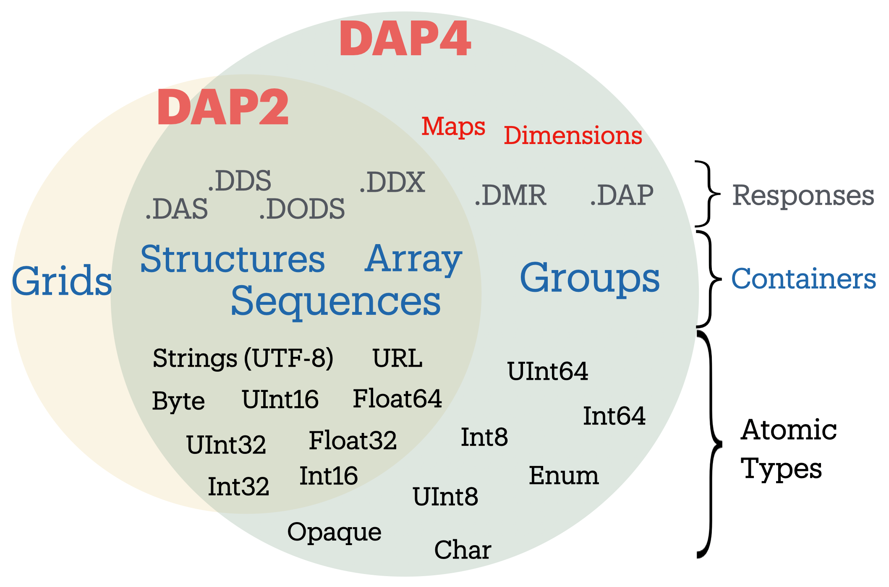

Overview
Following two decades of stability and increasing use, DAP2 is being superseded by DAP4, the first substantive revision in the history of the Data Access Protocol (DAP), an open-source endeavor led by OPeNDAP, Inc. The primary and continuing purpose of DAP is to realize remote, selective, data-retrieval as a widely-accepted and well-crafted Web service. This document outlines the fundamental concepts of DAP4, and (targeting those who have already programmed DAP-compatible clients and servers) it highlights how DAP4 differs from DAP2.
Though the protocol, per se, is maintained primarily by OPeNDAP, many others have engaged in DAP2 realization. One implementationby Unidata, in the University Corp. for Atmospheric Researchincludes the popular THREDDS Data Server (TDS). A key motivation for DAP4, developed jointly by OPeNDAP and Unidata, was to reduce differences that have arisen, and impede interoperability, among DAP2 realizations. Our hope is that a modernized, clearer and more comprehensive specification will facilitate building clients and servers with greater interoperability, making such ventures more rewarding and less risky.
- Data Retrieval as a Web Service
-
The premise underlying DAP4 remains, as in DAP2, that values from data sourcesor, notably, from proper subsetsalong with pertinent metadata may be acquired remotely and effectively through an appropriately defined Web service, operated near the source data. To a surprising degree, DAP services shield users from idiosyncrasies in source-data formats and storage, so DAP functions as middleware with a further advantage: source-data and users may reside anyplace that has Internet connectivity. OPeNDAPs commitment to open source has fostered several DAP-compatible servers and an even larger number of DAP-compatible client environments, several of which (i.e., servers, clients and client-server libraries) are available at no cost.
DAP is designed for selectively retrieving (but not for storing) data organized as variables or groups of variables. It is well suited to cases where client computers retrieve data stored on remote computers (i.e., servers) networked to the client, especially where data sources are huge (comprising large arrays, e.g.) but clients typically need only small subsets of them. The protocol is fundamentally stateless (some might say “RESTful”), and it governs how clients pose requests and how servers issue corresponding responses.
DAPs effectiveness is keyed on the underlying data model, which embraces a rich variety of data types (including tabular and array structures). Based on this model, DAP spells out the (type-specific) retrieval operations that clients may request. The flexibility and domain-neutrality of the DAP data model (which has changed modestly between DAP2 and DAP4) make it effectiveas middleware, per the aboveacross a broad range of data types and disciplinary domains. Stated another way, many kinds of data sources and schemas can be mapped onto the DAP model for retrieval and use by client computers and software.
- Understanding the DAP Data Model
-
-
A Brief Data-Model Summary
Unlike FTP and other protocols enabling clients to access whole files or granules, DAP offers sub-granular retrievals, and this requires exposing the detailed structure of each granule (called a “dataset” in DAP). To this end, the structure of every DAP-accessible dataset is manifest in a machine-readable document called the DMR. DMRs are declaration statements that adhere formally to the DAP Data Model, which is sufficiently general to make retrievable a variety of data granules and data types whose semantics vary widely among the (potential) sources.
The DAP data model is built around a notion of “variables” that fall into three classesatoms, structures and sequencesand may be organized as multidimensional arrays. As reflected in its DMR, all of a datasets variables are named, and they may optionally be grouped (in a hierarchy) to add meaning and allow complex name-driven retrievals by clients. DAP variables are (strongly) typed and optionally may have “attributes” and “dimensions”, the former to clarify meaning and the latter to indicate a variables array shape (where relevant). Attributes resemble variables except that the former may be assigned to the latter, but not vice versa.
Much of DAPs power arises from its typing structure. The value(s) of an atomic variable (whether or not dimensioned as an array) are all of the same atomic type, indicated in the DMR to be integer, floating point, character, string, etc. Structure variables are combinations of atom variables joined for semantic reasons, such as to represent complex numbers, vector-valued parameters, or other relationships among the values of a dataset.
To address a difficult abstraction challengeretrievals from both array-oriented and database-oriented sourcesDAP allows DMRs to declare variables of type “Sequence”. A sequence is like a relation, i.e., a table whose rows are “instances” or “records” and whose columns contain the values of “fields”. In DAP, the content of a sequence may comprise an arbitrary number of instances (i.e., records) whose “fields” are values from other DAP variables.
For example, a sequence named “BirdTracking” might contain variables named “BirdID”, “BandingEvent”, and “ObservedPosition”, and the contents of BirdTracking would be instances that contain values of the specified variables (fields). DAP allows arbitrary nesting of sequences and structures, so in this example BandingEvent could be a structure (containing date and location info for the birds banding) and ObservedPosition could be a sequence (containing equivalent date and location info) whose instances represent subsequent bird observations.
Hypothetically, this is akin to making BirdTracking a structure with a single dimension (though DAP does not allow arrays of indefinite length). However, selective retrieval from an array would require knowing the indices of desired instances, whereas a BirdTracking sequence allows filtering-style retrievals that select instances on the basis of their values.
-
A Rough Glossary of Data-Model Entities
Much about DAP may be discerned from a dictionary or glossary-like list of the key entities in its data model. Such a list follows, sequenced for ease of understanding (rather than alphabetically). These descriptions are not definitive, as the formal specification documents take precedence over anything stated here.
-
Data Source - Though formally outside the DAP Data Model, the term Data Source generally refers to all the datasets (see below) that may be retrieved via DAP from a single server, identified by its domain name. Servers sometimes offer (catalogs and/or inventories of) collections and sub-collections, but the DAP Data Model focuses on granular and sub-granular retrievals.
-
Dataset - Sometimes called a “granule” in catalog/inventory parlance, a DAP Dataset is represented by a unique (unadorned) URL, and is the highest-level entity (metadata as well as content) described by the DAP Data Model. Clients invoke retrieval operations by adorning the Dataset URL with suffixes and query strings interpreted by the server.
-
Declarations and the DMR - For a specific Dataset, all aspects of the DAP Data Model (name assignments, structural definitions, etc) are governed by a formal declarations document. Created as part of making a Dataset DAP-retrievable, this document is dubbed the DMR (roughly: Dataset Metadata Response), and clients may retrieve DMRs alongside or independently of Dataset contents.
-
Name - Most entities in the DAP Data Model may or must be named. With some constraints on the use of special characters (such as “.”), a Name can be any character string. To avoid conflicts, DAP has scoping rules. For example, a Variable and a Dimension may have the same Name without ambiguity, but two Variables can have the same Name only if they are declared in different Groups or structures.
-
Variable - The building blocks for the DAP Data Model are Variables, which are strictly typed. Three classes of them (atoms, structures and sequences) are described separately below, but in actuality these are best distinguished by inspecting their Type declarations. Each Variable must be assigned a Type and a Name, and it may optionally have a number of Dimensions and Attributes, elaborated below.
-
Type - Underpinning DAPs “container” Types (Structure and Sequence, implied above) are “atomic” Types akin to those of computer languages: bytes, integers, floating-point values, strings, and URLs, plus an enum type (permitting specified character strings, such as days of the week, to be treated as variable values) and an opaque type (permitting arbitrary blobs of bits). More detailed Type descriptions are provided in Volume I of the DAP specification.
-
(Atom) Variable - A Variable whose Type is atomic (see above) comprises a single value or an array of values, and all its values are of the designated Type. A Variable is an array only if its declaration includes Dimensions, which determine the arrays shape and its element-ordering (see below).
-
(Structure) Variable - A Variable of Type “Structure” is a container for other variables, often implying relationships among them. For example, a structure Variable named “Velocity” might contain a pair of atom Variables (or fields) named “x” and “y,” representing components of a velocity vector. These components would be retrieved via their “qualified” Names, “Velocity.x” and “Velocity.y”.
Notes on Structures:
-
Structures may contain variables of any type, including other structures.
-
A contained variable can be used in the context of several containers, but these contexts create separate, independent instances.
-
If the semantics of a variable are altered by its context, it should be separately declared in each relevant context. For example, declarations for the atoms “Velocity.x” and “Displacement.x” should be distinct and separate (falling within “Velocity” and “Displacement” declarations respectively) despite reuse of the name “x”.
-
Though a dimensioned structure resembles a structure containing dimensioned variables (with the same shapes), these are not equivalent, and the means for referencing them differ. For example, array element i,j would be referenced as:
-
Velocity[i,j].x if two dimensions are assigned to the Velocity structure.
-
Velocity.x[i,j] if two dimensions are assigned to its x-component variable.
-
-
-
(Sequence) Variable - A Variable of Type “Sequence” is a container holding multiple (unordered) instances of other DAP Variables. For example, a sequence Variable named “TracerParticle” might contain a pair of structures named “Velocity” and “Displacement”, each declaredas in an earlier exampleto have x and y components. The instances of TracerParticle would be like a set of tabular records whose four fields, Displacement.x, Displacement.y, Velocity.x, and Velocity.y are retrieved via filter-style (rather than indexed) retrievals, as discussed in a later section on Constraints.
Notes on Sequences:
-
Sequences may contain variables of any type, including other sequences.
-
Though a sequence is similar in some respects to a structure with a single (indexing) dimension, the differences are significant. For example, if a DAP server offers retrieval of records from a relational data base:
-
The most useful client retrievals may entail filtering based on the values in the fields, and this yields indexing gaps. In other words, indexing may have little or no utility.
-
The number of records may be hidden or dynamic, so a dimension length cannot be calculated, and the order in which records are returned may be volatile.
-
-
Group - The DAP Data Model has a hierarchical mechanism for grouping Variables and carving out independent namespaces. Groups may be nested, and all but one must have Names, the exception being the root of the hierarchy, where the Dataset itself is a Group (needing no name). Retrieving a Variable whose declaration falls within a Named Group requires use of its fully qualified name (FQN), such as GroupA.Group2.Velocity. Any Group (including the Dataset) may be assigned Attributes but not Dimensions.
-
Attribute - Otherwise nearly indistinguishable from a Variable, an Attribute must always be assigned to a specific Variable or Group. The purpose of Attributes is to provide context or add meaning to the assigned entities, whereas the purpose of Variables is to convey primary content. Retrieving an Attribute always requires prepending the name of the Variable or Group to which it is assigned, which implies that Attribute Names (such as “Units”) enjoy unlimited reusability.
-
Dimension - A Dimension must have a size and may have a Name. A Variable of any type may optionally be assigned a number of Dimensions, in which case its (compound) values are organized and retrieved as an indexible array of rank n, where n is the number of assigned Dimensions.
Notes on Dimensions:
-
Named Dimensions resemble named constants. Indeed, assigning a named dimension to multiple variables (within the scope of a single group) has the same effect on each, giving definition to that variables array shape and array-element ordering.
-
Unlike attributes, dimensions often are declared outside the variables to which they are assigned. Groups may not accept dimension assignments, but groups limit the scope of the dimension names and sizes declared within them.
-
Dimensions names may be reused, with differing sizes across multiple groups.
-
The order of the dimension assignments in a variable declaration is significant, as this determines the variables array-element ordering as well as its shape.
-
Retrieving a dimension may require prepending the name of the group in which it was declared but never the name of a variable to which it has been assigned.
-
A Dimensions size must be a positive integer less than 2^61.
-
-
-
Higher-Level DAP Objects and Extensions
Shared Dimensions that serve to indicate relations between different arrays which can be used to build/represent Coverages
Note: Though adoption to-date has been most pronounced in Earth sciences, DAPs data types and structures (with the possible exception of coverages, discussed in this section) are not at all specific to these disciplines, so we think DAP is positioned for effective use in many domains, scientific and otherwise.
-
- Client Use of a DAP Data Source
-
-
High-Level Info about DAP Datasets: the DMR
A clients first step in selectively retrieving a data source often is to discern the character (i.e., its schema) by requesting what DAP calls the DMR (the data-source metadata response). A DMR provides a complete characterization of the associated data source sans content, spelling out its groups, variables, types, dimensions, and attributes as discussed in the preceding two subsections. For ease of use in client software, the DMR adheres to a formal syntax and most often is delivered as an XML document, though other forms are anticipated as DAP4 extensions.
Though it is common to retrieve its DMR prior to requesting content from a data source, this is not the only option. Indeed, a “Data Request” under DAP returns both the DMR and the content (i.e., the values of variables) for the designated data source, because the former is critical for interpreting the latter.
-
Retrieving Content from DAP Datasets: Posing DAP Requests
Under DAP, the requests clients make of servers, and the resulting server responses, are all governed by the protocol specification. As stated previously, the formal specification takes precedent over anything stated here.
For each data source, a number of responses may elicited by a client, determined by adding a suffix and/or a query string to the basic URL for the desired data source. Passing the server a completely unadorned URL yields a Dataset Services Response (DSR). This XML document describes the various DAP services available for that source, and these always include provision of a DMR and provision of content from the source. Unlike the DMR, which is always textual, content (delivered in response to a Data Request, as discussed above) may be conveyed in textual or binary form, the latter minimizing data-transfer volumes, of course.
If the URL for a Data Request includes a query string, the server parses this string to determine what data processing the server should perform before constructing its Data Response. Though other classes of pre-retrieval processing are anticipated to be defined via DAP extensions, two forms are mandated by DAP4 for all servers, Index Subsetting and Field Subsetting, and a third form, Filtering, is defined in the core DAP specification, though its implementation by servers is optional.
Index Subsetting - Choosing parts of an array based on the indexes of that arrays dimensions. This operation always returns an array of the same rank as the original, although the size of the return array will (likely) be smaller. Index subsetting uses the bracket syntax described later.
Field Subsetting - Choosing specific variables or fields from the dataset. A dataset in DAP4 is made up of a number of variables and those may be Structures or Sequences that contain fields (and, in effect, the Dataset is itself a Structure and all of its variables are fields - the distinction is more convenience than formal). Field subsetting using the brace syntax described later. One or more fields can be specified using a semicolon (;) as the separator.
Filtering - A filter is a predicate that can be used to choose data elements based on their values. the vertical bar (|) is used as a prefix operator for the filter predicate. Filters can be applied to elements of an Array or fields of a Sequence. A filter predicate consists of one or more filter subexpressions. One or more subexpressions can be specified, using a comma (,) as the separator.
Other services listed in the DSR might (at the servers option) include the DAP Asynchronous Response. Where implemented (such as for near-line data sources), this response is sent to the client when the requested resource (DMR, Data Response, etc.) is not immediately available. If, in turn, the client makes a “retrieve it” request, the server will respond with a second Asynchronous Response informing the client about when and where the requested resource may be retrieved.
In addition to the most common data objects, a DAP server may provide additional “services,” such as HTML-formatted representations of a data sources structure and content. Such additional services are discussed in Volume 2 of the specification.
-
- The Formal DAP Specification
-
The DAP4 specification spans two volumes: one describes the Data Model and DAPs Request/Response objects; the other volume describes how DAP clients and servers communicate via HTTP and the modern Web. New volumes about DAP Extensions will be added as they emerge.
Partitioning the specification into two primary documents reflects the independence of DAPs data-retrieval functionality from the underlying network transfer protocol. Indeed, DAP could be used with other transports. However, utilizing HTTP eases the building of DAP servers because they can take full advantage of widely used Web-server frameworks such as Apache. Use of Extensions documents will enable evolution of the protocol without the expense and complexity of another major protocol-development project. Anticipated extensions include a JSON encoding for DAP data/metadata and the provision of server functions (beyond DAPs core subsetting and filtering operations).
The specification is available at these links:
- How DAP4 Differs from DAP2
-
Figure 1. Differences in the data model and response types between DAP2 and DAP4. For a complete overview of differences, see text.
This section covers changes to the data model, response formats, and serialization, giving developers a roadmap to migration from DAP2 to DAP4. E.g., the “Grid” type now supports a notion of discrete functions similar to an OGC/ISO Discrete Coverage and to the Scientific Data Type found in Unidatas Common Data Model (CDM). Also from this section, users may learn of functionalities to seek in clients. E.g., DAP4 servers return checksums with each data response, but clients may utilize these in varying degrees.
DAP4 is largely an extension of DAP2 concepts, is close to a superset of DAP2 (see Figure 1), and includes ideas that emerged as DAP gained prominence across the Earth sciences. Therefore DAP2-compatible software, in clients or servers, should be easy to adapt to DAP4, and this has been affirmed in the OPeNDAP-Unidata realization and testing work. Furthermore, DAP4 exhibits backward compatibility sufficient to enable gradual transitioning. Substantive changes include support for Groups, yielding greater compatibility with HDF and NetCDF4.
-
Data-Model Changes
Summary: DAP4 now supports
Groups, a generalized form of a grid datatype, adds a few new atomic types, butGridsare removed from the DAP4 Data model.The DAP4 data model is fundamentally similar to that for DAP2. New atomic types include: enumeration, 64-bit integer, and opaque, the container types removes
Gridsbut now include Groups (see Figure 1). In DAP4, a DAP2Gridis represented by anArraytogether with information about itsDimensionswhich may be shared, andMaps(see Coverage Variables and Maps). Groups provide a way to organize collections of variables and dimensions and to encode these organizational relationships when they are present in the underlying source data.Dimensions may now be named, and the presence of shared dimensions (i.e., several variables employ a dimension with a given name) along with explicitly name ‘maps’ serves to indicate relationships among arrays that can, in turn, be used to build/represent a more general form of the DAP2 Grid datatype that resembles the OGC/ISO “discrete coverage” datatype. These ‘discrete coverages’ subsume the role of DAP2 Grids, so the latter have been removed from DAP4.
Migrating from DAP2 to DAP4
For servers: A DAP2 DDS/DAS (or DDX) is very close to a DAP4 DMR (indeed, our C++ library contains a way to build a DMR from a DDS). The set of datatypes supported by DAP4 is almost a proper superset of those in DAP2 (see Figure 1]), the exception being that DAP2s Grid type has been removed. To represent a DAP2 Grid in DAP4, the components of the DAP2 Grid are retained and the appropriate Shared Dimension and Map elements are added to the dataset/group and array. Since the DAP4 ‘discrete coverage’ type subsumes the DAP2 Grid, it will always be possible to translate a DAP2 Grid into DAP4.
For clients: Some of the new data types are more challenging to implement than the types included with DAP2. Of particular note are Enumerations and the expanded grid (aka ‘discrete coverage’) types.
-
Changed Responses
Summary of the main changes between DAP2 and DAP4 Responses:
-
DAP4 includes only one dataset metadata response, the DMR not two;
-
Several Sequences may be individually constrained in one access;
-
Predictable behavior for ‘bare’ URLs; and
-
Asynchronous responses
In DAP4 there is a single XML document, the DMR (see Figure 1), that encodes the metadata for a data source. This response is conceptually similar to, and in some ways identical too, the DDX response that is supported by many DAP2 servers, so its organization will be familiar to many people already. As with DAP2, there is one data response that can be modified (constrained) using a expression to limit the information it includes. The basic concepts of slicing an array are unchanged in DAP4. Weve taken care to allow servers to extend the information passed into the data retrieval web service, a topic that is covered in a bit more detail below under web services. We have replaced the selection part of the DAP2 constraint expression with a filter sub-expression that is applied to specific variables. This enables two or more Sequences to have their own filtering operations (before that was not possible). Our expanded constraint language also provides a way to subset coverages, and a proposed extension to the filtering sub-expression provides a way to subset arrays/coverages by value.
We wanted DAP4 to fully embrace REST. DAP2, even though it predates the term, including many, but not all, of the REST architectures features. One change from DAP2 was to explicitly define what happens when a client dereferences a ‘bare URL’ (one without an extension used to ask for a specific DAP4 response). When a DAP4 sever is asked to return information at a bare URL, the result is a Dataset Services Response (DSR) which contains links to all of the other responses for that dataset. In addition, the DSR may contain other information such as server operations that can be used with the dataset. The DSR is an XML document but can contain a stylesheet that transforms it to HTML for a web browser.
DAP4 servers can also support asynchronous access to data, which enables access to data from near-line devices and can be used for some server processing operations (e.g., operations that take a long time to perform). Asynchronous responses are responses that contain a URL that can be used to retrieve the actual data at some time in the future. The protocol has been designed to reduce the chance that a client will mistakenly make a large number of asynchronous requests since this could present an undue burden on some kinds of near-line devices.
Migrating from DAP2 to DAP4
-
If your server or client already reads DAP2 DDX responses (which were never part of the official protocol but are widely used) then adapting to the DMR will be very easy since they are very close in structure.
-
Support for the new constraints may take a bit more work since now the Constraint Expression and Server Functions have been separated.
-
Clients will benefit from asynchronous response support, but this is a new behavior and may take some serious thought, particularly for clients that relied on the simpler semantics borrowed from file system accesses.
-
-
Response-Encoding Changes
Summary:
-
Checksums for data values;
-
Reliable delivery of error messages to clients;
-
Encode data using the servers native word order.
We have added three changes to the encoding of returned data values. All top-level variables in a data response now include a CRC32 checksum of their values. This enables people to see if a request is returning the same data values as it did previously. The checksum values are encoded in Attributes bound to the returned variables. We have added an encoding scheme for data values that preserves compactness yet allows clients to easily detect when a server has encountered an error while sending a response. Similarly, we have adopted a Reader Make Right encoding scheme instead of the network byte order scheme used by DAP2. The latter has become more and more important as the predominance of little-endian processors has increased.
Migrating from DAP2 to DAP4
In many ways the encoding scheme is simpler for servers because the data response uses the servers native byte order. Clients must detect the byte order and twiddle bytes as needed. However, the server must correctly implement the chunking protocol used by the data response and must correctly computer CRC32 checksums for each of the top level variables.
-
-
Changes in the Use of HTTP
Summary
DAP4 is closer than DAP2 to the REST (Representational State Transfer) architecture, and it uses HATEOS (Hypermedia As The Engine Of Application State), making all of the servers responses explicit via links in a document.
While DAP2 interwove the DAP and HTTP, using, for example, some of the HTTP headers as the only source of information that was critical to the DAP itself, DAP4 does not. Instead, DAP4 is completely isolated from HTTP, enabling it to work with other protocols without change. However, in as much as HTTP is a ubiquitous network transport protocol, the DAP4 specification includes a volume devoted solely to how a server should implement DAP4 web services using HTTP.
The REST interface for the protocol is described in Volume 2, Web Services, of the specification. DAP4 requires that a server implement at least three responses for each dataset: The DSR; DMR; and Data response. The DSR is a XML document that provides a capabilities response for the dataset. This document provides links to all of the other responses available for the dataset, along with other information. The DSR provides information about alternative encodings for the different responses in addition to enumerating the basic responses themselves. The DSR may also list server functions that may be used with/on the dataset.
DAP4 servers are encouraged to support HTTP content negotiation, providing the standard DSR, DMR and Data responses in a variety of forms.
Migrating from DAP2 to DAP4
The web service for DAP4 will likely need to be written from scratch, but the good news is that those are easy to write. For clients, the behavioral differences between DAP2 and DAP4 servers are small, with two exceptions. Since DAP4 optionally supports asynchronous responses, clients should be modified to access data available only using this new feature. DAP4 also supports content negotiation and that means a larger number of ways to get the different responses (even though each protocol has three basic responses).
-
- Acknowledgments
-
DAP4 is the result of a joint, multiyear development effort by OPeNDAP and Unidata, funded by a generous grant from NOAA and guided by an advisory committee comprising Mike Folk (THG), Jim Frew (UCSB), Steve Hankin (NOAA), Eric Kihn (NOAA), Chris Lynnes (NASA) and Rich Signell (USGS).
1. Data Model, Persistent Representations, and Constraints
Abstract This document defines the Data Access Protocol (DAP) version 4.0 (referred to also as DAP4). This data transmission protocol is intended to supersede all previous versions of the DAP protocol. DAP4 is designed specifically for science data, but it is intended to be discipline neutral. The protocol relies on widely used and stable standards, and is capable of representing a wide variety of scientific data types.
First Draft |
May 24, 2012. |
Last Revised: |
24 February 2016 |
Status |
Final |
Authors |
|
John Caron (Unidata) |
|
Ethan Davis (Unidata) |
|
David Fulker (OPeNDAP) |
|
James Gallagher (OPeNDAP) |
|
Dennis Heimbigner (Unidata) |
|
Nathan Potter (OPeNDAP) |
2012.05.24 |
Initial Draft |
2012.05.27 |
Added specification of chunk order |
2012.05.28 |
Added specification and interpretation of simple queries |
2012.05.28 |
Added discussion about nested sequences. |
2012.05.29 |
Formatting changes |
2012.6.05 |
Removed serialized representation sections and constraint sections until James provides direction. |
2012.6.24 |
Merge all changes from Gallagher, Potter, and Caron, except as noted. |
2012.6.24 |
Removed all references to Sequences. |
2012.6.24 |
Inserted James version of serialized representation. |
2012.6.25 |
Added DMR RELAX-NG Grammar. |
2012.6.24 |
Added (semi-)formal description of the DAP4 serialization scheme. |
2012.6.26 |
Added: (1) Revised Char type (2) Revised unlimited dimension rules (3) revised MAP rules. (4) Removed HTTP references |
2012.7.09 |
Added discussion of identifier |
2012.7.10 |
Added discussion of XML escaping |
2012.7.10 |
Fix discrepancies between the formal definition of the on-th-wire format and the examples. |
2012.7.12 |
Removed UByte and made Byte == UInt8 |
2012.8.21 |
Added draft constraints section |
2012.8.25 |
Improved the discussion of named slices in constraints. |
2012.9.4 |
Minor change to the grammar for simple constraints. |
2012.9.6 |
Updated the Data Response section so that it no longer mentions Multipart MIME; edited the sections on FQNs and Attributes. Ive added ‘nested attributes’ back into the text. I also added ‘Sequence’ in several places where we will need it once weve worked out how those are to be handled. |
2012.11.1 |
Integrate James’s changes with recent changes |
2012.11.9 |
Rebuild the .docx because of repeated Word crashes; minor formatting info changed/lost. |
2012.11.2 |
Add a Dataset construct to make the root group concept clear syntactically. |
2013.3.8 |
Made unlimited into a boolean attribute because it does have a size. |
2013.4.7 |
Inserted the new checksum description. |
2013.4.15 |
Removed all mention of unlimited wrt Dimensions |
2013.4.15 |
Remove the base and ns attributes from <Dataset> |
2013.4.15 |
Introduce <Sequence> as a replacement for variable length dimensions; The term Sequence is subject to future change. |
2013.10.14 |
Clarify the maximum number of elements as a function of the maximum number of bytes. |
2013.10.14 |
Enforce a specific order on declarations in a Group body. |
2013.11.22 |
Added sections for DSR, Async, and Error responses and their schemas |
2013.11.22 |
Specified the case sensitivity of XML element names and XML attribute names |
2014.07.04 |
Make a pass to clean up and clarify (dmh) |
2016.02.14 |
Rollback to version of 2015.12.16 |
2016.02.24 |
Add back the multiple disjoint slice subset. Provide a general mechanism for arbitrary reserved names. |
2016.10.25 |
Add _DAP4_Little_Endian attribute to the DMR to reflect the bytorder used to encode the serialized data. |
2016.12.5 |
Forgot to mention adding the special names section (5.3) |
2016.12.18 |
Clarified the reserved names section (5.3) to say that all names beginning with _ are reserved, but that the reverse DNS case is preferred. |
1.1. Introduction
This specification defines the protocol referred to as the Data Access Protocol, version 4.0 (“DAP4”). In this document ‘DAP’ refers to DAP4 unless otherwise noted.
DAP is intended to be the successor to all previous versions of the DAP (specifically DAP version 2.0). The goal is to provide a very general data model capable of representing a wide variety of existing data sets.
The DAP builds upon a number of existing data representation schemes. Specifically, it is influenced by CDM [1], HDF5 [2], DAP version 2.0 [3], and netCDF-4 [4].
The DAP is a protocol for access to data organized as variables. It is particularly suited to accesses by a client computer to data stored on remote (server) computers that are networked to the client computer. DAP was designed to hide the implementation of different collections of data. The assumption is that a wide variety of data sets using a wide variety of data schemas can be translated into the DAP protocol for transmission from the server holding that dataset to a client computer for processing.
It is important to stress the discipline neutrality of the DAP and the relationship between this and adoption of the DAP in disciplines other than the Earth sciences. Because the DAP is agnostic as relates to discipline, it can be used across the very broad range of data types encountered in oceanography - biological, chemical, physical and geological. There is nothing that constrains the use of the DAP to the Earth sciences.
1.2. Requirements
The key words “MUST”, “MUST NOT”, “REQUIRED”, “SHALL”, “SHALL NOT”, “SHOULD”, “SHOULD NOT”, “RECOMMENDED”, “MAY” and “OPTIONAL” in this document are to be interpreted as described in RFC 2119 [5].
1.3. Overall Operation
The DAP is a stateless protocol that governs clients making requests from servers, and servers issuing responses to those requests. This section provides an overview of the requests and responses (i.e. the messages) that DAP-compliant software MUST support. These messages are used to request information about a server and data made accessible by that server, as well as requesting data values themselves.
For every data resource the DAP defines a number of responses that may elicited by a client. These responses provide services information (i.e. capabilities), structural/semantic descriptions, data access timing and error information.
The Dataset Services Response (DSR) provides a ‘Services’ or ‘Capabilities’ response for the DAP. Dereferencing an unadorned DAP dataset resource URL will return a document describing the DAP services available for the dataset.
The DAP utilizes two responses to represent semantic structural description and data content of a data source. One response, called the DMR, returns metadata information describing the structure of a request for data. That is, it characterizes the variables, their datatypes, names and attributes. The second response, the Data Response, returns both the metadata about the request, but also the data that was requested. The DMR and the metadata part of the Data Response are represented using a specific XML representation[16]. The syntax of that representation is defined elsewhere in this document (Section [1.5.4]).
The DAP returns error information using an Error response. If a request for any of the three basic responses cannot be completed then an Error response is returned in its place.
The two responses (DMR and Data Response) are complete in and of themselves so that, for example, a client can use the data response without ever requesting either of the two other responses. In many cases, client programs will request the DMR response first before requesting the Data Response but there is no requirement they do so and no server SHALL require that behavior on the part of clients.
Operationally, communication between a DAP client and a DAP server uses some underlying already existing protocol, most typically HTTP. In addition, a DAP server MAY provide additional “services” which clients may find useful. For example, many DAP-compliant servers provide HTML-formatted representations or ASCII representations of a data sources structure and data. Such additional services are discussed in Volume 2 of this specification.
The DAP specification also defines extensions to the protocol and representing important, but optional, capabilities. At least the following extensions have been defined. 1. Asynchronous Response. The DAP Asynchronous Response is returned to a client when the requested resource (DMR, Data Response, etc.) is not immediately available and by making a specific request that it be made available the server is able to retrieve it. If the client makes the “retrieve it” request the server will inform the client through a subsequent Asynchronous Response when and where the client may access the requested resource. 2. CSV Data Encoding. The DAP4 CSV data encoding represents DAP4 data as structured Comma-Separated Values (CSV) in UTF-8 text. Though based on the text/csv media type described in RFC 4180[18], the DAP4 CSV is more complex so that it can fully represent the more complex data structures of the DAP4 data model. Some structure beyond simple CSV is necessary to capture the DAP4 data structures.
1.4. Characterization of a Data Source
The DAP characterizes a data source as a collection of variables, dimensions, and enumeration types. Each variable consists of a name, a type, a value, and a collection of Attributes. Dimensions have a name and a size. Enumerations list names and values of the enumeration constants. These elements may be grouped into collections using the concept of a “group” that has an identifier and defines a naming scope for the elements within it. Groups may contain other groups.
The distinction between information in a variable and in an Attribute is somewhat arbitrary. However, the intention is that Attributes hold information that aids in the interpretation of data held in a variable. Variables, on the other hand, hold the primary content of a data source.
Section [1.10.1] provides a formal syntax for DAP DMR characterizations. It is defined using the RelaxNG standard [13] for describing the context-free syntax of a class of XML documents, the DMR in this case. It should be noted that any syntax specification requires a specification of the lexical elements of the syntax. The XML specification [16] provides most of the lexical context for the syntax, but there are certain places where additional lexical elements must be used. Section [1.10.2] describes those additional lexical elements, and those elements are discussed at appropriate points in this specification.
Since the syntax is context-free, there are semantic limitations on what is legal in a DMR. These semantic limitations are noted at appropriate places in the following documentation. It should also be noted that if there are conflicts between what is described here and the RelaxNG syntax, then the syntax takes precedence.
1.5. DMR Declarations
1.5.1. DMR XML Format
Element and Attribute Names
Within the DMR XML document, it is assumed that XML element and XML
attribute names are case sensitive.
Character Escapes Any string of characters appearing within an XML attribute in the DMR must apply the standard XML escapes. Specifically, any attribute value containing any of the following characters must replace them with the corresponding XML escape form.
Character |
Escaped Form |
& |
|
< |
|
> |
|
|
So for example, given the occurrence of the attribute ‘name=“&<>”’ it must be re-written to this form ‘name=“&<>”’.
1.5.2. Names
A name (aka identifier) in DAP4 consists of a sequence of any legal non-control UTF-8 characters. A control character is any UTF-8 character in the inclusive range 0x00 0x1F. Names are case sensitive.
1.5.3. Reserved Names
Any name that begins with the character sequence “_” is considered reserved. Note that if the receiver encounters such a name and has no information on how to process the name, it may at its discretion either ignore the object with that name, or it may treat the name as an ordinary name.
A special case is when the “_” is followed by a reverse DNS name defining both the definer of that reserved name and possible additional naming information. This form of reserved name is preferred because it provides information about the organization that defined it.
A (reverse) DNS name is of this syntactic form.
DNS = <name> | DNS '.' <name>
An example might be edu.ucar.unidata.NAME1.NAME2. This indicates
the owner/definer of that name is edu.ucar.unidata and that the
additional naming information (NAME1.NAME2) has meaning to the owner
for defining the semantics of the so-named object.
1.5.4. Fully Qualified Names
Every object in a DAP4 Dataset has a Fully Qualified Name (FQN), which provides a way to unambiguously reference declarations in a dataset and which can be used in several contexts such as in the DMR in a constraint expression (see Section 1.8).
These FQNs follow the common conventions of names for lexically scoped identifiers. In DAP4 several kinds of lexical items provide lexical scoping: Dataset, Groups, Structures, Sequences, Enumerations, and AttributeSets. Just as with hierarchical file systems or variables in many programming languages, a simple grammar formally defines how the names are built using the names of the FQNs components (see Section 1.10.2).
The FQN for a “top-level” variable as opposed to e.g.a field in a structure or sequence is defined purely by the sequence of enclosing groups plus the variables simple name. This also holds for Enumeration declarations.
Consider the following simple dataset, which contains a Structure named “inner” within a Structure named “outer” all contained in the Dataset “D”.
<Dataset name="D">
<Structure name="places">
<String name="name"/>
<Structure name="weather">
<Float64 name="temperature"/>
<Float64 name="dew_point"/>
</Structure>
</Structure>
</Dataset>The FQN for the field ‘temperature’ is
'/places.weather.temperature'
Substituting the keyword Sequence for one or more occurrences of Structure in the above example will leave the FQNs unchanged. Note that the name of the dataset (“D”) is not included; it is implied by the leading “/”.
As is the case with Structure or Sequence variables, Groups can be nested to form hierarchies, too, and this example shows that case.
<Dataset name="D">
<Group name="environmental_data">
<Structure name="places">
<String name="name"/>
<Sequence name="weather">
<Float64 name="temperature"/>
<Float64 name="dew_point"/>
</Sequence>
</Structure>
</Group>
<Group name="demographic_data">
...
</Group>
</Dataset>The FQN to the field temperature in the dataset shown is
'/environmental_data/places.weather.temperature'
Note the use of a different separator character . instead of / once we enter the scope of a structure (or sequence).
Enumeration constants are treated similarly to fields. Consider this example.
<Dataset name="DE">
<Enumeration name="e">
<EnumConst name="v1" value="5"/>
</Enumeration>
</Dataset>The FQN for the v1 constant in e is as follows.
/e.v1
Notes:
-
Every dataset has a single outermost
<Dataset>declaration, which semantically, acts like the root group. Whatever name that dataset has is ignored for the purposes of forming the FQN and instead is treated as if it has the empty name (). -
There is no limit to the nesting of groups or the nesting of Structures or the nesting of Sequences. Enumerations cannot be nested.
-
Reserved names (see above) inherently contain characters (
.) that will require escaping.
The characters / and . have special meaning in the context of a
fully qualified name. This means that if a name is added to the FQN and
that name contains either of those two characters, then those characters
must be specially escaped so that they will not be misinterpreted. The
defined escapes are as follows.
Character |
Escaped Form |
. |
|
/ |
|
\ |
|
blank |
|
Note that the escape character itself must be escaped. Also note that this form of escape using ‘\’ is independent of any required XML escape (Section 1.5.1).
1.5.5. FQN References
DAP4 imposes the rule that the definition of any object (e.g.dimension, group, or enumeration) must occur before any reference to that object. This rule also applies within a group, which in turn implies that, for example, all dimensions must be declared before all variables that reference them.
1.5.6. Definitional Declarations versus Data-Bearing Declarations
The declarations in a DMR can be grouped into two classes. One class is definitional. That is, it defines metadata that is used in the rest of the DMR. These definitional declarations are Groups (including the outer Dataset), Dimensions, and Enumerations. Such declarations do not contain data values themselves, although they may define constants such as the dimension size. The data-bearing declarations are Variables and Attributes. These elements of the data model are used to house data values or semantic metadata read from the dataset (or, in the latter case) synthesized from the values and standards/conventions that the dataset is known to follow.
1.5.7. Dataset
Every DMR contains exactly one Dataset declaration. It is the outermost XML element of the DMR.
A dataset is specified using this XML form:
<Dataset name="..." dapVersion="..." dmrVersion="...">
...
</Dataset>The name, dapVersion, and dmrVersion attributes are required. The
attributes have the following semantics:
-
namean identifier specifying the name of the dataset. Its content is determined solely by the Server and is completely uninterpreted with respect to DAP4. -
dapVersionthe string4.0currently. -
dmrVersionthe string1.0currently.
The body of the Dataset is the same as the body of a [1.5.8], and semantically the Dataset acts like the outermost, root, group.
1.5.8. Groups
A group is specified using this XML form:
<Group name="name">
...
<Group>A group defines a name space and contains other DAP elements. Specifically, it can contain in this order: dimension, enumerations, variables, and (sub-)groups. The fact that groups can be nested means that the set of groups in a DMR form a tree data structure. For any given DMR, there exists a root group that is the root of this tree.
A nested set of groups defines a variety of name spaces and access to
the contents of a group is specified using a notation of the form
/g1/g2//gn. This is called a path. By convention / refers
to the root group (the Dataset declaration). Thus the path /g1/g2/g3
indicates that one should start in the root group, move to group g1
within that root group, then to group g2 within group g1, and finally to
group g3. This is more fully described in the section on Fully Qualified
names (Section [1.5.4]).
The order of declarations within a Group is fixed and must conform to this order.
-
Dimension declarations,
-
Enumeration declarations,
-
Variable declarations,
-
and, finally, nested Group declarations,
For comparison purposes, DAP groups correspond to netCDF-4 groups and not to the more complex HDF5 Group type: i.e.the set of groups must form a tree.
Semantic Notes
-
If declared, Groups must be named.
-
A Group can contain any number of objects, including other Groups.
-
Each Group declares a new lexical scope for the objects it contains.
-
An array of Group is not allowed, and a Group cannot be defined within a Structure or Sequence.
1.5.9. Dimensions
A dimension declaration is specified using this XML form.
<Dimension name="name" size="size"/>The size is a positive integer (which means that a zero length dimension
is illegal). As described in the Arrays Section, the maximum size of any
dimension is \$2^(61) - 1\$. A dimension declaration will be referenced
elsewhere in the DMR by specifying its name. It should also be noted
that anonymous dimensions also exist. They have a size but no name.
Anonymous dimensions SHOULD NOT be declared.
Semantic Notes
-
Dimension declarations are not associated with a data type.
-
Dimension sizes MUST be a capable of being represented as a signed 64-bit integer.
1.5.10. Enumeration Types
An enumeration type defines a set of names with specific values called enumeration constants. As will be seen in Section [1.5.13], enumeration types may be used as the type for variables or attributes. The values that can be assigned to such typed objects must come from the set of enumeration constants.
An enumeration type specifies a set of named, integer constants. When a data source has a variable of type ‘Enumeration’ a DAP 4 server MUST represent that variable using a specified integer type, up to and including a 64-bit unsigned integer.
An Enumeration type is declared using this XML form.
<Enumeration name="name">
basetype="Byte|Int8|UInt8|Int16|UInt16
|Int32|UInt32|Int64|UInt64"/>
<EnumConst name="name" value="integer"/>
...
</Enumeration>Semantic Notes
-
The optional “basetype” XML attribute defines the type for the value XML attribute of each enumeration constant. This basetype must be one of the integer types (see Integer Types). If unspecified, then it defaults to the Atomic type “Int32”.
1.5.11. Atomic Types
The DAP4 specification assumes the existence of certain pre-defined, declared types called atomic types. As their name suggests, atomic data types are conceptually indivisible. Atomic variables are used to store integers, real numbers, strings and URLs. There are five classes of atomic types, with each family containing one or more variations: integer, floating-point, string, enumerations, and opaque.
Integer Types
The integer types are summarized in the following table. The syntax for integer constants is defined in Appendix 1.10.2.
Type Name |
Description |
Range of Legal Values |
Int8 |
Signed 8-bit integer |
\$ [-2^(7), 2^(7) - 1\$] |
UInt8 |
Unsigned 8-bit integer |
\$[0, 2^8 - 1\$] |
Byte |
Synonym for UInt8 |
\$[0, 2^8 - 1\$] |
Char |
Synonym for UInt8 |
\$[0, 2^8 - 1\$] |
Int16 |
Signed 16-bit integer |
\$[-2^(15), 2^(15) - 1\$] |
UInt16 |
Unsigned 16-bit integer |
\$[0, 2^(16) - 1\$] |
Int32 |
Signed 32-bit integer |
\$[-2^(31), 2^(31) - 1\$] |
UInt32 |
Unsigned 32-bit integer |
\$[0, 2^(32) - 1\$] |
Int64 |
Signed 64-bit integer |
\$[-2^(63), 2^(63) - 1\$] |
UInt64 |
Unsigned 64-bit integer |
\$[0, 2^(64) - 1\$] |
Note that for historical reasons, the Char type is defined to be a
synonym of UInt8, this mean that technically, the Char type has no
associated character set encoding. However, servers and clients are free
to infer typical character semantics to this type. The inferred
character set encoding is chosen purely at the discretion of the server
or client using whatever conventions they agree to use, possibly
specified using attributes. Note specifically that multi-byte character
encodings such as UTF-8 are problematic precisely because they can be
multi-byte.
Floating Point Types
The floating-point data types are summarized in Table 2. The two floating-point data types use IEEE 754 [7] to represent values. The two types correspond to ANSI Cs float and double data types. The syntax for floating point constants is defined in Appendix 1.10.2.
Type Name |
Description |
Range of Legal Values |
Float32 |
32-bit Floating-point number |
Refer to the IEEE Floating Point Standard [7] |
Float64 |
64-bit Floating-point number |
Refer to the IEEE Floating Point Standard [7] |
String Types
The string data types are summarized in Table 3. Again, the syntax for these is defined in Appendix 1.10.2
Strings are individually sized. This means that in an array of strings, for example, each instance of that string MAY be of a different size.
Type Name |
Description |
Range of Legal Values |
String |
A variable length string of UTF-8 characters |
As defined in [14] |
URI |
A Uniform Resource Identifier |
As defined in IETF RFC 2396 [8] |
The Opaque Type
The XML scheme for declaring an Opaque type is as follows.
<Opaque>The Opaque type is use to hold objects like JPEG images and other Binary
Large Object (BLOB) data that have significant internal structure which
might be understood by clients (e.g., an image display program) but that
would be very cumbersome to describe using the DAP4 built-in types.
Defining a variable of type Opaque does not communicate any
information about its content, although an attribute could be used to do
that.
Opaque instances are individually sized. This means that in an array of opaques, for example, each instance of that opaque MAY be of a different size.
Semantic Notes
-
The content of an opaque object is completely un-interpreted by the DAP4 implementation. The
Opaquetype is anAtomicType, which might seem odd because instances ofOpaquecan be of different sizes. However, by thinking of Opaque as equivalent to a byte-string type, the analogy with strings makes it clear that it should be an Atomic type.
The Enum Type
The XML scheme for declaring an Enum type is as follows.
<Enum enum="FQN">The Enum type is intended to be used in the definition of a variable. It
should not be confused with the definition of an Enumeration, but rather
references such a definition.
Semantic Notes
-
The Enum typed requires the an attribute that references a previously defined <Enumeration> declaration.
A Note Regarding Implementation of the Atomic Types
When implementing the DAP, it is important to match information in a data source or read from a DAP response to the local data type which best fits those data. In some cases an exact match may not be possible. For example Java lacks unsigned integer types [6]. Implementations faced with such limitations MUST ensure that clients will be able to retrieve the full range of values from the data source. If this is impractical, then the server or client may implement this rule by hiding the variable in question or returning an error.
1.5.12. Container Types
There are currently two container types: <Structure> and <Sequence>.
The Structure Type
A Structure groups a list of variables so that the collection can be manipulated as a single item. The variables in a Structure may also be referred to as “fields” to conform to conventional use of that term, but there is otherwise no distinction between fields and variables. The Structures fields MAY be of any type, including Structure or Sequence. The order of items in the Structure is significant only in relation to the serialized representation of that Structure.
The Sequence Type
A Sequence is intended to represent a sequence of instances of
objects. Suppose that we have a sequence of this form.
<Sequence name="s">
<Float64 name="field1"/>
<Float64 name="field2"/>
</Sequence>The corresponding Structure object is obtained by substituting the
Sequence keyword with Structure. Our above example then has this
associated Structure.
<Structure name="s">
<Float64 name="field1"/>
<Float64 name="field2"/>
</Structure>The semantics of a sequence are that it represents a sequence of
instances of the corresponding Structure. The length of the Sequence MAY
be different for every instance of a Sequence. Consider this array of
Sequence.
<Sequence name="s">
...
<Dim size="3">
<Dim size="2">
</Sequence>This represents an array of six (3 times 2) sequence instances. However,
the length MAY be different for each of those six instances.
Note that the <Sequence> construct was introduced to replace the concept
of variable length dimensions. It turns out that trying to treat
variable length dimensions as dimensions causes significant conceptual
and implementation difficulties. It is hoped that isolating such
variable length objects syntactically is a better representation.
Semantic Notes
-
StructuresandSequencesMAY freely nested.
1.5.13. Variables
Each variable in a data source MUST have a name, a type and one or more values. Using just this information and armed with an understanding of the definition of the DAP data types, a program can read any or all of the information from a data source.
The DAP variables come in several different types. There are several atomic types, the basic indivisible types representing integers, floating point numbers and the like, and a container type the Structure or Sequence type that supports aggregation of other variables into a single unit. A container type may contain both atomic typed variable as well as other container typed variables, thus allowing nested type definitions.
The DAP variables describe the data when it is being transferred from the server to the client. It does not necessarily describe the format of the data inside the server or client. The DAP defines, for each data type described in this document, a serialized representation, which is the information actually communicated between DAP servers and DAP clients. The serialized representation consists of two parts: the declaration of the type and the serialized encoding of its value(s). The data representation is presented in Section [1.6.1].
Arrays
An Array is a multi-dimensional indexed data structure. An Arrays member variable MUST be of some DAP data type. Array indexes MUST start at zero. Arrays MUST be stored in row-major order (as is the case with ANSI C), which means that the order of declaration of dimensions is significant. The size of each Arrays dimensions MUST be given. The total number of elements in an Array is fixed as that given by the product of the size(s) of its dimension(s). Note that a dimension size of zero is illegal.
For practical reasons having to do with current hardware limitations, the total number of bytes allocated to an array must fit in an unsigned 64-bit integer. The largest atomic types currently defined in this document are the floating point double and the (U)Int64 integer types. This means that the practical limit on the total number of elements is \$2^(64) / 8 = 2^(61)\$. Thus the dimension indices will run from 0 to a maximum of \$2^(61) - 1\$. Of course this limit on the maximum number of elements also applies to the maximum dimension size since the total number of elements is the product of all the dimensions sizes of the array.
There is a prescribed limit of 64 on the number of of dimensions for a variable (i.e. its arity). This is actually larger than will occur in practice. Assuming a dimension must be at least 1 bit in size, this effectively limits the number of dimensions to 61.
Semantic Notes
-
Simple variables (see below) MAY be arrays.
-
Structures and Sequences MAY be arrays.
Simple Variables
A simple, dimensioned variable is declared using this XML form.
<Int32 name="name">
<Dim name="{fqn}"/>
...
<Dim size="{integer}"/>
</Int32>Note the use of two types of dimensions:
-
name="{fqn}"specify the fully qualified name of a Dimension that has been declared previously in the XML document order. See [19]. -
size="{integer}"specify an anonymous dimension of a given size.
A simple variable is one whose type is one of the Atomic Types (see
Section [1.5.11]). The name of the Atomic Type (Int32 in
this example) is used as the XML element name. Within the body of that
element, it is possible to specify zero or more dimension references. A
dimension reference (<Dim/>) MAY refer to a previously defined
dimension declaration. It MAY also define an anonymous dimension with no
name, but with a size specified as an integer constant.
Semantic Notes
-
N.A.
Dimension Ordering
Consider this example.
<Int32 name="i">
<Dim name="/d1"/>
<Dim name="/d2"/>
...
<Dim name="/dn"/>
</Int32>The dimensions are considered ordered from top to bottom. From this, a corresponding left-to-right order [d1][d2][dn] can be inferred where the top dimension is the left-most and the bottom dimension is the right-most. The assumption of row-major order means that in enumerating all possible combinations of these dimensions, the right-most is considered to vary the fastest. The terms “right(most)” or “left(most”) refer to this left-to-right ordering of dimensions.
Structure Variables
As with simple variables, a structure variable specifies a type as well
as any dimension for that variable. The type, however, is a Structure.
Structures
The XML scheme for a Structure typed variable is as follows.
<Structure name="name">
{variable definition}
{variable definition}
...
{variable definition}
<Dim name='/d1' />
...
<Dim name='/dn' />
</Structure>The Structure contains within it a list of variable definitions (Section
[1.5.13]). For discussion convenience, each such variable
may be referred to as a field of the Structure. The list of fields
may optionally be followed with a list of dimension references
indicating the dimensions of the Structure typed variable.
Semantic Notes
-
Structurevariables MAY be dimensioned.
Sequence Variables
As with simple variables, a sequence variable specifies a type as well as any dimension for that variable. The type, however, is a Sequence.
Sequences
The XML scheme for a Sequence typed variable is as follows.
<Sequence name="name">
{variable definition}
{variable definition}
...
{variable definition}
<Dim name='/d1' />
...
<Dim name='/d2' />
</Sequence>The Sequence contains within it a list of variable definitions (Section
[1.5.13]). For discussion convenience, each such variable
may be referred to as a field of the Sequence. The list of fields
may optionally be followed with a list of dimension references
indicating the dimensions of the Sequence typed variable.
Semantic Notes
-
Sequencevariables MAY be dimensioned.
Coverage Variables and Maps
A “Discrete Coverage” is a concept commonly found in many disciplines,
where the term refers to a sampled function with both its domain and
range explicitly enumerated by variables. DAP2 uses the name Grid to
denote what the OGC calls a rectangular grid [12]. DAP4 expands on
this so that other types of discrete coverages (hereafter
‘coverage(s)’) can be explicitly represented. Note that the DAP2
Grid construct is gone, and is replaced by these coverages, which are
more general than DAP2 Grids.
Consider the example coverage function:
\$Temp(lat, lon): [0,180) \times [0,360) -> Float32\$ where \$lat\$ and \$lon\$ are of Float32 type.
The range is Float32 and the domain is determined by lat and lon. The
Temp function as a coverage is a sampled subset of the continuous
function and is defined at some finite set of pairs from lat X lon.
In DAP4, the range for a coverage is represented by a variable, Temp in
this example, whose values are the range of the sampled function.
Because the domain of Temp is a two-tuple (lat,lon), the DAP4 variable
must have rank two. In order to complete the sampling of Temp, it is
necessary to also define two Map (also called coordinate) variables
representing the sampling of lat and lon. These two variables,
lat and lon, have rank one each. Taken as whole, the collection of a
variable plus maps is called a grid for convenience sake.
Suppose we want to access the value of the Temp function at position
(x,y), where x is a value in the lat variable and y is a value in the
lon variable. The lat variable is consulted to find ilat such that
lat[ilat] = x. Similarly, we want the ilon index such that lon[ilon] =
y. We can then obtain \$Temp(x,y)\$ as the (discretized) value of Temp[ilat][ilon]. This
is probably the simplest example for using coverages and more complex
examples exist for, for example, satellite swathes.
Using OGC coverage terminology, we have this.
-
The
maps(e.g.lat,lon) specify theDomain. -
The array (e.g.
Temp) specifies theRange. -
The
Griditself is aCoverageperOGC. -
The
DomainandRangeare sampled functions.
A map is defined using the following XML scheme.
<Map name="{FQN for some variable previously defined in the DMR}"/>An example might look like this.
<Float32 name="Temp">
<Dim name="/lat"/>
<Dim name="/lon"/>
<Map name="/lat"/>
<Map name="/lon"/>
</Float32>Where the map variables are defined elsewhere like this.
<Float32 name="lat">
<Dim name="/lat"/>
</Float32>
<Float32 name="lon">
<Dim name="/lon"/>
</Float32>The containing variable, Temp in the example, will be referred to as the
array variable.
Semantic Notes
-
Each map variable MUST have a rank no more than that of the array.
-
An array variable can have as many maps as desired.
-
Any map duplicates are ignored
-
The order of declaration (top to bottom) MAY be significant.
-
The fully qualified name of a map must either be in the same lexical scope as the array variable, or the map must be in some enclosing scope.
-
The set of named "`associated dimensions for a map must be a subset of the set of named`"associated dimensions for the array variable.
The term “associated dimensions” is computed as follows.
-
The set of associated dimensions is initialized to empty.
-
For each element mentioned in the fully qualified name (FQN) of the map or the array variable, add any named dimensions associated with FQN element to the set of associated dimensions (removing duplicates, of course).
In practice, the means that an array variable or map variable must take into account any dimensions associated with any enclosing dimensioned Structure or Sequence.
1.5.14. Attributes and Arbitrary XML
Attributes
Simple attributes are defined using the following XML scheme.
<Attribute name="name" type="{atomicTypeName|EnumType fqn}">
<Namespace href="http://netcdf.ucar.edu/cf"/> <!--optional-->
<Value value="value"/>
...
<Value value="value"/>
</Attribute>or
<Attribute name="name" type="{atomicTypeName|EnumType fqn}" value="value"/>Attributes may also serve as containers for other attributes (and other containers). In this case, no type is specified, only a name.
<Attribute name="name">
<Namespace href="http://netcdf.ucar.edu/cf"/>
<Attribute name="name" type="...">
...
</Attribute>
...
<Attribute name="name" type="...">
...
</Attribute>
</Attribute>In DAP4, Attributes (not to be confused with XML attributes) are tuples with four components:
-
Name,
-
Type (one of the defined atomic types such as
Int16,String,Enum,fqn, etc.). -
value as an alternate form for attributes with a single value,
-
Vector of one or more value declarations,
-
OR a set of contained attributes,
-
Zero or more Namespaces
This differs slightly from DAP2 Attributes because the namespace feature has been added, although clients can choose to ignore it. For more about namespaces, refer to Section [1.5.15]. The intent of including the namespace information is to simplify interactions with semantic web applications where certain schemas or standards have formal definitions of attributes.
Attributes are typically used to associate semantic metadata with the
variables in a data source. Attributes are similar to variables in their
range of types and values, except that they are somewhat limited when
compared to those for variables: they cannot use Structure or Sequence
types.
Attributes defined at the top-level within a group are also referred to as “group attributes”. Attributes defined at the root group (i.e. Dataset) are “global attributes,” which many file formats such as HDF4 or netCDF formally recognize.
While the DAP does not require any particular Attributes, some may be required by various metadata conventions. The semantic metadata for a data source comprises the Attributes associated with that data source and its variables. Thus, Attributes provide a mechanism by which semantic metadata may be represented without prescribing that a data source use a particular semantic metadata convention or standard.
Semantic Notes
-
DAP4 explicitly treats an attribute with one value as an attribute whose value is a one-element vector.
-
All of the atomic types are allowed as the type for an attribute
-
If the attribute has type
Enum, it must also have an XML attribute, enum, that references a previously defined<Enumeration>declaration. -
Attribute value constants MUST conform to the appropriate constant format for the given attribute type and as defined in Section [1.10.2].
-
Attribute containers may may only contain attributes. Container attributes may not have values; only lowest level (leaf) attributes may have values.
Arbitrary XML content
DAP4 supports an explicit type to hold “arbitrary XML” markup that provides a way for the protocol to transport information encoded in XML. This is useful for “annotating” meta-data with information more complex than simple attributes. This can be used, for example, for passing semantic web information, or for passing out-of-band information: e.g about the conversion from some other meta-data system into DAP4.
The form on an other XML declaration is as follows.
<otherXML name="name">
{arbitrary xml}
</otherXML>There are no <value/> elements because the value of otherXML is the xml
inside the <otherXML></otherXML>. The text content of the otherXML
element must be valid XML and must be distinct from the XML markup used
to encode elements of the DAP4 data model (i.e., in a practical sense,
the content of an <OtherXML> attribute will be in a namespace other than
DAP4). XML content may appear anywhere that an attribute may appear.
Attribute and OtherXML Specification and Placement
Attribute and OtherXML declarations MAY occur within the body of the following XML elements: Group, Dataset, Dimension, Variable, Structure, Sequence, and Attribute.
1.5.15. Namespaces
All elements of the DMR Dataset, Groups, Dimensions, Variables, and
Attributes can contain an associated Namespace element. The
namespaces value is defined in the form of an XML style URI string
defining the context for interpreting the element containing the
namespace. Suppose, hypothetically, that we wanted to specify that an
Attribute is to be interpreted as a CF convention [15]. One might
specify this as follows.
<Attribute name="latitude">
<Namespace href="http://cf.netcdf.unidata.ucar.edu"/>
...
</Attribute>Note that this is not to claim that this is how to specify a CF convention [15].; this is purely illustrative.
1.6. Data Representation
Data can be an elusive concept. Data may exist in some storage format on some disk somewhere, on paper somewhere else, in active memory on some server, or transmitted along some wire between two computers. All these can still represent the same data. That is, there is an important distinction to be made between the data and its representation. The data can consist of numbers: abstract entities that usually represent measurements of something, somewhere. Data also consist of the relationships between those numbers, as when one number defines a time at which some quantity was measured.
The abstract existence of data is in contrast to its concrete representation, which is how we manipulate and store it. Data can be stored as ASCII strings in a file on a disk, or as twos-complement integers in the memory of some computer, or as numbers printed on a page. It can be stored in HDF5 [2], netCDF [4], GRIB[17], a relational database, or any number of other digital storage forms.
The DAP specifies a particular representation of data, to be used in transmitting that data from one computer to another. This representation of some data is sometimes referred to as the serialized representation of that data, as distinguished from the representations used in some computers memory. The DAP standard outlined in this document has nothing at all to say about how data is stored or represented on either the sending or the receiving computer. The DAP transmission format is completely independent of these details.
1.6.1. Response Format
There are two response formats that a server MUST provide to the client.
-
DMR-only response
-
(DMR +) Data response
DMR-Only Response If the client requests only the DMR, then it is returned as a standard XML encoded document. If constraints were specified, then the returned DMR may differ from the full DMR in that, for example, meta-data about only variables specified in the constraint will be returned. The DMR-Only response MUST be self-contained. This means that all declarations directly or transitively mentioned in the selected variables must be included in the returned DMR. Additionally, all attributes associated with the included declarations MUST be included as well.
Data Response The DAP4 data response uses a format very similar to that used for DAP2; the data payload is broken into two pieces. The first part holds metadata describing the names and types of the variables in the response while the second part holds the values of those variables.
The metadata information, sent as part 1 of the Data Response, is the DMR limited to just those variables included in the response. The response, however, MUST be self-contained (in the DMR-Only sense). DAP attributes for all included declarations MUST be included, but MAY be ignored by the receiving client.
Part 2 of the response consists of the binary data for each variable in the order they are listed in the DMR given as the response preface. DAP4 uses a receiver makes it right encoding, so the servers MAY simply write out binary data as they store it with the exceptions that floating-point data must be encoded according to IEEE 754[7] and Integer data must use twos-complement notation for signed types. Clients are responsible for performing byte-swapping operations needed to compute using the values retrieved.
The Data Response is encoded using chunking scheme (see Section [1.6.2]). that breaks it into N parts where each part is prefixed with a chunk type and chunk byte count header. Chunk types include data and error types, making it simple for servers to indicate to clients that an error occurred during the transmission of the Data Response and (relatively) simple for clients to detect that error.
As with DAP2, the response described here is a document that can be stored on disk or sent as the payload using a number of network transport protocols, HTTP being the primary transport in practice. However, any protocol that can transmit a document can be used to transmit these responses. As such, all critical information needed to decode the response is completely self-contained.
In the rest of this section we will describe the Data Response in the context of DAP4 using HTTP as its transport protocol.
Format of the DMR Part
The first part (part is not to be confused with chunk) of the Data Response always contains the DMR. The Data Response, when DAP is using HTTP as a transport protocol, is the payload for an HTTP response. It is separated from the last of the HTTP responses MIME headers by a single blank line, which MIME defines as a carriage return (ASCII character with byte value of 13) followed by a line feed (ASCII character with byte value of 10). This combination can be abbreviated as CRLF.
Format Related DMR Attributes
The DMR MAY contain attributes that reflect information from the
serialized data. Specifically, the following attributes are defined.
-
<Attribute name=“_DAP4_Checksum_CRC32” type=“Int32”/>this attribute may be attached to each top-level variable to show the CRC-32 checksum of the content of that data. See Section [1.6.2] for more information. -
<Attribute name=“_DAP4_Little_Endian” type=“UInt8”/>this attribute exists in the root group (the dataset) to indicate if the serialized data byte order is little-endian. The value “1” indicates that little-endian order was used and “0” indicates that big-endian order was used. If missing, little-endian is assumed.
Format of the Data Part The second part of the Data response consists of the serialized variables as specified by the data DMR. The variable serializations are concatenated to form a single binary dataset. If requested, each variables serialization is followed by a CRC32 checksum.
Relationship to the Chunking format The data response format is technically independent of the chunking format (see 1.6.1.3).
The assumption is that the DMR will be in a chunk of its own, the first chunk, and the serialized binary data will be in one or more additional chunks. This produces a format like this
CRLF
{DMR Length in binary form}
{DMR}
CRLF
{Chunk 1 containing some portion of the serialized data}
...
{Chunk n containing the last portion of the serialized data}
In the above and in the following, the form ‘{xxx}’ is intended to represent any instance of the xxx.
How the Chunked Encoding Affects the Data Response Format
In a sense, the chunked encoding does not affect the format of the Data Response at all. Conceptually, the entire binary Data Response is built and then passed through a ‘chunking encoder’ transforming it into one that is broken up into a series of chunks. That ‘chunked document’ is then sent as the payload of some transport protocol, e.g., HTTP. In practice, that would be a wasteful implementation because a server would need to hold the entire response in memory. A better implementation would, for HTTP, write the initial parts of the HTTP response (its response code and headers) and then use a pipeline of filters to perform the encoding operations. The intent of the chunking scheme is to make it possible for servers to build responses in small chunks, and once they know those parts have been built without error, send them to the client. Thus a server should choose the chunk size to be small enough to fit comfortably in memory but large enough to limit the amount of overhead spent by the software that encodes and decodes those chunks. When an error is detected, the normal flow of building chunks and sending the data along is broken and an error chunk should be sent (See Section [2.3.4]).
1.6.2. The DAP4 Serialized Representation
Given a DMR and the corresponding data, the serialized representation is formally described in this section.
A Note on Dimension Ordering
Consider this example.
<Int32 name="i">
<Dimension name="d1"/>
<Dimension name="d2"/>
...
<Dimension name="dn"/>
</Int32>The dimensions are considered ordered top-to-bottom textually. This
order is linearized into a corresponding left-to-right order
[d1][d2][dn]. The assumption of row-major order means that in
enumerating all possible combinations of these dimensions, the rightmost
is considered to vary the fastest. The terms “right(most)” or
“left(most”) refer to this ordering of dimensions.
Order of Serialization
The data appearing in a serialized representation is the concatenation of the variables specified in the tree of Groups within a DMR, where the variables in a group are taken in depth-first, top-to-bottom order. The term “top-to-bottom” refers to the textual ordering of the variables in an XML document specifying a given DMR.
If a variable is a Structure variable, then its data representation will be the concatenation of the variables it contains, which will appear in top-to-bottom order.
If a variable is a Sequence variable, then its data representation will have two parts.
-
A 64-bit signed count of the number of elements in the sequence
-
Count instances of the 1.5.12 for the
Sequence.
If a variable has dimensions, then the contents of each dimensioned data item will appear concatenated and taken in row-major order.
Variable Representation
Given a dimensioned variable, it is represented as the N scalar values concatenated in row-major order.
If the variable is scalar, then it is represented as a single scalar value.
Numeric Scalar Atomic Types
For the numeric atomic types, scalar instances are represented as follows. In all cases a consistent byte ordering is assumed, but the choice of byte order is at the discretion of the program that generates the serial representation, typically a server program.
Type Name |
Description |
Representation |
Int8 |
Signed 8-bit integer |
8 bits |
UInt8 |
Unsigned 8-bit integer |
8 bits |
Byte |
Unsigned 8-bit integer |
Same as UInt8 |
Char |
Unsigned 8-bit integer |
Same as UInt8 |
Int16 |
Signed 16-bit integer |
16 bits |
UInt16 |
Unsigned 16-bit integer |
16 bits |
Int32 |
Signed 32-bit integer |
32-bits |
UInt32 |
Unsigned 32-bit integer |
32-bits |
Int64 |
Signed 64-bit integer |
64-bits |
UInt64 |
Unsigned 64-bit integer |
64-bits |
Float32 |
32-bit IEEE floating point |
32-bits |
Float64 |
64-bit IEEE floating point |
64-bits |
In narrative form: all numeric quantities are used as a raw, unsigned vector of N bytes, where N is 1 for Char, Int8, and UInt8; it is 2 for Int16 and UInt16; it is 4 for Int32, UInt32, and Float32; and it is 8 for Int64, UInt64, and Float64.
Byte Swapping Rules
If the server chooses to byte swap transmitted values, then the following swapping rules are used.
Size (bytes) |
Byte Swapping Rules |
1 |
Not Applicable. |
2 |
Byte 0 Byte 1 |
4 |
Byte 0 Byte 1 Byte 2 Byte 3 |
8 |
Byte 0 Byte 1 Byte 2 Byte 3 Byte 4 Byte 5 Byte 6 Byte 7 |
Variable-Length Scalar Atomic Types
The variable length atomic values are all represented as a signed 64-bit count followed by the data of the value.
Type Name |
Description |
Representation |
String |
Vector of 8-bit bytes representing a UTF-8 String |
The number of bytes in the string (in Int64 format) followed by the bytes. |
URL |
Vector of 8-bit bytes representing a URL |
Same as String |
Opaque |
Vector of un-interpreted 8-bit bytes |
The number of bytes in the vector (in Int64 format) followed by the bytes. |
In narrative form, instances of String, Opaque, and URL types are represented as a 64 bit length (treated as Int64) of the instance followed by the vector of bytes comprising the value.
Structure Variable Representation
A Structure typed variable is represented as the concatenation of the representations of the variables contained in the Structure taken in textual top-to-bottom order. This representation may be nested if one of the variables itself is a Structure variable. Dimensioned structures are represented in a form analogous to dimensioned variables of atomic type. The Structure array is represented by the concatenation of the instances of the dimensioned Structure, where the instances are listed in row-major order.
It should be noted that no padding is present in the structure representation. One fields content is immediately followed by the next fields content.
Sequence Variable Representation
A Sequence typed variable is represented as a count specifying the number of objects (not bytes) of the sequence followed by count instances of the corresponding Structure using the Structure representation rules. This representation may be nested if one of the variables itself is a Sequence variable. Dimensioned sequences are represented in a form analogous to dimensioned variables of atomic type. The Sequence array is represented by the concatenation of the instances of the dimensioned Sequence, where the instances are listed in row-major order.
Each Sequence variable, then, consists of a length, L say, in Int64 form and giving the number of elements for a specific occurrence of the variable-length dimension. The count, L, is then followed by L instances of the serialized form of the sequences corresponding structure.
Checksums
As an option, checksums will be computed for the values of all the “top-level” variables present in the DMR of a returned response from a server. The term “top-level” means that the variable is not a field of a Structure (or Sequence) typed variable.
The purpose of the checksum is to detect changes in data over time. That is, if a client requests the same variable and the returned checksums are the same, then the client may infer that the data has not changed. The checksum is not intended for transmission error detection, although the client MAY use it for that purpose if it chooses. Note that the value of the checksum will change depending on the byte order used to serialize the data.
The checksum is made visible to the client by adding an attribute to each top-level variable in the DMR. This attribute is named “_DAP4_Checksum_CRC32”.
In all cases, the checksum is computed over the serialized representation of each top-level variable. The checksum is computed before any chunking Section [1.7]) is applied.
If the request to the server is a dmr-only request, then the server will compute the checksum for each variable mentioned in the DMR and will insert the “_DAP4_Checksum_CRC32” attribute in the DMR. Note that this can have significant performance consequences since the server may need to read and serialize all of the data for all of the variables mentioned in the DMR even though that data is not transmitted to the client.
If the request to the server is a data request, then the checksum value will follow the value of the variable in the data part of the response. The computed checksum is appended to the serialized representation for transmission to the client. Note that in this case, the client is expected to add the “_DAP4_Checksum_CRC32” attribute to the DMR.
The default checksum algorithm is CRC32. So the size of each checksum inserted in the serialization will be a 32 bit integer. The checksum integer will use the same endian representation as for the all other data. Note that CRC32 is not a cryptographically strong checksum, so it is not suitable for detecting man-in-the-middle attacks.
Historical Note
The encoding described in Section 1.6.1 is similar to the serialization form of the DAP2 protocol [3], but has been extended to support arrays with a varying dimension and stripped of redundant information added by various XDR implementations.
The DAP4 Serialization rules are derived from, but not the same as, XDR [10]. The differences are as follows.
-
Values are encoded using the byte order of the server. This is the so-called “receiver makes it right” rule.
-
No padding is used.
-
Floating point values always use the IEEE [7] standard.
-
One and two-byte values are not converted to four byte values.
1.6.3. Example responses
In these examples, spaces and newlines have been added to make them easier to read. The real responses are more compact. Since this proposal is just about the form of the response - and it really focuses on the BLOB part - there is no mention of ‘chunking.’ For information on how this BLOB will/could be chunked. see Section [1.7]. NB: Some poetic license used in the following and the checksums for single integer values seems silly, but these are really simple examples.
A single scalar
...
Content-Type: application/vnd.opendap.org.dap4.data
CRLF
{chunk count+tag}
<Dataset name="foo">
<Int32 name="x"/>
</Dataset>
CRLF
{chunk count+tag}
x
{checksum}A single array
...
Content-Type: application/vnd.opendap.org.dap4.data
CRLF
{chunk count+tag}
<Dataset name="foo">
<Int32 name="x">
<Dim size="2">
<Dim size="4">
</Int32>
</Dataset>
CRLF
{chunk count+tag}
x00 x01 x02 x03 x10 x11 x12 x13
{checksum}A single structure
...
Content-Type: application/vnd.opendap.org.dap4.data
CRLF
{chunk count+tag}
<Dataset name="foo">
<Structure name="S">
<Int32 name="x">
<Dim size="2">
<Dim size="4">
</Int32>
<Float64 name="y"/>
</Structure>
</Dataset>
CRLF
{chunk count+tag}
x00 x01 x02 x03 x10 x11 x12 x13
y
{checksum}Note that in this example, there is a single variable at the top-level of the root Group, and that is S; so it is S for which we compute the checksum.
An array of structures
...
Content-Type: application/vnd.opendap.org.dap4.data
CRLF
{chunk count+tag}
<Dataset name="foo">
<Structure name="s">
<Int32 name="x">
<Dim size="2"/>
<Dim size="4"/>
</Int32>
<Float64 name="y"/>
<Dim size="3"/>
</Structure>
</Dataset>
CRLF
{chunk count+tag}
x00 x01 x02 x03 x10 x11 x12 x13 y x00 x01 x02 x03 x10 x11 x12 x13 y x00 x01 x02 x03 x10 x11 x12 x13 y
{checksum}Single array with sequence
...
Content-Type: application/vnd.opendap.org.dap4.data
CRLF
{chunk count+tag}
<Dataset name="foo">
<String name="s"/>
<Sequence name="a-star">
<Int32 name="a"/>
</Sequence>
<Sequence name="x-star">
<Int32 name="x"/>
<Dim size="2"/>
</Sequence>
</Dataset>
CRLF
{chunk count+tag}
16 This is a string
{checksum}
5 a0 a1 a2 a3 a4
{checksum}
3 x00 x01 x02 6 x00 x01 x02 x03 x04 x05
{checksum}Notes:
-
The checksum calculation includes only the values of the variable, not the containing chunks length bytes.
-
The Sequence objects are treated ‘like strings’ and prefixed with a length count. In the last of the three variables, the dimensioned sequence x-star has two sequence instances where the first sequence has 3 elements and the second has 6.
Nested Sequences
The sequence ‘x-star’ has a field that is itself a sequence. In the example, at the time of serialization ‘x-star’ has three elements the inner sequence (of which there are three instances) have three, six and one element, respectively.
...
Content-Type: application/vnd.opendap.org.dap4.data
CRLF
{chunk count+tag}
<Dataset name="foo">
<Sequence name="x-star">
<Sequence name="y-star">
<Int32 name="z"/>
</Sequence>
</Sequence>
</Dataset>
CRLF
{chunk count+tag}
3 3 x00 x01 x02 6 x10 x11 x12 x3 x14 x15 1 x20
{checksum}1.7. DAP4 Chunked Data Representation
An important capability for DAP4 is supporting clients in determining when a data transmission fails. This is especially difficult when sending binary data (Section 1.6.1). In order to support such a capability, the DAP4 protocol uses a simplified variation on the HTTP/1.1 chunked transmission format [9] to serialize the data part of the response document so that errors are simple to detect. Furthermore, this format is independent of the form or content of that part of the response, so the same format can be used with different response forms or dropped when/if DAP is used with protocols that support out-of-band error signaling, simplifying our ongoing refinement of the protocol.
The data part of a response document is “chunked” in a fashion similar to that outlined in HTTP/1.1. However, in addition to a prefix indicating the size of the chunk, DAP4 includes a chunk-type code. This provides a way for the receiver to know if the next chunk is part of the data response or if it contains an error response (Section [2.3.4]). In the latter case, the client should assume that the data response has ended, even though the correct closing information was not provided.
Each chunk is prefixed by a chunk header consisting of a chunk type and byte count, all contained in a single four-byte word. The encoding of this word is always network byte order (i.e.Big-Endian) The chunk type will be encoded in the high-order byte of the four-byte word and chunk size will be given by the three remaining bytes of that word. The maximum chunk size possible is \$2^{24}\$ bytes. Immediately following the four-byte chunk header will be chunk-count bytes followed by another chunk header. More precisely the initial four bytes of the chunk are decoded using the following steps.
-
Treat the 32 bit header a single, big-endian, unsigned integer.
-
Convert the integer to the local machine byte order by swapping bytes as necessary (Section 1.6.2). Let the resulting integer be called H.
-
Compute the chunk type by the following expression:
type = (H >> 24) & 0xff(Using C-language operators). -
Compute the chunk length by the following expression:
length = (H & 0x00ffffff)(Using C-language operators).
The chunk type is determined as a set of one or more flags. Currently, the possible flags are as follows:
Bit |
Value of 0 |
Value of 1 |
0 |
A data containing chunk |
The last data chunk |
1 |
The current chunk is not an error chunk. |
The current chunk is an “error chunk” and contains an error message |
2 |
The data in this response is encoded using Big-Endian (i.e.network byte order) |
The data in this response is encoded using Little-Endian |
It is possible for a chunk type to have more than one of the flags. So, for example, if the data fits into a single chunk, and we assume little-endian encoding, then its chunk type would be End + LittleEndian.
Error implies End, but if the Error flag is set, then bit 0 should be treated as set even if it is not. Note that in order for this to work, the chunk flags values must be powers of two: e.g.1, 2, 4.
The Endian flag must be set only in the first Data chunk. It applies to the whole response. If set in any subsequent chunk type, it will be ignored.
1.7.1. Chunked Format Grammar
chunked_response: chunklist;
chunklist: chunk | chunklist chunk;
chunk: CHUNKTYPE SIZE CHUNKDATA;Note that there is semantic limitation in the definition of ‘chunk’: the number of bytes in the CHUNKDATA must be equal to SIZE.
1.7.2. Lexical Structure
/* A single 8-bit byte,
with the encoding 0 = data, 1 = end, 2 = error, 4 = Little-Endian */
CHUNKTYPE = '\x00'|'\x01'|'\x02'|'\x4'|'\x06'
/* A sequence of three 8-bit bytes,
interpreted as an integer on network byte order */
SIZE = [\0x00-\0xFF][\0x00-\0xFF][\0x00-\0xFF]
CHUNKDATA = [\0x00-\0xFF]*1.8. Constraints
A request to a DAP4 server for either metadata (the DMR) or data may include a constraint expression. This constraint expression specifies which variables are to be returned and what subset of the data for each variable is to be returned.
This section defines the a constraint language that MUST be supported by any implementation claiming to support the DAP4 protocol. The method by which a server is provided with a constraint is specified in Volume 2. But as a typical example, if such a constraint were to be embedded in a URL, then it is presumed that it is prefixed with a “?dap4.ce=constraint-expression” that is appended to the end of the URL.
The DAP4 Constraint Expression (CE) syntax is an extension of the syntax used by DAP2 that adds some important new features for Arrays as well as addressing some ambiguities and structural problems in the DAP2 syntax. In this design we also introduce some new terminology to make the explanation of the CE syntax clearer. Additionally, we use a ‘curly brace’ notation for datasets to streamline the description of datasets because the XML documents that DAP4 servers produce is verbose and hard for humans to read.
When a client makes a request to a DAP4 server, it MAY send a CE where a
missing (or empty) CE is interpreted to mean that the client wants the
entire dataset sent. A CE is made up of a list of clauses, e ach of
which names a variable in the dataset that the client would like the
server to send to it. Each clause can further be broken down into two
parts: The subset expression and the filter expression. There are
limitations on the CE clauses depending on variable type. For scalar
variables, getting the variable is the only option available, so filter
expression is supported, and if present, the only subset expression
allowed is [0] or []. Structure variables can be subset by field but
do not support filter expressions (although fields within a Structure
may support filtering). Sequences can be subset by field and do support
filters. Arrays support index subsets.
Specifically, the new features added for DAP4 constraints include:
-
Using a grouping operator for Structures and Sequences.
-
Sequence filtering expressions explicitly bound to a specific Sequence variable.
-
Multiple, disjoint index subsets.
1.8.1. Terminology used by this section
selection expression
The entire expression passed to the server that is used to choose
specific parts of a dataset.
subset
The act of choosing parts of a dataset based on the type of one or
more of its variables. We define several types of subsetting operations
as follows:
index subsetting
Choosing parts of an array based on the indexes of that arrays
dimensions. This operation always returns an array of the same rank as
the original, although the size of the return array will likely be
smaller. Index subsetting uses the bracket syntax described
subsequently, and is zero-based (u[1] refers to 2th element of u).
field subsetting
Choosing specific variables (fields) from the dataset. A dataset in DAP4
is made up of a number of variables and those may be Structures or
Sequences that contain fields. Field subsetting uses the brace syntax
described later. One or more fields can be specified using a semicolon
(;) as the separator.
filter
A filter is a predicate that can be used to choose sequence rows based
on the values of fields of the sequence. the vertical bar (|) is used
as a prefix operator for the filter predicate. Filters can be applied to
fields of a Sequence. A filter predicate consists of one or more filter
subexpressions. One or more subexpressions can be specified, using a
comma (,) as the separator. Implicitly, multiple filter subexpressions
are logically andded together.
filter subexpression
A simple expression that consists of a single variable/field; the
expression is composed from traditional set of binary and unary
operators: comparison operators (=, !=, <, ⇐, >, >=) for numbers and
strings, and a string specific regular expression comparison operator
(~=). The operands of the operators must be either numeric or string
constants or a field of the Sequence. Specifically, only atomic-valued,
scalar fields can be used in the filter expression.
id
The name of a variable. These must be absolute, with some specific
exceptions. Absolute names are fully qualified names (See Section
[1.5.4]).
1.8.2. Subsetting Constraints
The simplest constraint is the null string and it means ‘return
everything’ from the dataset. Choosing variables in a dataset is
referred to as the subset. To choose a subset of the variables in a
dataset, enumerate them in a semicolon-separated list. To choose parts
of a Structure, name those parts explicitly using the syntax
structure_name\{field name}
or
structure_name.field name
Each DAP4 dataset contains one or more Groups. The top-level Group is always
present and is named / (pronounced root).
Example 1: subsetting by variable or field in a Structure
Consider a Dataset that has two scalar variables u and v at the root level, and
a Structure named Point. Point has two scalar variables in it, named x and y. Below
we presence the XML code that define the (metadata of the) Dataset, and for those unfamiliar with
DAP4, we also present the DDS (DAP2) metadata of the same Dataset. It should be assume that the
server is implementing the DAP4 protocol, and so DAP2 subsetting does not apply.
<!-- DAP4 xml example: dataset definition -->
<Dataset name="vol_1_ce_1"
dapVersion="4.0"
dmrVersion="1.0"
xml:base="file:dap4/test_ce_1.xml"
xmlns="http://xml.opendap.org/ns/DAP/4.0#"
xmlns:dap="http://xml.opendap.org/ns/DAP/4.0#">
<Int32 name="u"/>
<Int32 name="v"/>
<Structure name="Point">
<Int32 name="x"/>
<Int32 name="y"/>
</Structure>
</Dataset>Note: The syntax used for the examples is (hopefully) easier to read than the DAP4 DMR which uses XML; Curly braces indicate hierarchy.
<!-- DAP2 DDS reference -->
Dataset {
Int32 u;
Int32 v;
Structure {
Int32 x;
Int32 y;
} Point;
} vol_1_ce_1;Objective |
Expression to add after |
Access just |
|
Access just |
|
Access just |
|
Example 2: subsetting by variable or field in a Group
Consider a Dataset that has two scalar variables u and v at the root level. The Dataset
has a Group named inst2, and inside of it are two other scalar variables also named u and v.
Inside the groups there is also a Structure named Point, and Point has two scalar variables in it,
named x and y. One can imagine that the Dataset in the
above Example is fully contained within the
Group named inst2.
Below we presence the XML code that define the (metadata of the) Dataset, and for those unfamiliar with DAP4, we also present the DDS (DAP2) metadata of the same Dataset, even though `Group`s are NOT part of the DAP2 spec. It should be assume that the server is implementing the DAP4 protocol, and so DAP2 subsetting does not apply.
<!-- DAP4 DMR -->
<Dataset name="vol_1_ce_2">
<Int32 name="u"/>
<Int32 name="v"/>
<Group name="inst2">
<Int32 name="u"/>
<Int32 name="v"/>
<Structure name="Point">
<Int32 name="x"/>
<Int32 name="y"/>
</Structure>
</Group>
</Dataset><!-- DAP2 DDS (for reference only!) -->
Dataset {
Int32 u;
Int32 v;
Group {
Int32 u;
Int32 v;
Structure {
Int32 x;
Int32 y;
} Point;
} inst2;
} vol_1_ce_2;Objective |
Expression to add after |
Access 'root' |
|
Access 'root' |
|
Access |
|
Access |
|
Notes
-
Using a semicolon is a change from DAP2 where clauses in the project part of the constraint were separated using a comma (
,). We used semicolon because the comma is used elsewhere and using comma here made for a convoluted grammar. We wanted the grammar to be LALR(1) so that both table-driven and recursive-descent parsers would be easy to write.because its easy to make both table and recursive descent parsers for these. -
Every name in a constraint should be a fully qualified name, except that if a simple name is referenced inside curly braces (e.g.
{x}) for a variable whose type is a structure or sequence type, S say, and “x” is a top-level field in S, then that is allowed.
1.8.3. Array Subsetting in Index Space
Subsetting fixed-size arrays in their index space is accomplished
using square brackets. The syntax closely follows that of DAP2, with
some extensions. For an array with N dimensions, N sets of brackets
are used, even if the array is only subset on some of the dimensions.
The names of array variables are fully qualified names (FQNs) so its
possible to name arrays in structures and/or Groups. Array index values
are zero-based as with a number of programming languages such as C and
Java. Every array has a known starting index value of zero. Within the
square brackets, several subexpressions are allowed:
[ ]
return all of elements elements for a particular dimension or apply a
shared dimension slice (more on this later).
[ n ]
return only the value at a single index, where \$0 <= n < N\$ for a
dimension of size N. This slicing operator does not reduce the
dimensionality of an array, but does return a dimension size of one for
the dimension to which this is applied.
[ start : step : last ]
return every value whose index is in the range start \$<=\$ index \$<=\$ last
and where (index - start)% step == 0. NOTE: range defined by square brackets is inclusive to right
(subset will include the last index).
[ start : last ]
return the values whose index is in the range start \$<=\$ index \$<=\$ last where step=1 by default.
[ start : ]
return every value whose index is in the range start \$<=\$ index \$<= N-1\$, where N
is the dimension size. step=1 by default.
[ start : step : ]
return every value whose index is in the range start \$<=\$ index \$<= N-1\$, where N
is the dimension size and where (index - start)% step == 0.
Subsetting can be applied to any array. It can also be applied to a scalar, but in this case, the only legal forms are [0] or [].
Example: Dataset with a Structure which has an anonymous Dimension scalar variables in it
<!-- DAP4 DMR -->
<Dataset name="vol_1_ce_3">
<Int32 name="u">
<Dim size="256"/>
<Dim size="256"/>
</Int32>
<Int32 name="v">
<Dim size="256"/>
<Dim size="256"/>
</Int32>
<Structure name="Point">
<Int32 name="x"/>
<Int32 name="y"/>
<Dim size="256"/>
</Structure>
</Dataset><!-- DAP2 DDS (for reference only!) -->
Dataset {
Int32 u[256][256];
Int32 v[256][256];
Structure {
Int32 x;
Int32 y;
} Point[256];
} vol_1_ce_3;Objective |
Expression to add after |
Extra Interpretation |
Access all of |
|
Returns all the array |
Access all of |
|
This returns an array of Structures with a single |
Access elements 11th through 20th of array |
|
Returns 10 Structures. |
Access every 4th element in the |
|
Returns 64 Structures corresponding to elements |
Index-space and field subsetting may be combined in the |
|
Returns an array of structures (with 64 elements) named |
Access every forth element of |
|
Returns 1/16th of the original arrays data |
Get all rows, and the 11th |
|
Returns a 2D array with 10 columns. |
Access 10 columns of 2D array |
|
Returns a 1D array of 10 elements that span |
All of |
|
identical to |
Example: Structure with scalar and array variables inside and anonymous dimensions
The data model for DAP4 is very similar to that of a modern structured
programming language where constructor types like Structure may
contain any allowed type (including other Structures, etc.) as well as
being arrays themselves. The basic syntax for subsetting outlined so far
can be applied to the fields of a Structure using braces to enclose the
subsetting expression that apply to the fields of the Structure. This
can be applied recursively.
<!-- DAP4 DMR -->
<Dataset name="vol_1_ce_4">
<Int32 name="u">
<Dim size="256"/>
<Dim size="1024"/>
</Int32>
<Structure name="Point">
<Int32 name="x"/>
<Int32 name="y">
<Dim size="256"/>
</Int32>
<Int32 name="z">
<Dim size="1024"/>
</Int32>
<Dim size="256"/>
</Structure>
</Dataset><!-- DAP2 DDS (for reference only!) -->
Dataset {
Int32 u[256][1024];
Structure {
Int32 x;
Int32 y[1024];
Int32 z[256];
} Points[256];
} vol_1_ce_4;Objective |
Expression to add after |
Extra Interpretation |
Get all of the elements ( |
|
Returns a |
Get the first ten elements of |
|
|
Get the first ten elements of |
|
length of |
Get the first ten elements of |
|
length of |
Get all of |
|
When |
Example: Dataset with Nested Structures and anonymous dimensions
<!-- DAP4 DMR -->
<Dataset name="vol_1_ce_5">
<Int32 name="u">
<Dim size="256"/>
<Dim size="1024"/>
</Int32>
<Structure name="Points">
<Int32 name="x"/>
<Int32 name="y"/>
<Structure name="sounding">
<Int32 name="height">
<Dim size="1024"/>
</Int32>
<Int32 name="pressure">
<Dim size="1024"/>
</Int32>
</Structure>
<Dim size="256"/>
</Structure>
</Dataset><!-- DAP2 DDS (for reference only!) -->
Dataset {
Int32 u[256][1024];
Structure {
Int32 x;
Int32 y;
Structure {
Int32 height[1024];
Int32 pressure[1024];
} sounding;
} Points[256];
} vol_1_ce_5;Objective |
Expression to add after |
Extra Interpretation |
Get the first element of |
|
The field |
In the example above, we note that the {} syntax provides an
easy way to request x, y and sounding.height[0:8:] without having
to repeat /Points[0] three times. Furthermore, in any given Constraint Expression, each variable can be
constrained only one way.
1.8.4. Array subsetting with Disjoint Index Subsets
As a new feature in DAP4 constraints, index subset within square
brackets can contain multiple, disjoint slices, where each slice is of
any of the previously defined slice formats (most generally
start:stride:last where last is included).
The disjoint slices are separated by commas.
Using the preceding example dataset vol_1_ce_4, some disjoint index examples might be as follows.
Expression to add after |
Interpretation |
|
Access elements 10 through 12, and 19 through 23 of array |
|
Access elements 19 through 23 and 10 through 12 of array
|
1.8.5. How Sequences fit into this syntax
The Sequence type is more general data type in DAP4 than in DAP2 where
it was significantly limited. In DAP4 Arrays of Sequences will be
supported as will Sequence fields that are themselves Arrays or
Sequences. A Sequence variable is conceptually like a table of rows
where each field in the Sequence is a column in the table (or like an
array of Structures, where the size of the single array dimension is a
secret). Note that while there is a big difference between the value
held by a Structure and a Sequence, each has the same subsetting syntax
in the CE. The differences is that Sequences may have filters applied during CEs while Structures
may not.
<Dataset name="vol_1_ce_6">
<Sequence name="s1">
<Int32 name="x"/>
<Int32 name="y"/>
</Sequence>
<Sequence name="s2">
<Int32 name="x"/>
<Int32 name="y"/>
<Dim size="100"/>
</Sequence>
<Sequence name="s3">
<Int32 name="z"/>
<Int32 name="x">
<Dim size="10"/>
</Int32>
</Sequence>
<Sequence name="s4">
<Int32 name="z"/>
<Int32 name="x">
<Dim size="1024"/>
</Int32>
<Dim size="100"/>
</Sequence>
</Dataset><!-- DAP2 DDS (for reference only!) -->
Dataset {
Sequence {
Int32 x;
Int32 y;
} s1;
Sequence {
Int32 x;
Int32 y;
} s2[100];
Sequence {
Int32 z;
Int32 x[10];
} s3;
Sequence {
Int32 z;
Int32 x[1024];
} s4[100];
} example;Objective |
Expression to add after |
Extra Interpretation |
Get all of Sequence |
|
No other elements outside of |
Get all elements |
|
Same as |
Get all rows of Sequence |
|
Each field/child of |
Get 100 rows of all elements (columns) of |
|
Each |
Slice first 10 rows of Sequence |
|
If there were more columns in |
Get every instance of the Sequence |
|
Note the use of |
1.8.6. Subsetting and Shared Dimensions
Shared Dimensions provide additional information to indicate that a
group of arrays share certain relationships; that specific groups of the
arrays form coverages by indicating how dimensions of Maps and
Arrays are linked. The DAP4 CE syntax provides a way to slice a Shared
Dimension so that slice can be used by all of the arrays that use it
without repeating the slicing operation for each Array. The syntax can
be read ‘Assign the shared dimension X this slice,’ where the slice
looks like, for example, row=[10:19]. All of the variations of the
slice operator possible for an array are accepted for shared dimension
slicing. In any CE, all of the shared dimension slicing clauses must
precede the variable subsetting clauses.
Note DAP4 uses XML for its actual grammar, and because thats wordy this document includes a mock notation. I will extend that notation used so far so it includes concepts needed to mimic DAP4s notation for a coverage:
-
The keyword Dimensions introduces a list of symbols and their sizes. (That is the definition of a Dimension in DAP4; a size bound to an identifier.)
-
Arrays where every dimension uses a Dimension to supply its extent are DAP4 Maps. Maps are the arrays that hold the domain values for a coverage.
NOTE:
Using Shared Dimensions for array slicing adds some complexity to the processing of constraints. Two cases are important to consider and are shown in the examples.
-
When a request is made for an
ArraywithMapsbut the request names only the Array and not the Maps, the assumption is made that the requester intended to receive only the Array and not theMaps. For example, the client might have already requested/received theMaps. Note that in this case the Constrained DMR included with the data response will still include the _Map element(s) for the Array, and the receiving client must know that the associated (Map) variable is not present in the response. -
A second case involves requests for two or more Arrays that share Maps and that constrain (i.e. ‘slice’) those Maps differently. Because this can introduce a logical inconsistency, when a local dimension slice is applied to an Arrays dimension that has a Map, using that local dimension slice will cause the Map to be removed from the data responses Constrained DMR.
The examples make these two cases clearer.
Examples using Shared Dimensions and Anonymous Dimension
<Dataset name="vol_1_ce_7">
<Dimension name="nlat" size="100"/>
<Dimension name="nlon" size="50"/>
<Float32 name="lat">
<Dim name="/nlat"/>
</Float32>
<Float32 name="lon">
<Dim name="/nlon"/>
</Float32>
<Float32 name="temp">
<Dim name="/nlon"/>
<Dim name="/nlat"/>
<Map name="/lat"/>
<Map name="/lon"/>
</Float32>
<Float32 name="sal">
<Dim name="/nlon"/>
<Dim name="/nlat"/>
<Map name="/lat"/>
<Map name="/lon"/>
</Float32>
<Float32 name="O2">
<Dim name="/nlat"/>
<Dim name="/nlon"/>
<Map name="/lon"/>
<Map name="/lat"/>
</Float32>
<Float32 name="CO2">
<Dim name="/nlon"/>
<Dim name="/nlat"/>
<Dim size="10"/>
<Map name="/lat"/>
<Map name="/lon"/>
</Float32>
</Dataset><!-- DAP2 DDS (for reference only!) -->
Dataset {
Dimensions: nlat=100, nlon=50;
Float32 lat[nlat];
Float32 lon[nlon];
// The maps ''lat'' and ''lon'' are used here and define a coverage
Float32 temp[lon][lat];
Float32 sal[lon][lat];
Float32 O2[lat][lon];
Float32 CO2[lon][lat][10];
} shared_dimensions;Expression to add after |
Extra Interpretation |
|
0 |
|
Baseline without use of shared dimensions.. Returns all of |
1 |
|
Will return |
2 |
|
Same as 1. |
3 |
|
Same as 1 and 2. |
4 |
|
Same as 1-3, but |
5 |
|
This CE requests just the arrays that hold the domain values. |
6 |
|
This CE requests just the arrays that hold the range values. The |
7 |
|
Requests exactly the same data as 6. |
8 |
|
Mixes |
9 |
|
The variable |
10 |
|
Similar example as 9, but the |
11 |
|
Return only Array |
12 |
|
Will return three Arrays: The |
13 |
|
Similar to 3, except that |
The examples 1-4 show how two or more arrays variables can be accessed along
with their Maps without sending multiple copies of the Maps.
The examples 5-6 support clients that read the domain values first and then display a map (for example) providing a way for someone to view the datas geographical extent before accessing the values them selves. Also note that there is no restriction that the same shared dimension slices must be used for both requests; like DAP2, each request in DAP4 is stateless.
For the examples 11 and 12, below are the Constrained DMR responses for each. In summary, it is the
requesters (the client) responsibility to understand that the Maps are separate
variables and must be explicitly requested.
The Constrained DMR for constraint expression (CE) in example 11 is:
....
<Dataset name="vol_1_ce_7">
<Dimension name="nlat" size="100"/>
<Dimension name="nlon" size="50"/>
<Float32 name="temp">
<Dim name="/nlon"/>
<Dim name="/nlat"/>
<Map name="/lat"/>
<Map name="/lon"/>
</Float32>
</Dataset>Only temp is returned, but the response contains information about its dimensions (which will appeared as
named only).
The Constrained DMR for the CE /lat;/lon;/temp in example 12 is:
<Dataset name="vol_1_ce_7">
<Dimension name="nlat" size="100"/>
<Dimension name="nlon" size="50"/>
<Float32 name="lat">
<Dim name="/nlat"/>
</Float32>
<Float32 name="lon">
<Dim name="/nlon"/>
</Float32>
<Float32 name="temp">
<Dim name="/nlon"/>
<Dim name="/nlat"/>
<Map name="/lat"/>
<Map name="/lon"/>
</Float32>
</Dataset>
The only difference between example 11 and 12, is that in the response from example 12,
the maps lat and lon are included in the response.
|
The Constrained DMR for the CE in example 13 is:
<Dataset name="vol_1_ce_7">
<Dimension name="nlat" size="10"/> <!-- The effect of ''nlat=[0:9]'' -->
<Dimension name="nlon" size="10"/> <!-- ... /nlon=[10:19] -->
<Float32 name="lat"> <!-- We asked for lat and lon -->
<Dim name="/nlat"/>
</Float32>
<Float32 name="lon">
<Dim name="/nlon"/>
</Float32>
<Float32 name="temp"> <!-- ... and temp -->
<Dim name="/nlon"/>
<Dim name="/nlat"/>
<Map name="/lat"/>
<Map name="/lon"/>
</Float32>
<Float32 name="sal"> <!-- ... and sal, but... -->
<Dim name="/nlon"/>
<Dim size=2/> <!-- for this dimension, we use a local dim slice -->
<Map name="/lat"/> <!-- and thus only one of the two Maps is shown. -->
</Float32>
</Dataset>In this last example, to avoid a conflict with the nlon slice and the fact that that is being applied
to temp and lon, applying a local dimension slice to an Array with Maps will cause the
associated Maps to be elided from the responses Constrained DMR. For Arrays with no Maps, this has no effect.
1.8.7. Constrained DMR Objects
When a DAP4 server receives a request for a Data response, it must build and return a Data Response Document that contains a text/xml part containing a DMR, a separator and a binary part that contains the data values. The organization of the Data Response Document is described in detail elsewhere in this document. In this section the focus is on the DMR returned in the first part of the response and how it relates to the DMR for the original unconstrained dataset. We refer to the original datasets DMR as the DMR and the DMR associated with the data response as the Constrained DMR, although a data response can be generated using a null CE, we consider that a constraint, too.
The DMR contains a number of declarations for the dataset: Enumerations, Dimensions, Attributes, Groups and Variables. Each DMR and Constrained DMR must follow the rules for the DMR described in this specification and, because DAP4 is a stateless protocol, each response from a server must stand on its own. Since a Constraint Expression alters the data returned (limiting variables, changing the size of dimensions and so on), it stands to reason that the contents of the Constrained DMR will vary for any given dataset based on the CE. Furthermore, a goal of DAP4 is to specify that the Constrained DMR be ‘minimal’ containing no unused definitions.
Because filters alter the values of variables, but not whether a variable is returned, they have no affect on the Constrained DMR. Only the subsetting operators will be discussed here.
Enumerations
An enumeration is included in the Constrained DMR if and only if some variable or attribute in the CE references it. A null CE returns the entire dataset, so it effectively references every variable.
Shared Dimensions
Shared Dimension declarations from the DMR are not included in the Constrained DMR unless the Shared Dimension is used by a variable that has been projected and that variable does not override that shared dimension using a local slicing operation.
Variables
Each clause in the constraint must specify a variable and that variable will be declared in the Constrained DMR. The variable must be referenced by a FQN.
Array Variables
Array variables follow all the rules for Variables with the additional conditions that their dimensions may appear altered depending on the CE. If the local slicing operations are used, then the sliced dimensions will have the size given be the slice operator, not the size as shown in the full datasets DMR. If a shared dimension is sliced and the Array uses that slice, then its size will reflect that. Arrays may mix shared dimension slices and local slices and the result must be correctly reflected in the specific variables declaration.
Note that slicing never affects the rank of an array.
Structure Variables
If the variable is a Structure, then either the entire Structure is included or a subset of its fields will be included in the variable declaration where the fields are those specifically mentioned in a constraint projection. As with all other variables, each variable in the structure will have the same rank and type as the original declaration in the DMR.
Sequence Variables
If the variable is a Sequence, then for declaration purposes, it is treated like a Structure (as above). Note that applying a filter to a Sequence will not change its declaration form because the number of records in the sequence is not specified in the DMR. Note also that mentioning a Sequence field in the filter does not necessarily mean it will be included in the DMR. It will only be included if it is mentioned in the projection part of the constraint clause.
Groups
Each declaration in the Constrained DMR that corresponds to a declaration in the DMR will cause its containing group (and that groups parents) to be included in the Constrained DMR. This ensures that the FQN for a declaration in the Constrained DMR is the same as in the DMR.
Attributes
Attributes are unaffected by the CE and are simply included in the Constrained DMR, with the stipulation that attributes for variables that are not included in the Constrained DMR wont be part of the Constrained DMR. Essentially DAP4 views those attributes as part of the variables and explicitly excluding the variable from the Constrained DMR (by providing a CE that does not include it) excludes its attributes too. Group level attributes will be included if and only that group appears in the Constrained DMR.
There is one situation that bears mention, however. Many datasets contain variables which include attributes that describe domain-specific values for for the variables value(s). For example, imagine a atmospheric profile that includes information about the minimum and maximum temperatures of that profile. If the values are stored in an array and the array is sliced so that only a subset of values are returned, the attributes will provide correct values for the original data but possibly not the data returned in the response because the slicing operation has removed some of the values of the array. Because DAP4 is a domain neutral protocol, it has no knowledge about how the values of a specific attribute relate to the values of the variable and cannot adjust the values of the attribute to match the CE.
1.8.8. Filters
While subsetting provides ways to choose data based on the dataset structure and the types of the variables, filters provide a way to choose data based on their values. The values to be returned are denoted using one or more simple predicates. The general syntax for a filter expression is to follow a subset (projection) expression with a pipe (|) and one or more filter predicates. Multiple predicates are separated by commas and the value of complete predicate is the logical AND of the comma-separated subexpressions.
Filter expressions can only be applied to Sequence variables (or arrays of them). In each case the result of the filter operation returns the same type variable. A Sequence variable is essentially a table of values and thus can be thought of as containing a number of rows and the filter expression is applied to each row in the order those rows are provided to the expression evaluator. Every row that satisfies the predicate will be included in the value returned; those that dont will not be included in the result. Note that no new values are computed by these operations; no interpolations, means, etc., are performed.
The behavior of filtering expressions on Sequences will be covered in the following sections.
1.8.9. Filters and more complex data types
The basic syntax for filters is that there is a subsetting expression, a pipe (|) and then one or more filter predicates. This syntax can appear any place a selection expression can appear, so it can be used inside braces when an Array or Sequence is a field of a Structure or Sequence. Note that the filter expression prefix operator binds to the index subset immediately to its left at the same level (i.e.eliding braces). Some examples follow.
Example: Filters on complex types
<!-- DAP4 DMR -->
<Dataset name="vol_1_ce_9">
<Sequence name="Points1">
<Int32 name="x">
<Dim size="100"/>
</Int32>
<Int32 name="y"/>
</Sequence>
<Sequence name="Points2">
<Int32 name="x"/>
<Int32 name="y"/>
<Sequence name="sounding">
<Int32 name="depth"/>
<Int32 name="temp"/>
</Sequence>
</Sequence>
<Sequence name="Points3">
<Int32 name="x"/>
<Int32 name="y"/>
<Sequence name="sounding">
<Int32 name="depth"/>
<Int32 name="temp"/>
</Sequence>
<Dim size="20"/>
</Sequence>
<Structure name="Points4">
<Int32 name="x"/>
<Int32 name="y"/>
<Sequence name="raw">
<Int32 name="depth"/>
<Int32 name="temps">
<Dim size="4"/>
</Int32>
<Dim size="300"/>
</Sequence>
</Structure>
</Dataset><!-- DAP2 DDS (for reference only!) -->
Dataset {
Sequence {
Int32 x[100];
Int32 y;
} Points1;
Sequence {
Int32 x;
Int32 y;
Sequence {
Int32 depth;
Int32 temp;
} sounding;
} Points2;
Sequence {
Int32 x;
Int32 y;
Sequence {
Int32 depth;
Int32 temp;
} sounding;
} Points3[20];
Structure {
Int32 x;
Int32 y;
Sequence {
Int32 depth;
Int32 temps[4];
} raw;
} Points4[100]
} complex_types_example;Expression to add after |
Interpretation |
|
1 |
|
For the Sequence |
2 |
|
For the Sequence |
3 |
|
This selection expression first finds the index subset of |
4 |
|
The |
-
Example 3 points out an important aspect to the syntax and to expression evaluation: the order of evaluation of the filter predicates happens after the index and variable and/or field subsetting. The order of evaluation of the complete filter predicates can happen in any order (i.e., the
20 < x < 40,y <35anddepth > 10predicates can happen in any order. The order of evaluation of the filter predicate subexpressions (i.e.,20 < x < 40andy <35) is also unspecified. -
Example 4 illustrates that neither the subsetting nor filtering operations alter the types of the variables.
1.9. References
-
Caron, J. "Unidatas Common Data Model Version 4, 2012". (https://docs.unidata.ucar.edu/netcdf-java/4.6/userguide/CDM/index.html)
-
Folk, M., Pourmal, E. 2007. HDF5 Data Model, File Format and Library — HDF5 1.6. ESDS-RFC-007v1 Recommended Standard. January 2007. https://www.earthdata.nasa.gov/s3fs-public/imported/ESDS-RFC-007v1.pdf.
-
Gallagher J., N. Potter, T. Sgouros, S. Hankin, and G. Flierl, The Data Access ProtocolDAP 2.0, NASA Earth Science Data Systems Recommended Standard ESE-RFC-004.1.2 (https://www.earthdata.nasa.gov/s3fs-public/imported/ESE-RFC-004v1.1.pdf).
-
Hartnett, E., netCDF-4/HDF5 File Format, NASA Earth Science Data Systems Recommended Standard ESDS-RFC-022, 2011 (https://www.earthdata.nasa.gov/s3fs-public/imported/ESDS-RFC-022v1.pdf).
-
The Internet Society, IETF RFC 2119: Key words for use in RFCs to Indicate Requirement Levels , 1997 (http://tools.ietf.org/html/rfc2119).
-
Gosling, J., B. Joy, G. Steele, G. Bracha, A Buckley, The Java Language Specification 7th Edition Oracle Corporation, 2012, (http://docs.oracle.com/javase/specs/jls/se7/html/).
-
IEEE, IEEE Standard for Binary Floating-Point Arithmetic, ANSI/IEEE Std 754-1985, Digital Object Identifier: 10.1109/IEEESTD.1985.82928, 1985.]
-
The Internet Society, IETF RFC 2396: Uniform Resource Identifiers (URI): Generic Syntax , 1998 (http://tools.ietf.org/html/rfc2396).
-
The Internet Society, IETF RFC 2616: Hypertext Transfer Protocol HTTP/1.1 , 1999 (http://tools.ietf.org/html/rfc2616).
-
The Internet Society, IETF RFC 4506: XDR: External Data Representation Standard, 2006 (http://tools.ietf.org/html/rfc4506).
-
ISO/IEC, Information technology Portable Operating System Interface (POSIX) Part 2: Shell and Utilities, ISO/IEC 9945-2,1993 (http://www.iso.org/iso/catalogue_detail.htm?csnumber=17841).
-
The Open Geospatial Consortium Inc., Abstract Specifications, (https://www.ogc.org/publications/standard/abstract-specification/).
-
The Organization for the Advancement of Structured Information Standards, RELAX NG Specification, Committee Specification: 2001, J. Clark, M. Makoto (eds.) (http://relaxng.org/spec-20011203.html).
-
The Unicode Consortium. The Unicode Standard, Version 6.2.0, ISBN 978-1-936213-07-8, 2012.
-
Unidata, CF Metadata, (https://cfconventions.org/).
-
W3C, Extensible Markup Language (XML) 1.0, T. Bray, J. Paoli, C. M. Sperberg-McQueen, E. Maler, F. Yergeau (eds.), Fifth Edition. 2008 (http://www.w3.org/TR/2008/REC-xml-20081126/).
-
World Meteorological Organization, FM 92 GRIB, edition 2, version 2, 2003 (https://old.wmo.int/extranet/pages/prog/www/DPS/FM92-GRIB2-11-2003.pdf)
-
The Internet Society, IETF RFC 4180: Uniform Resource Identifiers (URI): Generic Syntax , 2005 (https://datatracker.ietf.org/doc/html/rfc4180)
-
W3C DOM-3 glossary for the definition of XML document order (https://www.w3.org/TR/DOM-Level-3-Core/glossary.html).
1.10. Appendices
1.10.1. Appendix 1. DAP4 DMR Syntax as a RELAX NG Schema
This RELAX NG grammar is the definitive formal grammar for the DMR.
<!-- RELAX NG Grammar -->
<!-- Date: June 15, 2012 -->
<!-- Last Revised: November 23, 2012 -->
<grammar xmlns="http://relaxng.org/ns/structure/1.0"
xmlns:a="http://relaxng.org/ns/compatibility/annotations/1.0"
datatypeLibrary="http://xml.opendap.org/datatypes/dap4"
ns="http://xml.opendap.org/ns/DAP/4.0#"
>
<start>
<ref name="dataset"/>
</start>
<define name="dataset">
<element name="Dataset">
<a:documentation>
Semantic restriction: dapVersion, dmrVersion are required.
</a:documentation>
<attribute name="dapVersion"><data type="dap4_string"/></attribute>
<attribute name="dmrVersion"><data type="dap4_string"/></attribute>
<ref name="groupbody"/>
</element>
</define>
<define name="groupdef">
<element name="Group">
<ref name="groupbody"/>
</element>
</define>
<define name="groupbody">
<attribute name="name"><data type="dap4_id"/></attribute>
<zeroOrMore>
<ref name="dimdef"/>
</zeroOrMore>
<zeroOrMore>
<ref name="enumdef"/>
</zeroOrMore>
<zeroOrMore>
<ref name="variable"/>
</zeroOrMore>
<zeroOrMore>
<ref name="metadata"/>
</zeroOrMore>
<zeroOrMore>
<ref name="groupdef"/>
</zeroOrMore>
</define>
<define name="enumdef">
<element name="Enumeration">
<attribute name="name"><data type="dap4_id"/></attribute>
<attribute name="basetype">
<choice> <!-- Must be consistent with atomictype and variable -->
<value>Byte</value> <!-- equivalent to UInt8 -->
<value>Int8</value>
<value>UInt8</value>
<value>Int16</value>
<value>UInt16</value>
<value>Int32</value>
<value>UInt32</value>
<value>Int64</value>
<value>UInt64</value>
</choice>
</attribute>
<oneOrMore><ref name="enumconst"/></oneOrMore>
</element>
</define>
<define name="enumconst">
<element name="EnumConst">
<attribute name="name"><data type="dap4_id"/></attribute>
<attribute name="value"><data type="dap4_integer"/></attribute>
</element>
</define>
<define name="namespace">
<zeroOrMore>
<element name="Namespace">
<attribute name="href"><data type="dap4_uri"/></attribute>
</element>
</zeroOrMore>
</define>
<define name="dimdef">
<element name="Dimension">
<a:documentation>
A Dimension is a binding of a name to a size; when two or more variables
use the same 'name' it can be inferred that they 'share' that dimension.
The 'size' attribute must be a positive integer.
</a:documentation>
<attribute name="name"><data type="dap4_id"/></attribute>
<attribute name="size"><data type="dap4_dim"/></attribute>
<ref name="metadatalist"/>
</element>
</define>
<define name="dimref">
<element name="Dim">
<optional>
<attribute name="name"><data type="dap4_fqn"/></attribute>
</optional>
<optional>
<attribute name="size">
<data type="dap4_dim"/>
</attribute>
</optional>
</element>
</define>
<!-- Atomictype define is only a way
to list the set of atomictypes;
it is never used in the grammar
-->
<define name="atomictype">
<!-- This must be consistent with "variable" below -->
<choice>
<value>Char</value>
<value>Byte</value>
<value>Int8</value>
<value>UInt8</value>
<value>Int16</value>
<value>UInt16</value>
<value>Int32</value>
<value>UInt32</value>
<value>Int64</value>
<value>UInt64</value>
<value>Float32</value>
<value>Float64</value>
<value>String</value>
<value>URL</value>
<value>Opaque</value>
<value>Enum</value>
</choice>
</define>
<define name="variable">
<choice>
<ref name="simplevariable"/>
<ref name="structurevariable"/>
<ref name="sequencevariable"/>
</choice>
</define>
<define name="simplevariable">
<choice>
<!-- Following must be consistent with "atomictype" -->
<element name="Char" ><ref name="variabledef"/></element>
<element name="Byte" ><ref name="variabledef"/></element>
<element name="Int8" ><ref name="variabledef"/></element>
<element name="UInt8" ><ref name="variabledef"/></element>
<element name="Int16" ><ref name="variabledef"/></element>
<element name="UInt16" ><ref name="variabledef"/></element>
<element name="Int32" ><ref name="variabledef"/></element>
<element name="UInt32" ><ref name="variabledef"/></element>
<element name="Int64" ><ref name="variabledef"/></element>
<element name="UInt64" ><ref name="variabledef"/></element>
<element name="Float32"><ref name="variabledef"/></element>
<element name="Float64"><ref name="variabledef"/></element>
<!-- Made 'string' capitalized. jhrg -->
<element name="String" ><ref name="variabledef"/></element>
<!-- Added URL type. jhrg -->
<element name="URL" ><ref name="variabledef"/></element>
<element name="Opaque"><ref name="variabledef"/></element>
<element name="Enum">
<attribute name="enum"><data type="dap4_fqn"/></attribute>
<ref name="variabledef"/>
</element>
</choice>
</define>
<define name="variabledef">
<attribute name="name"><data type="dap4_id"/></attribute>
<zeroOrMore>
<choice>
<ref name="dimref"/>
<ref name="mapref"/>
<ref name="metadata"/>
</choice>
</zeroOrMore>
</define>
<define name="mapref">
<element name="Map">
<attribute name="name"><data type="dap4_fqn"/></attribute>
</element>
</define>
<define name="structurevariable">
<element name="Structure">
<attribute name="name"><data type="dap4_id"/></attribute>
<zeroOrMore>
<choice>
<ref name="dimref"/>
<ref name="variable"/>
<ref name="metadata"/>
</choice>
</zeroOrMore>
</element>
</define>
<define name="sequencevariable">
<element name="Sequence">
<attribute name="name"><data type="dap4_id"/></attribute>
<zeroOrMore>
<choice>
<ref name="dimref"/>
<ref name="variable"/>
<ref name="metadata"/>
</choice>
</zeroOrMore>
</element>
</define>
<define name="metadatalist">
<zeroOrMore>
<ref name="metadata"/>
</zeroOrMore>
</define>
<define name="metadata">
<choice>
<ref name="otherxml"/>
<ref name="attribute"/>
</choice>
</define>
<define name="attribute">
<choice>
<ref name="atomicattribute"/>
<ref name="containerattribute"/>
</choice>
</define>
<define name="atomicattribute">
<element name="Attribute">
<attribute name="name"><data type="dap4_id"/></attribute>
<a:documentation>
Semantic constraint: type must be compatible
with the set of attribute value types
</a:documentation>
<attribute name="type">
<choice>
<value>Char</value>
<value>Byte</value>
<value>Int8</value>
<value>UInt8</value>
<value>Int16</value>
<value>UInt16</value>
<value>Int32</value>
<value>UInt32</value>
<value>Int64</value>
<value>UInt64</value>
<value>Float32</value>
<value>Float64</value>
<value>String</value>
<value>URL</value>
<value>Enum</value>
<value>Opaque</value>
</choice>
</attribute>
<optional>
<ref name="namespace"/>
</optional>
<zeroOrMore>
<choice>
<element name="Value">
<attribute name="value">
<choice> <!-- technical ambiguity -->
<data type="dap4_integer"/>
<data type="dap4_float"/>
<data type="dap4_opaque"/>
<data type="dap4_char"/>
<data type="dap4_string"/>
<data type="dap4_fqn"/> <!-- for enum types -->
</choice>
</attribute>
</element>
<element name="Value"><data type="dap4_text"/></element>
</choice>
</zeroOrMore>
</element>
</define>
<define name="containerattribute">
<element name="Attribute">
<attribute name="name"><data type="dap4_id"/></attribute>
<zeroOrMore>
<ref name="attribute"/>
</zeroOrMore>
</element>
</define>
<define name="otherxml">
<element name="OtherXML">
<ref name="arbitraryxml"/>
</element>
</define>
<define name="arbitraryxml">
<element>
<anyName/>
<zeroOrMore>
<choice>
<attribute>
<anyName/>
</attribute>
<text/>
<ref name="arbitraryxml"/>
</choice>
</zeroOrMore>
</element>
</define>
</grammar>1.10.2. Appendix 2. DAP4 RELAX NG Lexical Elements
Within the RELAXNG DAP4 grammar there are markers for occurrences of primitive type such as integers, floats, or strings (ignoring case). The markers typically look like this when defining an attribute that can occur in the DAP4 DMR.
<attribute name="Principal_Investigator">
<data type="dap4_string"/>
</attribute>The “<data type=`"dap4_string/> specifies the lexical class for the values that this attribute can have. In this case, the "`Principal_Investigator” attribute is defined to have a DAP4 string value. Similar notation is used for values occurring as text within an xml element.
The lexical specification later in this section defines the legal lexical structure for such items. Specifically, it defines the format of the following lexical items.
-
Constants, namely: string, float, integer, character, and opaque.
-
Identifiers
-
Fully qualified names (also referred to as FQNs) (Section 1.5.4).
The specification is written using the extended POSIX regular expression notation [11] with some additions.
-
Names are assigned to regular expressions using the notation “name = regular-expression”
-
Named expressions can be used in subsequent regular expressions by using the notation “{name}”. Such occurrences are equivalent to textually substituting the expression associated with name for the “{name}” occurrence.
Notes:
-
The definition of {UTF8} is deferred to the next section.
-
Comments are indicated using the “//” notation. Standard xml escape formats (&x#DDD; or &{name};) are assumed to be used as needed.
Basic character set definitions
CONTROLS = [\x00-\x1F] // ASCII control characters
WHITESPACE = [ \r\n\t\f]+
HEXCHAR = [0-9a-zA-Z]
// ASCII printable characters
ASCII = [0-9a-zA-Z!"#$%&'()*+,-./:;<=>?@[\\\]\\^_`|{}~]
Ascii characters that may appear unescaped in Identifiers
This is assumed to be basically all ASCII printable characters except these characters: ‘.’, ‘/’, ‘’, ‘, and’&. Occurrences of these characters are assumed to be representable using the standard XML &{name}; notation (e.g.&). In this expression, backslash is interpreted as an escape character.
IDASCII=[0-9a-zA-Z!#$%()*+:;<=>?@\[\]\\^_`|{}~]
The Numeric Constant Classes: integer and float
INTEGER = {INT}|{UINT}|{HEXINT}
INT = [+-][0-9]+{INTTYPE}?
UINT = [0-9]+{INTTYPE}?
HEXINT = {HEXSTRING}{INTTYPE}?
INTTYPE = ([BbSsLl]|"ll"|"LL")
HEXSTRING = (0[xX]{HEXCHAR}+)
FLOAT = ({MANTISSA}{EXPONENT}?)|{NANINF}
EXPONENT = ([eE][+-]?[0-9]+)
MANTISSA = [+-]?[0-9]*\.[0-9]*
NANINF = (-?inf|nan|NaN)B.1.4 The String Constant Class
STRING = ([^"&<>]|{XMLESCAPE})*
CHAR = ([^'&<>]|{XMLESCAPE})
URL = (http|https|[:][/][/][a-zA-Z0-9\-]+
([.][a-zA-Z\-]+)+([:][0-9]+)?
([/]([a-zA-Z0-9\-._,'\\+%)*
([?].+)?([#].+)?
The String/URL Constant Class
STRING = "\({SIMPLESTRING}{ESCAPEDQUOTE}?\)*"
SIMPLESTRING = [^"\\]
ESCAPEDQOTE=\\"The Opaque Constant Class
OPAQUE = 0x([0-9A-Fa-f] [0-9A-Fa-f])+There is a semantic constraint that if there is an odd number of hex digits in the opaque constant, a zero hex digit will be added to the end to ensure that the constant represents a set of 8-bit bytes.
The Identifier Class
ID = {IDCHAR}+
IDCHAR = ({IDASCII}|{XMLESCAPE}|{UTF8})
XMLESCAPE = [&][#][0-9]+;The Atomic Type Class
ATOMICTYPE = Char | Byte
| Int8 | UInt8 | Int16 | UInt16
| Int32 | UInt32 | Int64 | UInt64
| Float32 | Float64
| String | URL
| Enum
| Opaque;This list should be consistent with the atomic types in the grammar.
The Fully Qualified Name Class
FQN = ([/]{EID})+([.]{EID})*
EID = {EIDCHAR}+
EIDCHAR = ({EIDASCII}|{XMLESCAPE}|{UTF8})
EIDASCII = [0-9a-zA-Z!#$%()*+:;<=>?@\[\]\\^_`|{}~]
This should be consistent with the definition in Section [1.5.4].
1.10.3. Appendix 3. DAP4 Type Definitions
The RELAXNG [13] grammar references the following specific types. For each type, the following table give the lexical format as defined by the patterns previously given or by specific patterns as listed.
RELAXNG Data Type Name |
Lexical Pattern |
dap4_integer |
|
dap4_float |
|
dap4_char |
|
dap4_string |
|
dap4_opaque |
|
dap4_id |
|
dap4_fqn |
|
dap4_uri |
|
dap4_dim |
|
Note that the above lexical element classes are not disjoint. The type element “<datatype=/>” should be sufficient to interpret the type within the DMR.
1.10.4. Appendix 4. UTF-8
The UTF-8 specification [14] defines several ways to validate a UTF-8 string of characters.
The full (most correct) validating version of UTF8 character set is as follows.
UTF8 = ([\xC2-\xDF][\x80-\xBF])
| (\xE0[\xA0-\xBF][\x80-\xBF])
| ([\xE1-\xEC][\x80-\xBF][\x80-\xBF])
| (\xED[\x80-\x9F][\x80-\xBF])
| ([\xEE-\xEF][\x80-\xBF][\x80-\xBF])
| (\xF0[\x90-\xBF][\x80-\xBF][\x80-\xBF])
| ([\xF1-\xF3][\x80-\xBF][\x80-\xBF][\x80-\xBF])
| (\xF4[\x80-\x8F][\x80-\xBF][\x80-\xBF])The lines of the above expression cover the UTF-8 characters as follows: 1. non-overlong 2-byte 2. excluding overlongs 3. straight 3-byte 4. excluding surrogates 5. straight 3-byte 6. planes 1-3 7. planes 4-15 8. plane 16
Note that values from 0 through 127 (ASCII and control characters) are not included in any of these definitions.
The above reference also defines some alternative regular expressions. First, there is what is termed the partially relaxed version of UTF8 defined by this regular expression.
UTF8 = ([\xC0-\xD6][\x80-\xBF])
| ([\xE0-\xEF][\x80-\xBF][\x80-\xBF])
| ([\xF0-\xF7][\x80-\xBF][\x80-\xBF][\x80-\xBF])Second, there is what is termed the most-relaxed version of UTF8 defined by this regular expression.
UTF8 = ([\xC0-\xD6]...)|([\xE0-\xEF)...)|([\xF0 \xF7]...)Any conforming DAP4 implementation MUST use at least the most-relaxed expression for validating UTF-8 character strings, but MAY use either the partially-relaxed or the full validation expression.
1.10.5. Appendix 5. LALR(1) Grammar for DMR using Bison Notation
It is conventient to have a Bison grammar that corresponds to the above RELAX NG grammar. If there is a conflict, then the RELAX NG grammar is considered correct.
%start dataset
%%
dataset:
DATASET_
xml_attribute_list
groupbody
_DATASET
;
group:
GROUP_
ATTR_NAME
groupbody
_GROUP
;
groupbody:
%empty
| groupbody dimdef
| groupbody enumdef
| groupbody variable
| groupbody metadata
| groupbody group
;
enumdef:
ENUMERATION_
xml_attribute_list
enumconst_list
_ENUMERATION
;
enumconst_list:
enumconst
| enumconst_list enumconst
;
enumconst:
ENUMCONST_ ATTR_NAME ATTR_VALUE _ENUMCONST
| ENUMCONST_ ATTR_VALUE ATTR_NAME _ENUMCONST
;
dimdef:
DIMENSION_
xml_attribute_list
metadatalist
_DIMENSION
;
dimref:
DIM_ ATTR_NAME _DIM
| DIM_ ATTR_SIZE _DIM
;
variable:
atomicvariable
| enumvariable
| structurevariable
| sequencevariable
;
atomicvariable:
atomictype_
ATTR_NAME
varbody
_atomictype
;
enumvariable:
ENUM_
xml_attribute_list
varbody
_ENUM
;
atomictype_:
CHAR
| BYTE
| INT8
| UINT8
| INT16
| UINT16
| INT32
| UINT32
| INT64
| UINT64
| FLOAT32
| FLOAT64
| STRING
| URL
| OPAQUE
;
_atomictype:
_CHA
| _BYT
| _INT
| _UINT
| _INT1
| _UINT1
| _INT3
| _UINT3
| _INT6
| _UINT6
| _FLOAT3
| _FLOAT6
| _STRIN
| _UR
| _OPAQU
| _ENUM
;
varbody:
%empty
| varbody dimref
| varbody mapref
| varbody metadata
;
mapref:
MAP_
ATTR_NAME
metadatalist
_MAP
;
structurevariable:
STRUCTURE_
ATTR_NAME
structbody
_STRUCTURE
;
structbody:
%empty
| structbody variable
| structbody dimref
| structbody mapref
| structbody metadata
;
sequencevariable:
SEQUENCE_
ATTR_NAME
sequencebody
_SEQUENCE
;
sequencebody:
%empty
| sequencebody dimref
| sequencebody variable
| sequencebody mapref
| sequencebody metadata
;
metadatalist:
%empty
| metadatalist metadata
;
metadata:
attribute
;
attribute:
atomicattribute
| containerattribute
| otherxml
;
atomicattribute:
ATTRIBUTE_
xml_attribute_list
namespace_list
valuelist
_ATTRIBUTE
|
ATTRIBUTE_
xml_attribute_list
namespace_list
_ATTRIBUTE
;
namespace_list:
%empty
| namespace_list namespace
;
namespace:
NAMESPACE_
ATTR_HREF
_NAMESPACE
;
containerattribute:
ATTRIBUTE_
xml_attribute_list
namespace_list
attributelist
_ATTRIBUTE
;
attributelist:
attribute
| attributelist attribute
;
valuelist:
value
| valuelist value
;
value:
VALUE_ TEXT _VALUE
| VALUE_ ATTR_VALUE _VALUE
;
otherxml:
OTHERXML_
xml_attribute_list
xml_body
_OTHERXML
;
xml_body:
element_or_text
| xml_body element_or_text
;
element_or_text:
xml_open
xml_attribute_list
xml_body
xml_close
| TEXT
;
xml_attribute_list:
%empty
| xml_attribute_list xml_attribute
;
xml_attribute:
ATTR_BASE
| ATTR_BASETYPE
| ATTR_DAPVERSION
| ATTR_DMRVERSION
| ATTR_ENUM
| ATTR_HREF
| ATTR_NAME
| ATTR_NAMESPACE
| ATTR_NS
| ATTR_SIZE
| ATTR_TYPE
| ATTR_VALUE
;
xml_open:
DATASET_
| GROUP_
| ENUMERATION_
| ENUMCONST_
| NAMESPACE_
| DIMENSION_
| DIM_
| ENUM_
| MAP_
| STRUCTURE_
| SEQUENCE_
| VALUE_
| ATTRIBUTE_
| OTHERXML_
| CHAR_
| BYTE_
| INT8_
| UINT8_
| INT16_
| UINT16_
| INT32_
| UINT32_
| INT64_
| UINT64_
| FLOAT32_
| FLOAT64_
| STRING_
| URL_
| OPAQUE_
;
xml_close:
_DATASET
| _GROUP
| _ENUMERATION
| _ENUMCONST
| _NAMESPACE
| _DIMENSION
| _DIM
| _ENUM
| _MAP
| _STRUCTURE
| _SEQUENCE
| _VALUE
| _ATTRIBUTE
| _OTHERXML
| _CHAR
| _BYTE
| _INT8
| _UINT8
| _INT16
| _UINT16
| _INT32
| _UINT32
| _INT64
| _UINT64
| _FLOAT32
| _FLOAT64
| _STRING
| _URL
| _OPAQUE
;Lexical Tokens for Bison Grammar
The above Bison grammar assumes a corresponding lexer that will return a set of token types (listed below). The token with a trailing underscore represents an opening XML element and a token with a leading underscore represents a closing XML element. So, for example, token DATASET is _<Dataset> and token DATASET_ is </Dataset>.
/* XML Element Names */
%token DATASET_ _DATASET
%token GROUP_ _GROUP
%token ENUMERATION_ _ENUMERATION
%token ENUMCONST_ _ENUMCONST
%token NAMESPACE_ _NAMESPACE
%token DIMENSION_ _DIMENSION
%token DIM_ _DIM
%token MAP_ _MAP
%token STRUCTURE_ _STRUCTURE
%token SEQUENCE_ _SEQUENCE
%token VALUE_ _VALUE
%token ATTRIBUTE_ _ATTRIBUTE
%token OTHERXML_ _OTHERXML
%token ERROR_ _ERROR
%token MESSAGE_ _MESSAGE
%token CONTEXT_ _CONTEXT
%token OTHERINFO_ _OTHERINFO
/* XML Element Names for Atomic Types*/
%token CHAR_ _CHAR
%token BYTE_ _BYTE
%token INT8_ _INT8
%token UINT8_ _UINT8
%token INT16_ _INT16
%token UINT16_ _UINT16
%token INT32_ _INT32
%token UINT32_ _UINT32
%token INT64_ _INT64
%token UINT64_ _UINT64
%token FLOAT32_ _FLOAT32
%token FLOAT64_ _FLOAT64
%token STRING_ _STRING
%token URL_ _URL
%token OPAQUE_ _OPAQUE
%token ENUM_ _ENUM
/* XML Attribute Names */
%token ATTR_BASE ATTR_BASETYPE ATTR_DAPVERSION ATTR_DMRVERSION
%token ATTR_ENUM ATTR_HREF ATTR_NAME ATTR_NAMESPACE
%token ATTR_NS ATTR_SIZE ATTR_TYPE ATTR_VALUE
%token ATTR_HTTPCODE
/* Arbitrary XML Text */
%token TEXT1.10.6. Appendix 6. LALR(1) Grammar for Constraints using Bison Notation
%start constraint
%%
constraint:
dimredeflist
clauselist
;
dimredeflist:
%empty
| dimredeflist ';' dimredef
;
clauselist:
clause
| clauselist ';' clause
;
clause:
projection
| selection
;
projection:
segmenttree
;
segmenttree:
segment
| segmenttree '.' segment
| segmenttree '.' '{' segmentforest '}'
| segmenttree '{' segmentforest '}'
;
segmentforest:
segmenttree
| segmentforest ',' segmenttree
;
segment:
NAME
| NAME slicelist
;
slicelist:
slice
| slicelist slice
;
slice:
'[' ']'
| '[' subsetlist ']'
;
subsetlist:
subset
| subsetlist ',' subset
;
subset:
index
| index ':' index
| index ':' index ':' index
| index ':'
| index ':' index ':'
;
index: INTEGER ;
selection:
segmenttree '|' filter
;
filter:
predicate
| predicate ',' predicate /* ',' == AND */
| '!' predicate %prec NOT
;
predicate:
primary relop primary
| primary relop primary relop primary
| primary eqop primary
;
relop:
'<' '='
| '>' '='
| '<'
| '^gt;'
;
eqop:
'=' '='
| '!' '='
| '~' '='
;
primary:
fieldname
| constant
| '(' predicate ')'
;
dimredef: NAME '=' slice ;
fieldname: NAME
constant: STRING | INTEGER | DOUBLE | BOOLEAN ;Lexical Tokens for Bison Grammar for Constraints
The primary lexical tokens for constraints are: NAME, STRING, INTEGER, DOUBLE, BOOLEAN.
These lexemes are intended to match the patterns defined for the RELAX NG grammar.
2. Web Services
Abstract
While Volume 1 of the DAP4 specification addresses the detailed semantics and structure of the DAP4 data and metadata content, this volume (Volume 2) details the manner in which clients can request things from a DAP4 server and what things the clients can expect to receive from a DAP4 server in response to their requests. The description of this interaction focuses on DAP4 clients and servers that are communicating via HTTP, and while this is perceived by the authors as the most common transport for DAP4 client/server interaction the specification is written in a broad enough manner to allow for other transport mechanisms.
First Draft |
November 6, 2013 |
Last Revised: |
04 July 2014 |
Status |
Final |
Authors |
|
John Caron (Unidata) |
|
Ethan Davis (Unidata) |
|
David Fulker (OPeNDAP) |
|
James Gallagher (OPeNDAP) |
|
Dennis Heimbigner (Unidata) |
|
Nathan Potter (OPeNDAP) |
2013.09.06 |
Initial Draft |
2014.07.04 |
ASCII/.ascii changed to text/.txt; Removed most of the async text since it is duplicate of the material in the extension; Created a volume 3 containing the extensions |
2.1. Introduction
This document defines the DAP4 Web Service protocol which DAP4-compliant software MUST support when utilizing the HTTP protocol to transmit DAP4 requests and responses, along with additional optional services that DAP4-compliant software SHOULD support.
The DAP4 protocol uses three basic responses to represent a data resource. One response, the Dataset Metadata Response (DMR) contains metadata information describing the structure of the data resource. That is, it characterizes the variables, their datatypes, names and attributes. The second response, the Data Response (DataDMR), contains both the metadata about the requested data and the actual data that was requested. The third basic response is the Dataset Services Response (DSR) that provides a listing of services, any alternate media representations if available, and all of the associated access URIs for a particular data resource.
The DAP4 protocol uses a fourth basic resource, the Constraint/Query Expression (CE), to represent subsetting of and, possibly, transformations of the dataset requested.
The DAP4 protocol uses a fifth basic resource, the Error Response (ER), to allow servers to communicate error information with clients. When a request for any of the three basic responses cannot be completed, an Error response is returned. If an error occurs before the standard response is initiated, an error response is returned in place of the standard response. If an error occurs after a data response has been initiated, an Error Response is returned as the final chunked record as described in Section 7 “DAP4 Chunked Data Representation” of the DAP4 Data Model document (see [1.7]).
The DAP4 Data Model, constraint/query language, dataset metadata XML encoding, and binary data encoding are all defined in the Volume 1: [Data Model, Persistent Representations, and Constraints ] document.
Each of the three responses (Dataset Metadata, Data, and Dataset Services) are complete in and of themselves so that, for example, the Data response can be used by a client without ever requesting either of the two other responses. In many cases, client programs will request the Dataset Metadata response before requesting the Data response but there is no requirement they do so and servers SHALL NOT require that behavior on the part of clients.
These three standard dataset responses can each be accessed in two different ways. First, similar to DAP2 URL construction and to support client-driven content negotiation (see the section titled HTTP - Content Negotiation and Media Types below), each dataset resource has a standard URL suffix that can be added to the DAP4 dataset URL to retrieve the resource in its standard (normative) encoding. This allows clients, given a base DAP4 dataset URL, to construct DAP4 URLs in a simple and standard way for each of the three standard dataset resources.
Second, to support server-driven content negotiation (see the section titled HTTP - Content Negotiation and Media Types below) and hypermedia-driven style, a DAP4 resource role is defined for each standard dataset resource and a DAP4 media type is defined for each dataset resource encoding scheme.
Any particular instance of a DAP4 server MAY have one or more additional services, alternate media representations of service responses, or unique (to the server instance) server side functions. All of these things, including the core services and their default representations MUST be included in the Dataset Services Response [2.3.1].
The DAP4 web service is currently limited to HTTP GET requests though it is expected that extensions (e.g., asynchronous access) will use other HTTP methods (e.g., POST). This makes, for now, the DAP4 Constraint Expression something of a pseudo-resource type given that they are encoded as part of the URL query string rather than as an independent document.
2.2. Terms and Definitions
Dataset Service Response (DSR)
The DAP4 response type that contains a list of DAP (and other) services
available for the dataset including any alternate media representations
and all the associated access URIs.
Dataset Metadata Response (DMR)
The DAP4 response type that contains metadata information describing the
structure of the requested data. The metadata information characterizes
the requested data variables including their names, data types, shapes,
and attributes.
Dataset Data Response (Data)
The DAP4 response type that contains both the dataset metadata and the
binary data for the requested data.
Resource role ID
A URI that identifies the role of a resource, generally provided with a
link to allow clients to identify the type of resource the link
references. (For instance, an “atom:link” element has an optional
“atom:rel” attribute.)
Media Type
A internet media type is a two-part identifier for resource encoding
schemes, e.g. text/html, text/plain,
“application/octet-stream”. (See section
2.2.1 DAP4 Resource Roles and Media Types of this document)
DAP4 Constraint Expression (CE)
The constraint expression that encapsulates various sub-setting of, and
possibly the application of server side functions to variables in a DAP4
dataset.
Query String (QS)
Everything after the ? character in a URL.
2.2.1. DAP4 Resource Roles and Media Types
The standard DAP4 dataset resource roles and encodings (plus a few alternate encodings) that are defined in the core DAP4 documents are:
Dataset Services Response (DSR)
Resource Role: |
URL Suffix |
Media Type |
URL Example |
none or |
application/vnd.opendap.dap4.dataset-services+xml Normative DSR encoding |
|
|
text/xml Normative DSR encoding with generic media type |
|
|
text/html HTML DSR encoding |
Dataset Metadata Response (DMR)
Resource Role: |
URL Suffix |
Media Type |
URL Example |
|
application/vnd.opendap.dap4.dataset-metadata+xml Normative DMR encoding |
|
|
text/xml Normative DMR encoding with generic media type |
|
|
text/html HTML DMR encoding |
Dataset Data Response (Data)
Resource Role: |
URL Suffix |
Media Type |
URL Example |
|
application/vnd.opendap.dap4.data Normative Data encoding |
|
|
text/plain Text (UTF-8) Data encoding |
|
|
text/xml XML Data encoding |
Error Response (ER)
Resource Role: |
URL Suffix |
Media Type |
URL Example |
N/A |
application/vnd.opendap.dap4.error+xml Normative Error encoding |
N/A |
N/A |
text/xml Normative Error encoding with generic media type |
N/A |
N/A |
text/html HTML Error encoding |
N/A |
2.2.2. DAP4 Core Specification Documents
-
DAP4 Volume 1: “Data Model, Persistence Representations, and Constraints”
-
DAP4 Volume 2: Web Services
-
DAP4 Dataset Services
-
DAP4 Requirements for Server-side Functions
2.2.3. Extensions to DAP4 Core Specifications
Several types of extensions can be made to the DAP4 core including:
-
New encodings for the core DAP4 response types
-
New response types
-
New server-side functions.
2.3. DAP4 Web Service Responses
The core of the DAP4 Web Service protocol consists of the four standard response types: Dataset Services Response (DSR), Dataset Metadata Response (DMR), Dataset Data Response (Data), DAP4 Error Response (Error) Each dataset served by a DAP4 compliant server MUST provide the DSR, DMR, and Data responses and MUST return errors documents as DAP4 Error Responses.
All of the example requests described below are based on the DAP4 dataset URL:
http://server.org:8080/dap/path/data.nc
2.3.1. DAP4 Dataset Services Response
The DAP4 Dataset Services Response (DSR) provides clients with a listing of all available DAP4 services and all the available encodings for those services as well as all available DAP4 extensions.
Each service (or response type) has a unique resource role (defined in the appropriate specification), each link (alternate representation) for a given service MUST fulfill that same role. This is not always a clear distinction to make. For example, the DAP4 Dataset Metadata Response can be mapped into ISO 19115 metadata. However, IS0 19115 is clearly a different domain.
The DAP4 Dataset Services Response MUST contain the following information:
-
List of DAP versions supported by server
-
The implementation version (e.g., “TDS 4.3.57” or “Hyrax 1.7.45”)
-
List of all available DAP4 services for the dataset
-
For each DAP4 services listed, a list of all available links each with its corresponding media type
-
List of supported extensions
-
Resource type extensions
-
Media type extensions
-
Server-side function extensions
-
If SHOULD contain the following information:
-
A human readable title for the dataset
-
A human readable title for each service
To take advantage of web caching, servers should try to keep DSRs light weight (i.e., quick creation) and as stable as possible.
DSR Resource Role
DSRs are identified by the resource role:
Normative Encoding of the DSR
The normative XML representation for the Dataset Services Response is defined in the “Normative XML Encoding of the DSR” appendix. The media type for the normative XML representation is
application/vnd.opendap.dataset-services+xml
Service Behavior
When an HTTP GET request is made on a base DAP4 dataset URL, all DAP4 servers MUST return the normative XML encoding of the DSR given these conditions:
-
the request “Accept” header contains only the normative XML encoding media type,
-
the request “Accept” header equals
*/*, or -
the request “Accept” header does not indicate a preference for another media type in which the server knows how to encode the DSR.
For example, the request:
GET /dap/path/data.nc HTTP/1.1 Host: server.org:8080 Accept: */*
Might result in the following response:
HTTP/1.1 200 OK Content-Type: application/vnd.opendap.dataset-services+xml Date: ...
Downgrading the Normative XML Encoding (Required)
When an HTTP GET request is made on a base DAP dataset URL with the suffix .xml added to it:
request url = dataset_url.xml
the response MUST be the normative representation of the DSR along with
the HTTP Content-Type header set to text/xml . For example:
GET /dap/path/data.nc.xml HTTP/1.1 Host: server.org:8080 Accept: */*
Might result in the following response:
HTTP/1.1 200 OK Content-Type: text/xml; charset=utf-8 Date: ...
The normative XML representation MUST also be returned when an HTTP GET request is made on a base DAP4 dataset URL (without a suffix) and the server uses server-driven content negotiation to decide that the best response for the client would be an HTML encoded DSR. For example:
GET /dap/path/data.nc HTTP/1.1 Host: server.org:8080 Accept: text/xml
Other Encodings of the DSR
HTML Encoding (Optional)
When an HTTP GET request is made on a base DAP dataset URL with the suffix .html added to it:
request url = dataset_url.html
the server MUST reply with an HTML representation of the DSR, or return an HTTP status of 404 to indicate that an HTML representation of the DSR is not available. For example:
GET /dap/path/data.nc.html HTTP/1.1 Host: server.org:8080 Accept: */*
Might result in the following response:
HTTP/1.1 200 OK Content-Type: text/html; charset=utf-8 Date: ...
If available, the HTML representation MUST also be returned when an HTTP GET request is made on a base DAP4 dataset URL (without a suffix) and the server uses server-driven content negotiation to decide that the best response for the client would be an HTML encoded DSR. For example this request:
GET /dap/path/data.nc HTTP/1.1 Host: server.org:8080 Accept: text/html
Must return the HTML representation of the DMR, if available. If no such representation is available then the server MAY return an HTTP status of 404 or even 415.
2.3.2. Dataset Metadata Response (DMR)
The Dataset Metadata Service returns the Dataset Metadata Response (DMR) which is a metadata description of the dataset. The normative representation of the DMR is an XML document that contains both the ‘syntactic’ (structural) and ‘semantic’ metadata for the dataset, persisted as a DAP4 data model representation of the dataset held at the server (see section 1).
The DMR service accepts a query string (constraint expression) that allows you to inspect the effects on the data structures when sub-setting and/or server side functions are applied. If a constraint expression has been successfully applied, the service will returned the constrained view of the dap:Dataset object. The constrained view may contain different data structures than the unconstrained view as the constraint may alter the reasonable representation of the data set. Note that all dap:Attribute objects have been removed from constrained dap:Dataset objects. More information on the syntax of DAP4 constraint expressions can be found in Volume 1 of the DAP4 specification (see section 1).
DMR Resource Role
DMRs are identified by the resource role:
Normative Encoding of the DMR
The normative XML representation for the Dataset Metadata Response is defined in Volume 1 of the DAP4 specification (see section 1). The media type for the normative XML representation is:
application/vnd.opendap.dap4.dataset-metadata+xml
Service Behavior
Every DAP4 compliant server MUST return the normative representation of
the Dataset Metadata Response (an XML document described (see section Volume 1) of the
DAP4 specification when a client attempts to access a dataset URL with the suffix
.dmr appended to it. The DAP4 server MAY return alternate
representations if the client indicates that it can accept them and the
server can provide them.
When an HTTP GET request is made on a base DAP dataset URL with the
suffix .dmr added to it:
request url = dataset_url + '.dmr' [?dap_constraint]
the server MUST reply with an normative representation of the DMR for the (possibly constrained) dataset given these conditions:
-
the request
Acceptheader contains only the normative XML encoding media type (application/vnd.opendap.dap4.dataset-metadata+xml), -
the request
Acceptheader equals*/*, or -
the request
Acceptheader does not indicate a preference for another media type in which the server knows how to encode the DMR.
For example, the request:
GET /dap/path/data.nc.dmr HTTP/1.1 Host: server.org:8080 Accept: */*
Might result in the following response:
HTTP/1.1 200 OK Content-Type: application/vnd.opendap.dataset-metadata+xml Date: ...
Downgrading the Normative XML Encoding (Required)
While the normative representation of the the Dataset Metadata response
is already an XML document, the normative media type is
application/vnd.opendap.dataset-metadata+xml which may be unfamiliar
to many generic clients (such as web browsers) and it is quite
conceivable that such a client might ask for the more generic
text/xml media type.
When an HTTP GET request is made on a DAP DMR URL with the suffix
.xml
added to it:
request url = dataset_url.dmr.xml
the response MUST be the normative representation of the DMR along with
the HTTP Content-Type header set to text/xml . For example:
GET /dap/path/data.nc.dmr.xml HTTP/1.1 Host: server.org:8080 Accept: */*
Might result in the following response:
HTTP/1.1 200 OK Content-Type: text/xml; charset=utf-8 Date: ...
The normative XML representation of the DMR MUST also be returned when an HTTP GET request is made on a base DAP4 DMR URL ( and the server uses server-driven content negotiation to decide that the best response for the client would be an HTML encoded DSR. For example:
GET /dap/path/data.nc.dmr HTTP/1.1 Host: server.org:8080 Accept: text/xml
Other Encodings of the DMR
HTML Encoding (Optional)
When an HTTP GET request is made on a DAP DMR URL with the suffix
.html
added to it:
request url = dataset_url.dmr.html
the server MUST reply with an HTML representation of the DMR, or return an HTTP status of 404 (or 415) to indicate that an HTML representation of the DMR is not available. For example:
GET /dap/path/data.nc.dmr.html HTTP/1.1 Host: server.org:8080 Accept: */*
Might result in the following response:
HTTP/1.1 200 OK Content-Type: text/html; charset=utf-8 Date: ...
If available, the HTML representation MUST also be returned when an HTTP GET request is made on a base DAP4 DMR URL (without an additional suffix) and the server uses server-driven content negotiation to decide that the best response for the client would be an HTML encoded DMR. For example this request:
GET /dap/path/data.nc.dmr HTTP/1.1 Host: server.org:8080 Accept: text/html
Must return the HTML representation of the DMR, if available. If no such representation is available then the server MAY return an HTTP status of 404 or even 415.
2.3.3. DAP4: Data Response
The Data Service provides DAP4 data access to a dataset, and is the (primary) way that DAP4 returns data to a client. The Data service accepts a query string (constraint expression) which allows you to subset the data and invoke server side functions. When the service is invoked it returns the DAP4 data object. On the wire this is a binary document with MIME type application/vnd.opendap.dap4.data. The payload is broken into two logical parts: A DMR-type xml document that describes the data and a BLOB that contains the actual data. For more on the information on the Data response and the internal structure of its payload along with a complete discussion of the DAP4 constraint expression syntax see Volume 1 of the DAP4 specification (see [1]).
Data Response Resource Role
DAP4 Data Responses are identified by the resource role:
http://services.opendap.org/dap4/data
Normative Encoding of the Data Response
The normative XML representation for the Data Response is defined in Volume 1 of the DAP4 specification (see [1]). The media type for the normative XML representation is:
application/vnd.opendap.dap4.data
Service Behavior
Every DAP4 compliant server MUST return the normative representation of the Data Response when a client attempts to access a dataset URL with the suffix “`.dap`” appended to it. The DAP4 server MAY return alternate representations if the client indicates that it can accept them and the server can provide them. The normative representation of the Data Response is described in Volume 1 of the DAP4 specification (see [1]).
When an HTTP GET request is made on a base DAP dataset URL with the
suffix .dap added to it:
request url = dataset_url + '.dap' [?dap_constraint]
the server MUST reply with an normative representation of the (possibly constrained) data response for the dataset given these conditions:
-
the request
Acceptheader contains only the normative XML encoding media type (application/vnd.opendap.dap4.data), -
the request
Acceptheader equals*/*, or -
the request
Acceptheader does not indicate a preference for another media type in which the server knows how to encode the Data Response.
For example, the request:
GET /dap/path/data.nc.dap HTTP/1.1 Host: server.org:8080 Accept: */*
Might result in the following response:
HTTP/1.1 200 OK Content-Type: application/vnd.opendap.data Date: ...
Other Encodings of the Data Response
Text Encoding (Optional)
When an HTTP GET request is made on a DAP Data Response URL with the
suffix .txt
added to it:
request url = dataset_url.dap.txt
the server MUST reply with the text representation of the Data Response using the utf-8 character set, or return an HTTP status of 404 (or 415) to indicate that a text representation of the Data Response is not available. For example:
GET /dap/path/data.nc.dap.txt HTTP/1.1 Host: server.org:8080 Accept: */*
Might result in the following response:
HTTP/1.1 200 OK Content-Type: text/plain; charset=utf-8 Date: ...
If available, the text representation MUST also be returned when an HTTP GET request is made on a base DAP4 Data Response URL (without an additional suffix) and the server uses server-driven content negotiation to decide that the best response for the client would be an text encoded Data Response. For example this request:
GET /dap/path/data.nc.dap HTTP/1.1 Host: server.org:8080 Accept: text/plain
Must return the text representation of the Data Response, if available. If no such representation is available then the server MAY return an HTTP status of 404 or even 415.
XML Encoding (Optional)
When an HTTP GET request is made on a DAP Data Response URL with the
suffix .xml
added to it:
request url = dataset_url.dap.xml
the server MUST reply with the XML representation of the Data Response, or return an HTTP status of 404 (or 415) to indicate that an XML representation of the Data Response is not available. For example:
GET /dap/path/data.nc.dap.xml HTTP/1.1 Host: server.org:8080 Accept: */*
Might result in the following response:
HTTP/1.1 200 OK Content-Type: text/xml; charset=utf-8 Date: ...
If available, the XML representation MUST also be returned when an HTTP GET request is made on a base DAP4 Data Response URL (without an additional suffix) and the server uses server-driven content negotiation to decide that the best response for the client would be an XML encoded data response. For example this request:
GET /dap/path/data.nc.dap HTTP/1.1 Host: server.org:8080 Accept: text/xml
Must return the XML representation of the Data Response, if available. If no such representation is available then the server MAY return an HTTP status of 404 or even 415.
NetCDF-3 Encoding (Optional)
When an HTTP GET request is made on a DAP Data Response URL with the
suffix .nc
added to it:
request url = dataset_url.dap.nc
the server MUST reply with a NetCDF-3 representation of the Data Response, or return an HTTP status of 404 (or 415) to indicate that a NetCDF-3 representation of the Data Response is not available. For example:
GET /dap/path/data.nc.dap.nc HTTP/1.1 Host: server.org:8080 Accept: */*
Might result in the following response:
HTTP/1.1 200 OK Content-Type: application/x-netcdf Date: ...
If available, the NetCDF-3 representation MUST also be returned when an HTTP GET request is made on a base DAP4 Data Response URL (without an additional suffix) and the server uses server-driven content negotiation to decide that the best response for the client would be an NetCDF-3 encoded data response. For example this request:
GET /dap/path/data.nc.dap HTTP/1.1 Host: server.org:8080 Accept: application/x-netcdf
Must return the NetCDF-3 representation of the Data Response, if available. If no such representation is available then the server MAY return an HTTP status of 404 or even 415.
NetCDF-4 Encoding (Optional)
When an HTTP GET request is made on a DAP Data Response URL with the
suffix .nc4
added to it:
request url = dataset_url.dap.nc4
the server MUST reply with a NetCDF-4 representation of the Data Response, or return an HTTP status of 404 (or 415) to indicate that a NetCDF-4 representation of the Data Response is not available. For example:
GET /dap/path/data.nc.dap.nc HTTP/1.1 Host: server.org:8080 Accept: */*
Might result in the following response:
HTTP/1.1 200 OK Content-Type: application/x-netcdf;ver=4 Date: ...
If available, the NetCDF-4 representation MUST also be returned when an HTTP GET request is made on a base DAP4 Data Response URL (without an additional suffix) and the server uses server-driven content negotiation to decide that the best response for the client would be an NetCDF-4 encoded data response. For example this request:
GET /dap/path/data.nc.dap HTTP/1.1 Host: server.org:8080 Accept: application/x-netcdf;ver=4
Must return the NetCDF-4 representation of the Data Response, if available. If no such representation is available then the server MAY return an HTTP status of 404 or even 415.
2.3.4. DAP4 Error Response
The DAP4 protocol returns error information using an Error response. If a request for any of the three basic responses cannot be completed then an Error response is returned in its place.
The normative XML representation for the Error Response is defined by the following RELAX-NG schema.
<grammar xmlns="http://relaxng.org/ns/structure/1.0"
xmlns:doc="http://www.example.com/annotation"
datatypeLibrary="http://xml.opendap.org/datatypes/dap4"
ns="http://xml.opendap.org/ns/DAP/4.0#"
>
<start>
<ref name="errorresponse"/>
</start>
<define name="errorresponse">
<element name="Error">
<optional>
<attribute name="httpcode"><data type="dap4_integer"/></attribute>
</optional>
<optional>
<interleave>
<element name = "Message"><text/></Message>
<element name = "Context"><text/></Message>
<element name = "OtherInformation"><text/></Message>
</interleave>
</optional>
</element>
</define>The Error element has one optional attribute: the httpcode which is a standard HTTP protocol return code indicating the general class of error. When possible, this code should match the return code in the HTTP headers for the response.
The body of the <Error> element may contain any or all of the following inner elements each containing arbitrary text.
-
<Message> A short informative message describing the error.
-
<Context> Information describing the context in which the error occurred: position of a parse error in a constraint expression, for example.
-
<OtherInformation> Arbitrary additional text information: a Java stack trace, for example.
Error Response Resource Role
DAP4 Error Responses are identified by the resource role:
Normative Encoding of the Error Response
The normative XML representation for the Error Response is defined in Appendix x “Normative XML Encoding of the Error Response”. The media type for the normative XML representation is:
application/vnd.opendap.dap4.error.xml
2.4. HTTP
The DAP4 Web Services specification describes the features of HTTP that are required to be a compliant DAP4 client or server. It does not attempt to describe all aspects of HTTP that DAP4 servers might implement or that DAP4 clients may see in response to DAP4 requests. Similarly, it does not cover all issues related to the performance and scalability of HTTP.
However, the following sections include both DAP4 requirements as well as some suggestions of HTTP features that servers and clients are encouraged to use.
2.4.1. Content Negotiation and Media Types
Though the DAP4 core specifications only describe one encoding for each type of resource, DAP4 web servers MAY have the ability to provide a given resource in a number of different media types. All media types available for a resource MUST be listed in the DAP4 Dataset Services response document.
DAP4 responses MUST use the “Content-Type” header field to identify the media type of the DAP4 response body. For example, the normative value for the XML encoded DMR response is application/vnd.opendap.dap4.dataset-metadata+xml.
The DAP4 Dataset Services response describes the available services and
their media types, and through this description provides DAP4 software
(client and/or server) with two different mechanisms to negotiate for
different kinds of media representations. The first mechanism is
server-driven content negotiation as described in the HTTP 1.1
specification, section 12, Content
Negotiation [12]
The second mechanism is similar to the agent-driven negotiation also
described in section 12 of the HTTP 1.1 specification. The difference
being that the “list of available representations [each with] its own
URI” is provided by the DAP4 Dataset Services response rather than in
response to an initial request.
Clients need not retrieve the Dataset Services response in order to
access the normative representations of either the Dataset Metadata or
Data responses, as these responses are required for every DAP4 server
and are mapped to well known URL patterns. If clients attempt to access
other representations or other services using agent-driven negotiation
without first checking the Dataset Services response, they should be
prepared to receive a 404 Not Found response [7].
When using server-driven negotiation, DAP4 clients are encouraged to, at
a minimum, include Accept [14] and User-Agent [17]
headers in their requests and to provide accurate and detailed
information in the values of those headers. However, when server-driven
negotiation is used, DAP4 servers are not limited to those headers for
determining the media type that is returned. DAP4 clients should also be
prepared to handle 415 Unsupported Media type [10] response codes.
2.4.2. Redirects
While HTTP redirects are not directly part of the DAP4 web protocol it
is strongly suggested that DAP4 client implementations be capable of
processing HTTP redirects as nominally described in the HTTP-1.1
specification sections on Redirection Status Codes [3] and Redirection
Response Headers[16]. (It is suggested that implementers of DAP4 clients
utilize an existing robust HTTP client library that will manage this for them.)
2.4.3. Caching of Responses and Conditional Requests
While, HTTP caching and conditional requests are not explicitly part of
the DAP4 web protocol, they do provide important tools for improving the
performance of both sides client server interaction. Therefore, it is
strongly suggested that DAP4 servers and client implementers be aware of
how HTTP caching [13] works, and utilize it for working with DAP servers.
2.4.4. Authentication/Authorization
Authentication is the process by which a user agent establishes the
identity of the user to a server, and the server establishes its
identity with the user agent. While, HTTP authentication is not
explicitly part of the DAP4 web protocol, it does provide important
tools for securing the client server interaction. Therefore, it is
strongly suggested that DAP4 servers and client implementers be aware of
how HTTP authentication works [19], and utilize it for working with DAP
servers. Server implementers should pay particular attention to HTTP security
considerations[18].
Authorization is the process through which a server determines who/what has access to its various holdings and services. The HTTP protocol does not directly address the issue of authorization (even though HTTP defines the 401 response status using the word “authorization” it does not provide separate semantics for authentication and authorization which we see as an important distinction for data access), but any DAP4 server implementer should be aware that some kind of mechanism for controlling access to holdings and services will likely be desired by the people that install and operate their software.
2.4.5. Headers
Request Headers
These are the HTTP request headers that DAP clients using HTTP MAY utilize. DAP4 servers MUST accept these headers and act on them in a manner consistent with their descriptions below.
General
Accept
The HTTP Accept header MAY be used by clients that wish to engage in
server-dirven content negotiation by requesting a particular
representation of a resource in the initial request. The server MUST
utilize this header, if present, in a manner consistent with the HTTP
content negotiation specification [12]
DAP Specific
There are no DAP specific headers required to make a general DAP request.
Response Headers
These are the HTTP response headers that DAP servers using HTTP MUST and SHOULD (as indicated) return.
General
Date
DAP4 servers MUST return an HTTP Date header whose value is the time
of the response and which MUST be in RFC 1123 date/time
format [20].
Last-Modified
DAP4 servers SHOULD return an HTTP Last-Modified header whose value is
the last modified time of the request resource and which MUST be in RFC
1123 date/time format[20].
Content-Type
DAP4 servers MUST return an HTTP Content-Type header, the value of
which SHOULD be set in accordance with the Dap4 Resource Roles and Media
Types discussion in section 1.1 of this document.
Content-Description
DAP4 servers SHOULD return an HTTP Content-Description header.
Content-Disposition
DAP4 servers SHOULD return an HTTP Content-Disposition header when
transmitting file typed responses.
Content-Encoding
DAP4 servers MUST return an HTTP Content-Encoding header when the
content-coding of an entity is not “identity”.
DAP Specific
X-DAP-Server
DAP4 servers SHOULD return the X-DAP-Server HTTP header. This HTTP
header is used in a response to communicate the software version of the
server. This may be a simple string with the server name and version
number, or multiple software component versions may be represented. The
value of this header is a string determined by the implementations
author(s).
Example
X-DAP-Server: bes/3.10.0, libdap/3.11.2, dap-server/ascii/4.1.2,
csv_handler/1.0.2, freeform_handler/3.8.4, fits_handler/1.0.7,
fileout_netcdf/1.1.2, gateway_module/1.1.0, hdf4_handler/3.9.4,
hdf5_handler/1.5.0, netcdf_handler/3.10.0, ncml_module/1.2.1,
dap-server/usage/4.1.2, dap-server/www/4.1.2, xml_data_handler/1.0.1
Example
X-DAP-Server: TDS-4.19.3
X-DAP
DAP4 servers MUST return the X-DAP HTTP header. This HTTP header is
used in a response to indicate the DAP protocol version used to encode
the content of the response. This value is constrained to a format of
"`major_version`" dot "`minor version`", where both major_version and
minor_version are represented by an integer value.
Example
X-DAP: 4.0
Example
X-DAP: 2.17
2.4.6. Status Codes
DAP servers that provide an HTTP interface are expected to utilize the HTTP response codes in a manner consistent with the HTTP 1.1 specification [1].
The ones that are detailed here are used by the DAP in a manner consistent with the specifications definition, but in support of specific DAP server behavior.
200 OK
A server MUST return an HTTP status of 200 when the request has been successful and that the returned document contains the requested resource. However since DAP responses can be quite large and since it is also possible for the server to encounter any number of problems during the marshaling, serialization, and subsequent transmission of the response it is possible that the server may have committed/transmitted the HTTP headers (in which the status value is transmitted) before a subsequent error is encountered. These types of errors are transmitted in the DAP4 over-the-wire protocol and all DAP4 clients MUST be able to read and process these errors.
400 Bad Request
The HTTP specification defines this status code as:
The request could not be understood by the server due to malformed
syntax. The client SHOULD NOT repeat the request without
modifications [4]
DAP4 servers utilizes this code to mean the following.
400 Bad DAP4 Request Syntax
The 400 Bad DAP4 Request Syntax HTTP response code MUST be returned by the server when there is a problem with the syntax of the OPeNDAP URL. The problem could be in the formulation of the constraint expression, or it may be that the URL extension did not match any that are recognized by this server.
401 Unauthorized
The 401 Unauthorized HTTP response code MUST be returned by the server when access to the requested resource requires (not previously acquired) user authentication. See the HTTP specification-1.1 for usage and behavior [5].
403 Forbidden
The 403 Forbidden HTTP response code MUST be returned when the server has understood the request, but is refusing to fulfill it. Authorization will not help and the request SHOULD NOT be repeated. This is appropriate to return if, for example, the server software does not have read permission for the requested resource [6].
404 Not Found
The 404 Not Found HTTP response code MUST be returned when the server has not found anything matching the Request-URI [7].
415 Unsupported Media Type
The 415 Unsupported Media Type HTTP response code MUST be returned when the client requests a representation of the requested resource that the server cannot provide [10].
500 Internal Server Error
The 500 Internal Server Error status code SHOULD be returned when the DAP server encounters internal problems when attempting to fulfill a request [11].
2.4.7. Verbs (aka Methods)
GET
A DAP4 request may be made using the HTTP GET request method utilizing a Uniform Resource Identifier (URI) that encodes information specific to the DAP4.
Each GET request MUST conform to the HTTP specification (which basically says that a GET request MUST contain an HTTP protocol version number followed by a MIME-like message containing various headers that further describe the request.). While there are some optional DAP4 HTTP request headers that may be used, DAP4 requests do not require specific HTTP headers beyond those necessary for HTTP (see section 4.5.1 Request Headers of this document for more). DAP4 servers SHOULD support the use of the HTTP Accept request header to allow clients to engage in HTTP content negotiation for specific representations of a requested DAP4 response [12].
The DAP server responds to the GET request with an HTTP compliant response (one that includes a status line containing the HTTP protocol version and an error or success code, followed by HTTP response headers and then response itself). There are two DAP specific HTTP headers that are always included in a DAP response over HTTP: X-DAP-Server and X-DAP, as described in section 4.5.2 of this document. The DAP response is the payload of the HTTP response. Unless otherwise negotiated, the data response payload is encoded using the chunked format as described in Volume 1, while the other responses are simple HTTP responses.
Examples
HTTP GET request.
GET /dap/path/data.nc.dap?/u,/v[0:8:1024] HTTP/1.1 Host: server.org Accept: application/vnd.opendap.dap4.data
2.5. DAP4 URLs
In DAP4 we divide a dataset URL into two sections, the identifier and
the query string. The identifier section is everything up to the
? character. The query string is the ? character and
everything after it.
For example in the URL:
We have:
query string = ?dap4.ce=/u;/lat;/lon
Additionally DAP4 URLs conform to the web convention in which the query string is decomposed as a set of key-value pairs (KVP) separated from each other by “&” characters:
?key=value&key=value&key=value …
Many web services utilize this pattern, including OGC. The DAP2 constraint expression subsumed the entire query string, so it did not fit into the standard KVP model. Tomcat (and other web server frameworks) provide specific API methods for collecting the KVP from the query string, but again DAP2 doesnt play well with this. The DAP4 constraint is designed to operate in a KVP environment.
2.5.1. Query String Parameters
-
DAP4 query string parameters will always begin with the 5 character string “dap4.” In this way query string parameters associated with the DAP4 protocol can be easily identified by both people and software.
-
DAP4 query string keys are case sensitive.
-
DAP4 servers MUST treat ALL values of query string KVPs as case sensitive.
-
Each DAP4 key may appear once in each query string (request URL).
-
The order of the keys does not matter, and unrecognized keys are ignored, along with their values.
The DAP4 protocol reserves the exclusive use of all future query string keys that begin with the 4 character token “dap4.” This way future DAP4 service features may be added and invoked through the query string section of the request URL without interfering with other features and behaviors added to service implementations outside of the DAP4 development process.
The following keys are reserved.
dap4.ce
The DAP4 constraint expression is contained in a single query string
parameter named “dap4.ce” This constraint expression contains all
of the subsetting information for the dataset include the projection
(which variables are to be returned), slicing (how the various arrays
are to be decimated), and filtering (conditional retrieval of values).
The fill discussion of the syntax of the constraint expression can be
found in Section 8 of Volume 1 of the DAP4 specification (see [1.8]).
dap4.async
The asynchronous response behavior is described in detail in Section 5.
While the a DAP4 servers asynchronous response behavior can be
controlled by a savvy client using HTTP headers it can also be managed
using the DAP4 query string parameter “dap4.async”
dap4.func
While server-side functions are not addressed in the initial DAP4
specification or constraint expression syntax we do anticipate them
being defined (in short order) in an extension to the DAP4
specification. For now we are working with a proposed server side
function syntax in which a server side function is invoked as a key
value pair, something like:
dap4.func=ugr5(0,v,z,10<lat<30)
2.6. Normative References
2.7. Non-Normative References
[REST] R. Fielding, UC Irvine Doctoral Thesis: “Architectural Styles and the Design of Network-based Software Architectures”
[MediaType] Wikipedia: Internet Media Type
2.8. Appendix - Ancillary Web Services (Beyond DAP4)
DAP4 servers MAY offer a number of other services that, while not exactly DAP4 services per say, are commonly available. This section lists some of the alternate services a DAP4 server might provide. By enumerating the available services in the Dataset Services Response servers can easily make software clients and the people that use them aware of the servers ancillary capabilities.
2.8.1. DAP4: HTML DATA Request Form Service
The HTML DATA Request Form Service provides browser based access to the Dataset. When invoked it returns a web-browser renderable document (in html) that provides a form (or other UI) that can be used to constrain and request data in accordance with the DAP4 specification as applied to the dataset .
suffix = .html
service url = dataset_url + .html
role id = http://services.opendap.org/dap4/data-request-form#
Default/primary media type: text/html | text/xhtml
2.8.2. DAP4: RDF Service
The RDF service provides an RDF representation of the Dataset document (DDX). The RDF response is an XML document containing an RDF version of the DAP4: Dataset Response.
suffix = .rdf
service url = dataset_url + .rdf
role id = http://services.opendap.org/dap4/rdf#
Default/primary media type: application/rdf+xml
2.8.3. DAP4: ISO 19115 Service
This service provides ISO 19115 metadata for the Dataset, if any can be found. When invoked it returns an XML document containing ISO 19115 metadata located in the DAP4: Dataset Response.
suffix = .iso
service url = dataset_url + .iso
role id = http://services.opendap.org/dap4/iso-19115-metadata#
Default/primary media type: text/xml
2.8.4. DAP4: ISO Conformance Score Service
This service provides a browser renderable document that describes how well the metadata held in the Dataset conforms to ISO 19115. When invoked this service returns a browser renderable document that scores how well the metadata held in the Dataset Response conforms to ISO 19115.
suffix = .rubric
service url = dataset_url + .rubric
role id = http://services.opendap.org/dap4/iso-19115-score#
Default/primary media type: text/html
2.8.5. DAP4: NetCDF File-out Service
This service provides data responses in NetCDF-4 file format. When invoked the regular DAP data response will be repackaged as a NetCDF 4 file.
suffix = .nc4
service url = dataset_url + '.nc4' + [?dap_constraint]
role id = http://services.opendap.org/dap4/netcdf-3#
Default/primary media type: application/x-netcdf-4
2.8.6. DAP4: ASCII Data Service
This service provides data responses in ASCII format. When invoked the regular DAP data response will be repackaged as an ASCII representation of the data values.
suffix = .ascii
service url = dataset_url + '.ascii' + [?dap_constraint]
role id = http://services.opendap.org/dap4/ascii#
Default/primary media type: text/plain
2.8.7. DAP4: XML Data Service
This service provides data responses in XML format. When invoked the constrained Dataset response document (DDX) will be marked up with the data values of the request and returned. Large requests may be denied.
suffix = .xdap
service url = dataset_url + '.xdap' + [?dap_constraint]
role id = http://services.opendap.org/dap4/xml-data#
Default/primary media type: text/xml
2.8.8. DAP4: Native File Access Service
This service provides direct access to the data source file (or whatever else) that is creating the DAP dataset resource. When invoked it returns the “native” data from whatever store (filesystem, etc.) it may be in. Servers MAY elect to not support this response, for example, for generated data, very large data, et cetera.
suffix = .file
service url = dataset_url + .file
role id = http://services.opendap.org/dap4/file#
Default/primary media type: Type varies with file type.
2.8.9. DAP4: Server Version Service
This service provides software versioning information. When invoked the service returns an XML file containing a description of the version of the server and its components.
suffix = .ver
service url = dataset_url + .ver
role id = http://services.opendap.org/dap4/version#
Default/primary media type: text/xml
2.8.10. DAP2 Services
In order to support legacy client applications DAP4 server implementations MAY support the DAP2 services stack. If they do so the DAP2 services MUST be organized as described in this section.
DAP2: Data Service
The DAP2 data service provides DAP2 data access to the data resource.
suffix = .dods
service url = dataset_url + '.dods' + [?dap_constraint]
role id = http://services.opendap.org/dap2/dods#
Default/primary media type: application/octet-stream
DAP2: DDX Service
The DAP2 DDX service provides DAP2 access to the data resource metadata. When invoked the service returns an XML document containing both syntactic and semantic dataset metadata in DAP2 XML format.
suffix = .ddx
service url = dataset_url + .ddx
role id = http://services.opendap.org/dap2/ddx#
Default/primary media type: text/xml
DAP2: DDS Service
The DAP2 DDS service provides access to the ‘syntactic’ metadata (aka use or structural metadata) for the data resource. When invoked returns a DAP2 DDS response document conforming to the DDS part of the DAP2 specification.
suffix = .dds
service url = dataset_url + '.dds' + [?dap_constraint]
role id = http://services.opendap.org/dap2/dds#
Default/primary media type: text/plain
DAP2: DAS Service
The DAP2 DAS service provides access to the ‘semantic’ metadata (aka domain metadata) for the data resource. When invoked returns a DAP2 DAS response document conforming to the DAS part of the DAP2 specification.
suffix = .das
service url = dataset_url + .das
role id = http://services.opendap.org/dap2/das#
Default/primary media type: text/plain
DAP2: ASCII Data Service
This service provides DAP2 data responses in ASCII format. When invoked the regular DAP2 data response will be repackaged as an ASCII representation of the data values.
suffix = .ascii
service url = dataset_url + '.ascii' + [?dap_constraint]
role id = http://services.opendap.org/dap2/ascii#
Default/primary media type: text/plain
DAP2: JSON Data Service
This service provides DAP2 data responses in w10n JSON format. When invoked the regular DAP2 data response will be repackaged as an w10n JSON representation of the data values.
suffix = .json
service url = dataset_url + '.json' + [?dap_constraint]
role id = http://services.opendap.org/dap2/json#
Default/primary media type: text/plain
DAP2: Info Service
The DAP2 INFO service provides a browser renderable page that combines both the DAP2 ‘syntactic’ and ‘semantic’ metadata for the data resource in a human readable way. When invoked this service returns a web browser renderable document that combines both the DAP2 ‘syntactic’ and ‘semantic’ metadata for the data resource in a human readable way.
suffix = .info
service url = dataset_url + .info
role id = http://services.opendap.org/dap2/Info#
Default/primary media type: text/html
DAP2: NetCDF Service
This service provides data responses in NetCDF-3 file format. When invoked the regular DAP data response will be repackaged as a NetCDF 3 file.
suffix = .nc
service url = dataset_url + '.nc' + [?dap_constraint]
role id = http://services.opendap.org/dap4/netcdf-3#
Default/primary media type: application/x-netcdf
3. Extensions: CSV Data Encoding and Response
Abstract
This document specifies the DAP4 CSV data encoding, how DAP4 servers can advertise support for the DAP4 CSV encoding, and how DAP4 clients can request DAP4 CSV encoded data responses.
The DAP4 CSV data encoding represents DAP4 data as structured Comma-Separated Values (CSV) in UTF-8 text. Though based on the text/csv media type described in [1], the DAP4 CSV is more complex so that it can fully represent the more complex data structures of the DAP4 data model. Some structure beyond simple CSV is necessary to capture the DAP4 data structures.
As with requests for data in the DAP4 binary data encoding described in Volume 1 of the DAP4 specification, requests for DAP4 CSV encoded data can be constrained to a subset by using a standard DAP4 Constraint Expression [DAP4 CE].
3.1. DAP4 Extension Details
The Role URI for the DAP4 CSV Data Encoding and Response extension is
http://services.opendap.org/dap4/extension/text-csv-data
DAP4 servers MUST include this role URI in a Dataset Service Response [DSR] extension element to indicate that the DAP4 CSV Data Encoding and Response extension is supported for the dataset (?represented by that DSR?). DAP4 clients MAY check for DSR extension elements with this role URI to determine if the DAP4 CSV Data Encoding and Response extension is supported.
Dataset Service Response [DSR] extension elements must also contain a name and a description. The following are recommended text for the name and description:
Name
DAP4 CSV Data Encoding and Response
Description
This extension provides an encoding for representing DAP4 data as
structured Comma-Separated Values (CSV) in UTF-8 text.
3.2. Requesting DAP4 CSV Encoded Data Response
URL Suffix |
Media Type |
URL Example |
|
application/vnd.opendap.dap4.data+csv DAP4 CSV encoding |
|
|
text/csv DAP4 CSV (UTF-8) Data encoding with generic media type |
3.3. DAP4 CSV Encoding
3.4. Normative References
4. Extensions: NetCDF Data Response
4.1. DAP4 Extension Details
There is currently no text in this page.
5. Extensions: Asynchronous Response
Abstract
This document specifies the DAP4 Asynchronous HTTP Response extension. It defines the set of HTTP mechanisms used by DAP4 clients and servers when requesting or delivering asynchronous responses.
This extension provides DAP4 with a mechanism that allows servers to handle requests where the construction or computation of the response takes more time than a client may wish to wait.
5.1. DAP4 Extension Details
The Role URI for the DAP4 Asynchronous HTTP Response extension is
http://services.opendap.org/dap4/extension/asynchronous-http-response
DAP4 servers MUST include this role URI in a Dataset Service Response [DSR] extension element to indicate that the DAP4 Asynchronous HTTP Response extension is supported for the dataset (?represented by that DSR?). DAP4 clients MAY check for DSR extension elements with this role URI to determine if the DAP4 Asynchronous HTTP Response extension is supported.
Dataset Service Response [DSR] extension elements must also contain a name and a description. The following are recommended text for the name and description:
Name
DAP4 Asynchronous HTTP Response
Description
This extension provides DAP4 with a mechanism to support asynchronous
HTTP responses, e.g., when a request will take the server time to
fulfill.
5.2. Summary of HTTP Mechanisms Used to Support Asynchronous HTTP Response
Response:
-
DAP4 Asynch Response document:
-
Media Type:
application/vnd.opendap.dap4.async+xml -
XML Namespace: http://opendap.org/ns/dap/asynchronous
-
Types of documents
-
Required
-
Accepted
-
Not Yet Available
-
Gone
-
-
HTTP Request Headers
HTTP Response Headers
URL Query String: dap4.async
5.3. Overview: Asynchronous Service Behavior and Responses
Asynchronous responses are responses that will take the server some time to build. When a client is told that a response ‘is asynchronous,’ it must know to come back at a later time to retrieve the response. The concept is a very simple one, and the existing network infrastructure is very good at supporting these kinds of interactions. A major factor in the success of the proposed solution will be the level of uniform support for the design. Secondly, as is often the case, the details will be more complex than the underlying concept. In particular, the request mechanism must be extended so that synchronous (regular) requests are not affected by the addition of asynchronous requests and, at the same time, clients do not inadvertently make asynchronous requests. another detail is that the (asynchronous) responses are ephemeral because they typically only persist for a period of time and then be purged.
A typical ‘workflow’ for an asynchronous request is:
-
A client makes a data request that indicates that it will accept either an asynchronous or synchronous response. Optionally, the client can place a time constraint on the response, indicating that if the response will not be ready in a given period of time, it does not want the response.
-
The server returns an initial response (without delay) that indicates the request has indeed resulted in an asynchronous response and provides the client with a URL and time estimate.
-
The client reads the time estimate and waits
-
The client dereferences the URL and gets the response.
Examples
A DAP4 server that is retrieving data content from a near-line tape
storage subsystem might take several minutes to access a particular data
holding.
A DAP4 server that is providing access to data held in an Amazon Web Services Glacier Vault will have to wait ~4 hours before it can retrieve a particular holding.
In these circumstances the server may return the DAP4 Asynchronous Response.
The remainder of this section will expand on this basic workflow using examples that focus on the HTTP protocol but that also allow for the use of other transport protocols.
5.4. Client willingness to accept asynchronous responses
A client can indicate willingness to accept asynchronous responses in one of two ways:
-
By including the X-DAP-Async-Accept HTTP header.
-
By adding the async keyword to the DAP constraint expression.
If the client indicates that it must have access to the asynchronous response content within a certain time (utilizing either the X-DAP-Async-Accept HTTP header and/or the async keyword in the constraint expression) and the response will not be available in that time frame, the server MUST reject the request and return an HTTP status of 412 and the DAP Asynchronous Request Rejected XML document.
If both the X-DAP-Async-Accept HTTP header and the async keyword are used, the keyword takes precedence.
Servers must reject requests that require an asynchronous response if the client has not indicated willingness to accept such a response. Rejection of such requests is indicated by all three of the following:
-
Inclusion of the X-DAP-Async-Required HTTP response header
-
The response body must contain the DAP Asynchronous Response Required XML document.
This safety check (requiring clients to explicitly indicate their willingness to accept asynchronous responses) is required because otherwise very simple clients might inadvertently make requests that will result in an asynchronous responses, and these kinds of responses are likely to use disproportionately (relative to synchronous responses) more server resources. We want to make DAP4 so that simple clients work well and dont encounter unexpected ‘hiccups.’
5.5. Initial processing by the server
When a request is accepted by the server and it will result in an asynchronous response, the server MUST the server MUST return a 202 (Accepted) HTTP status code and the DAP4 Asynchronous Request Accepted XML document. This document contains a URL to the pending result of the request.
Of course, this discussion is about the mechanism that enables a client to make a request and the server to provide information about an asynchronous response to that request. It does not cover any of the nearly infinite ways a server might actually make the content of that response. It is likely that servers will write the responses to files and the URL returned to the client will be used to retrieve that file, but theres no requirement that servers do that. The only requirements on server are that:
-
The URL returned asserts, using the constraint expression syntax for async that the client accepts async responses.
-
The URL returned can be dereferenced and that operation will return the response requested by the client.
5.6. Response retrieval by the client
When a client requests an asynchronous result that is ready, the server MUST return a 200 (OK) HTTP status code and the resulting data response. If the client attempts to access the asynchronous result prior to its availability, the server SHOULD return an HTTP response status of 409(DAP Response Not Ready) along with the DAP4 Asynchronous Response Not Available XML document. If the server does not return the 409 response status then it MUST return a 404 (Not Found) response along with whatever document it deems fit as the response body.
If the client attempts to access the asynchronous result after it is no longer available, the server SHOULD return an HTTP response status of 410 (Gone) along with the DAP4 Asynchronous Response Gone document. If the server does not return the 410 response status then the server MUST return a 404 (Not Found) response along with whatever document it deems fit as the response body.
In each case above where the server SHOULD return a specific error code, but may return a 404 code instead, the intent is for servers to provide the most appropriate use of HTTP/1.1s error codes while also providing servers with an ‘out’ when that is hard for them to do. For example, knowing that a response, which is essentially ephemeral, is gone would, in theory, require to server to keep a record of every URL ever issued for an asynchronous response and that is not practical. At the same time, it is easy to see that a client would really like to know that the response has not yet been finished (i.e., it has not waited long enough) or that it is gone (i.e., it waited too long).
5.7. Detail: Client requests
5.7.1. DAP4 Constraint Expression extension for Async
By adding a keyword/value pair to the DAP4 query string we can allow a client to encode its willingness to accept an asynchronous response, along with the a maximum amount of time the client can wait before it can access the response.
dap4.async
A value of zero indicates the client is willing to unconditionally
accept an asynchronous response. A positive integer value will be
interpreted as the number of seconds that the client will wait for
access to the response. If the value is negative the serve MUST return
an error.
Examples
Client is willing to unconditionally accept an asynchronous response
?dap4.async=0
Client is willing to wait for 60 seconds for access to the asynchronous response
?dap4.async=60
5.7.2. X-DAP-Async-Accept
A client may indicate willingness to accept asynchronous responses by including the X-DAP-Async-Accept HTTP header. Clients can make conditional requests for asynchronous responses by indicating the maximum time they are willing to wait by using the X-DAP-Async-Accept HTTP header with a value given in seconds. A value of zero indicates that the client is willing to accept whatever delay the server may encounter.
5.8. Detail: Server responses
Several ‘experimental’ HTTP headers are used by this design. They convey information either in the request (like the X-DAP-Async-Accept described above) or they encode information for a response. While only clients that intend to support asynchronous responses need to understand all of these, every client SHOULD understand the X-DAP-Async-Required header. Because we need to support clients like web browsers, knowledge of that header is not required, but DAP4-specific clients will provide the most information to users if they know to look for at least that response header.
5.8.1. HTTP Response Headers
X-DAP-Async-Required
The X-DAP-Async-Required HTTP response header is included in the response if the request requires an asynchronous response and the client has not indicated willingness to accept such a response. Rejection of the request should also be indicated by the 400 DAP Asynchronous Response Required HTTP response code.
X-DAP-Async-Accepted
The X-DAP-Async-Accepted HTTP response header is included in the response if the server has accepted an asynchronous request. Acceptance of the request should also be indicated by the 202 Asynchronous Request Accepted HTTP response code.
5.8.2. HTTP Response Codes
HTTP provides a number of response codes beyond the simple 200 (OK), 404 (Not Found) and 500 (Internal Server Error). In this design we describe how those standard codes SHOULD be used by DAP4 servers. We dont enumerate all of the possible codes, instead opting for a description of those that most relevant.
202 Accepted
A server indicates that a request has been accepted and will be handled asynchronously by returning a ‘202 Accepted’ HTTP response code. The response body must contain a document in one of the asynchronous information media types listed link##_asynchronous_response_documents[below]. A server MUST return this response, and only do so, when a client has indicated a willingness to process an asynchronous response and the response will actually be returned using the asynchronous mechanism.
400 DAP4 Asynchronous Response Required
The ‘400 DAP Asynchronous Response Required’ HTTP response code is used to indicate that the DAP4 request has been rejected because an asynchronous response is required and the client did not indicate willingness to accept an asynchronous response.
The response code text is used to indicate the reason for the rejection. However, since the ‘400’ HTTP response code is not specific to asynchronous DAP (the standard text for the ‘400’ code is “Bad Request”), the X-DAP-Async-Required HTTP response header is also included in the response (see above).
Note that a standard 400 HTTP response code is returned. In this way, a client that does not understand asynchronous DAP can fail gracefully. The response code text message has been changed to be more informative of the reason for the failure. For clients that are aware of asynchronous DAP, the “DAP-Async-Required” header is set to “true”. The body of the response also returns some information the client can use to decide on how it will continue.
409 Conflict - DAP4 Response Not Ready
The ‘409 Conflict’ HTTP response code MAY be returned by a server to indicate that the DA4P request has been rejected because a previous asynchronous request has not been completed and the result is not ready for access. If a server utilizes the ‘409 Conflict’ HTTP response code it must also return a DAP4 Asynchronous Response Not Yet Available document in the response body.
410 Gone - DAP4 Response No Longer Available
The ‘410 Gone’ HTTP response code MAY be used by a server to indicate that the result of an asynchronous request is no longer available. If a server utilizes the ‘410 Gone’ HTTP response code it must also return a DAP4 Asynchronous Response Gone document in the response body.
412 Precondition Failed
The ‘412 Precondition Failed’ HTTP response code is used to indicate that the DAP request has been rejected because it did not meet the X-DAP-Async-Accept condition (see above) that was specified in the request.
500 Internal Error
The ‘500 Internal Error’ HTTP response code is used to indicate that the DAP request has caused an error on the server. The request body and other headers must be compliant with the DAP4 Error Response and Status Codes sections of the Web Services Specification. The request should not be repeated.
5.8.3. Asynchronous Response Documents
The uses of these documents are:
-
to inform clients that a request will result in an asynchronous response;
-
to provide clients with the status of an an accepted asynchronous request; and
-
to inform clients that a request for and asynchronous response has been rejected.
These response documents are the payloads to various responses, including errors. By using the HTTP 400-series error response codes, the design ensures that generic web clients will understand that their request was in error (even if they dont really understand why). The text provided with the response code will be sufficient that person could understand the gist of the problem, if not more. The response documents described here, along with the X-DAP describe above, are a way of providing additional information to a savvy client so that it can take full advantage of the synchronous response system.
These documents are XML that follows the DAP Asynchronous XML schema and are declared in the namespace http://opendap.org/ns/dap/asynchronous.
DAP4 Asynchronous Response Required
This document informs clients that a request will result in an asynchronous response, and that the client has not yet indicated its willingness to accept an asynchronous response. It might seem superfluous to include a document that clearly only a client knowledgable about the asynchronous response features could parse, but many such clients may not, as a matter of course, indicate they will accept these responses. For example, a user-configurable parameter might be turn off support for the feature. The expectedDelay and responseLifetime elements convey information about conditions the clients can expect if it submits an asynchronous request for the response. As noted below, these are estimates made by the server since a number of things that the server cannot predict can affect them in the interleaving time between the clients requests. Additionally, a server MAY return values of zero for either of the values, indicating that it cannot make an accurate estimate.
<AsynchronousResponse status="required"> <expectedDelay seconds="600" /> <responseLifetime seconds="3600"/> </AsynchronousResponse>
This response MUST be associated with the 400 HTTP response code and the X-DAP-Async-Required response header.
DAP4 Asynchronous Request Accepted
This response informs clients that a request resulting in an asynchronous response has been accepted, along with operational information about retrieving the asynchronous response result. Note that the expectedDelay and responseLifetime elements are an estimate by the server. A server SHOULD ensure that the response will remain available for the time period given by expectedDelay and responseLifetime. We say SHOULD and not MUST because we cannot predict all possible operational situations where these kinds of responses might be used. For example, a server might be providing access for several types of users who might have different access priorities, especially to limited resources like those typically involved with asynchronous access, and thus some responses might be further delayed, or removed early, to enable processing of requests from users with higher priority. It should be kept in mind, however, that the usefulness of the asynchronous responses will depend, in part, on servers providing a facility on which clients can depend.
While the expectedDelay and responseLifetime elements are required, a server MAY set their seconds attribute to 0 to indicate that it cannot provide a reliable value. In this case, clients SHOULD poll every 300 seconds and servers SHOULD expect this behavior. This is the default TCP user timeout period (see http://tools.ietf.org/html/rfc5482).
<AsynchronousResponse status="accepted"> <expectedDelay seconds="600" /> <responseLifetime seconds="3600"/> <link href="http://server.org/async/path/result" /> </AsynchronousResponse>
This response document MUST be associated with the 202 HTTP status code and the X-DAP-Async-Accepted response header.
DAP4 Asynchronous Response Not (Yet) Available
This document informs clients that a while a previous request for an asynchronous response has been accepted, the result is not available.
<AsynchronousResponse status="pending"/>
This response document MUST be associated with the 409 HTTP response code.
Servers SHOULD return this response document and its associated HTTP status of 409, but servers MAY return any document in the response body along with either a a 404 (Not Found) or a 400 (Bad Request) HTTP status.
DAP4 Asynchronous Response Gone
This document informs clients that a while a previous request for an asynchronous response has been accepted, the result is no longer available.
<AsynchronousResponse status="gone"/>
This response document MUST be associated with the 410 HTTP status code.
Servers SHOULD return this response document and its associated HTTP status of 410, but servers MAY return any document in the response body along with either a a 404 (Not Found) or a 400 (Bad Request) HTTP status.
DAP4 Asynchronous Request Rejected
This document informs clients that a request for an asynchronous response has been rejected, even though the client said it is willing to process an asynchronous response. There are at least as many reasons a server might reject the request for an asynchronous response as there are systems that might return such responses. However, this design provides suggested response codes for cases that seem likely so that clients can make educated decisions about the reason for the rejection. The reason codes supported are:
time
The client indicated that it was only willing to wait X seconds and
the server thought it would take more time to build the result.
unavailable
A needed resource is not available. This might indicate that hardware,
like a robot tape system, cannot be currently accessed.
privileges
The client is not allowed to make the request.
other
Self evident
In addition to the reason codes, this response will contain a text description of the reason for rejection.
Servers SHOULD make every effort to use the correct reason codes and provide cogent descriptions.
<AsynchronousResponse status="rejected">
<reason code="time"/>
<description>Acceptable access delay was less than estimated delay.</description>
</AsynchronousResponse>
This response document MUST associated with the 412 HTTP status code.
Servers SHOULD return this response document along with an HTTP status of 412, but servers MAY return any document in the response body along with an HTTP status of 404 (Not Found) or of 400 (Bad Request) in its place.
DAP4 Error
If the server encounters an error it must MUST (MAY?) return an HTTP status of 500 (Internal Error) along with a request body and other headers compliant with the DAP4 Error Response and Status Codes sections of the Web Services Specification. The request should not be repeated.
5.9. Examples
5.9.1. Constrained Data Request-Response using GET
Simple Request
GET /dap/path/data.nc?dap4.ce=x,y,temp HTTP/1.1 Host: server.org
If the server decides it needs to handle this request in an asynchronous manner, it will refuse the request because it did not say it would accept an asynchronous response.
Response
400 DAP Asynchronous Response Required X-DAP-Async-Required: true Content-Type: text/xml;charset=UTF-8 <AsynchronousResponse status="required"> <expectedDelay seconds="600" /> <responseLifetime seconds="3600"/> </AsynchronousResponse>
5.9.2. Constrained Data Request-Response with DAP-Async-Accept Request Header
Request:
GET /dap/path/data.nc?dap4.ce=x,y,temp HTTP/1.1 Host: server.org X-DAP-Async-Accept: 0
Alternately, this request would produce the same result using only the URL:
GET /dap/path/data.nc.dap?dap4.async=0&dap4.ce=x,y,temp HTTP/1.1 Host: server.org
Response:
202 Accepted Content-Type: text/xml;charset=UTF-8 <AsynchronousResponse status="accepted"> <expectedDelay seconds="600" /> <responseLifetime seconds="3600"/> <link href="http://server.org/async/path/result" /> </AsynchronousResponse>
NB: This example originally included an Accept header with the value of multipart/mixed. However, that is not a good example. The HTTP/1.1 specification says that when a specific media type is indicated as the only one acceptable, a server must return a 406 response code if it cannot return that media type. The meaning of Accept: */* is the same as not including the header, so I have removed the header from these examples. We need to be heads up in the ways that we suggest that header should be used by clients
5.9.3. Constrained Data Request-Response with conditional DAP-Async-Accept Request Headers
Request:
GET /dap/path/data.nc?dap4.ce=x,y,temp HTTP/1.1 Host: server.org X-DAP-Async-Accept: 60
Alternately, this request would produce the same result using only the URL:
GET /dap/path/data.nc.dap?dap4.async=60&dap4.ce=x,y,temp HTTP/1.1 Host: server.org
Response:
412 Precondition Failed
Content-Type: text/xml;charset=UTF-8
<AsynchronousResponse status="rejected">
<reason code="time"/>
<description>Acceptable access delay was less than estimated delay.</description>
</AsynchronousResponse>
5.9.4. Premature Request For Asynchronous Result
Request:
GET /async/path/data.nc?dap4.ce=x,y,temp HTTP/1.1 Host: server.org
Alternately, this request would produce the same result using only the URL:
GET /async/path/data.nc?dap4.ce=x,y,temp HTTP/1.1 Host: server.org
Response:
409 Conflict Content-Type: text/xml;charset=UTF-8 <AsynchronousResponse status="pending"/>
5.10. Resource Role
DAP4 Asynchronous Responses are identified by the resource role:
http://services.opendap.org/dap4/async
5.11. Normative Encoding of the Asynchronous Response
The normative XML representation for the Asynchronous Response is defined in Appendix x “Normative XML Encoding of the Asynchronous Response”. The media type for the normative XML representation is:
application/vnd.opendap.dap4.async.xml
6. Extensions: JSON Data and Metadata Encoding
There is currently no text in this page.
7. Deltas
This document contains a collection of emails between the collaborators/developers going back to July 2013, regarding DAP4 and its implementation. These all concern links:#Data_Model[Volume 1].
7.1. Constraints, subsetting: unified syntax
Dennis and I decided on this syntax for CEs that encompasses simple projections and array slicing, including when the arrays use shared dims. No grammar, just examples of whats allowed and explanations of what the examples mean.
CEs for DAP4
CE Syntax
<dataset name=t1>
<dimension name=d size=20/>
<byte name=b>
<dim size=10/>
</byte>
<byte name=c>
<dim name=d/>
</byte>
<structure name=s>
<byte name=d>
<dim name=d/>
</byte>
<byte name=e>
<dim name=d/>
<dim size=5/>
</byte>
<byte name=f>
<dim name=d/>
</byte>
</structure>
</dataset>Some CEs:
-
b
Return just b -
b;c
Return both b and c -
b[1:4]
Slicebso that only elements 1 through 4 are returned. Sincebdoes not use a shared dim the special properties of shared dims (sdims) dont matter. Although in this case it doesnt matter -
c[]
Return all ofcbut because a local slicing operation was performed,cis returned with dim 1 as an anonymous dim, not the sdim ‘d’ -
/d=[2:5];c[]
Slice the sdim ‘d’ using[2:5]. For the variablec, apply that slice and return the result. In this casecwill be shown with thesdmi‘d’ but thatsdimwill be of size4. Thus the [] means two different things for an array with shared dims. Either return the whole dim as if a local slice was made or since that sdim was sliced (previously in the CE), use that slice. We use an explicit thing to cover the case where an array has both sdims and anonymous dims. -
/d=[2:5];/s.d[]
Apply the sdim slice to the array ‘d’. Since arrays and dims can have the same name, we use an = to mean this is a sdim and Im slicing it in the CE. This is not a great example of that since the var and sdim have different FQNs, but its possible for them to have the same FQN, hence the = -
/d=[2:5];s.e[][]
Similarly, apply the slice to the first dim (using the sdim slice) and get all of the second dime -
/d=[2:5];s.e[][1:3]
Use the sdim slice and apply a slice to the second (anonymous) dim. really this is the same case as above, but with different values for the second dims slice operator -
/d=[2:5];s.e[1:4][1:3]
Return e with two anonymous dims; based on the original sizes. That is, even though the first dim in the DMR uses the sdim ‘d’, since were using the local slicing operator, we take the 1:4 slice from the 20-element dimension. The only time a sdim slice applies is when an array is declared as using it in the DMR and [] appears for that dim in the CE. -
/d=[2:5];s\{d[],f[]}
Slicing apples recursively -
/d=[2:5];s.d[];s.f[]
Same result as the previous CE -
/d=[2:5];s\{d[],e[][1]} -
/d=[2:5];s[1:3]\{d,f}
This slicing op applies to ‘s’ (which makes no sense with the example dataset; image it does make sense ;-)
CDMR: Will be a subset of the DMR. It may reference shared dims but will not create any dims
-
seq\{i,j,k} | j < 10
This filter, shown with a Sequence seq (not int he example DMR) is applied to everything in the clause. CEs are made up of clauses separated by ; marks.
7.2. constraints, subsetting and maps
Bob Simons sent this:
I liked your talk about OPeNDAP yesterday at ESIP. I especially liked
your phrases “select by index”, “select by coordinate”, “select by
value”. They are useful phrases.
I understand and like “select by index”. But since it is also useful to select by coordinate value, it would be great if OPeNDAP 4 would support the optional syntax “(value)” in projection constraints, where the value is converted to the nearest index. For example, variable[(startValue):stride:(stopValue)] would be converted by the server to variable[startIndex:stride:stopIndex] This would allow users to specify requests
For time variables (with units of “someTimeUnit since someTime”), it would be great if the startValue or stopValue could be expressed in whatever the dimensions units are (e.g., in “minutes since 1980-01-01”) or as an ISO 8601:2004 “extended”) time (e.g., 1985-12-31T23:59:59Z).
This also solves problems with datasets that just offer the latest e.g., 30 days of data. Currently, if a user requests the time values, finds the index for a current date, and requests the data with that time index, the dataset may have changed so that the requested index no longer has the value the user expects.
Is there any chance that the OPeNDAP 4 specification could include the () notation in projection constraints?
Thanks for considering this.
And we had a long thread about it:
Dan- I think what might work is the use of functions inside of
projections. e.g.velocity[f(start):stride:f(end)] where f converts
something in say, time or lat or lon to an index. - Dennis
Daniel Holloway wrote: Dennis, James, There are several proposals within the wiki that seem applicable to this problem, what about is it about this particular problem/solution that breaks the ideas put forth in the ‘filter constraints’ proposal that could not be addressed (potentially) by extending that idea somewhat? Similarly in the ‘constraint expressions’ proposal, and somewhat less though related in the ‘subset arrays and grids by value’, granted the problem as stated is more grid projection using selection by value on the map vectors. Dan On Jul 16, 2013, at 9:47 PM, Dennis Heimbigner wrote: I must confess to be intrigued/baffled at Bobs mixing of time endpoints and index strides. As for using “nearest” even that requires a specification of rounding.
In any case, and to be somewhat cliched, this seems like a job for a server side function.
-
Dennis.
p.s. coordinate variables are associated with other variables using the <Map></Map> construct.
Dave Fulker wrote: On Tue, Jul 16, 2013 at 9:44 AM, John Caron <caron@unidata.ucar.edu> wrote: ok, i understand your concern a bit better. you are considering the general case where coordinate values are all over the place. but if they are monotonic, then the user makes a range request in coordinate space and the server translates this quite easily into a range request in index space.
im pretty sure this is what bob is proposing. By my reading, Bobs request does not include coordinate values in the stride; he asks for coordinate-to-index translation only at the interval endpoints and expects only the nearest values there, so interpolation is never required. If we want to support coordinate values in the stride argument, some notion of “nearest” might be plausible (as Dennis hints), but I suspect Bob omitted this deliberately. Its not even clear to me that monotonicity is a requirement; without it, users could separate apples from oranges without knowing their indices. ;-) I personally think Bobs notation could be accommodated directly in DAP4 without violating our KISS commitment if we restrict it to 1-D maps. Use with N-D maps strikes me as complicated, and I think it leads to questions of the sort Nathan raises, so I would not try to bite off that one (within DAP4). Also, Im less inclined toward including Bobs time-translation request because it involves interpreting the “units” attribute. For me that smacks of extension along the lines Ethan suggests. Stated another way, I can see the ( ) to [ ] translation as truly domain independent, but notions of time seem less so. Finally, could someone remind me: are coordinate maps a formal data type in DAP4, or are they established via naming conventions? Thanks, Dave On 7/16/2013 9:31 AM, Dennis Heimbigner wrote:
Thinking about Nathans last comment leads me to dissect this issue a bit more.
Suppose we have the following schema using time as in Bobs original request. The lat/lon issue is similar except in 2 dimensions.
dimensions: time= variables:
float velocity(time); float time(time);
If we want to get the time of velocity(i), then we can compute time(i).
The inverse of this is to ask for the velocity at time 1/1/13, for example.
If I understand Bobs suggestion, he is saying one should be able to ask for velocity(1/1/13) and get the velocity at that time. Or similarly, ask for the range of velocities(1/1/13:1hr:1/2/13).
The problem comes in figuring out to choose which integer indices of the time dimension are be included in the set given that it may be the case that none of the values 1/1/13,1/1/13+2hr,1/2/13 are actually in the time(time) variable. This means we need to define an algorithm to decide which indices are in the set and which are out. Finding the initial starting index requires searching time(time) to find, say, the first i such that time(i) >= 1/1/13. For each additional point, we need to either search for another “closest” point or interpolate between two adjacent velocity values based on some pair of covering points in the time(time) variable.
As Nathan points out, we can approximate the above by allowing domain based query. So we might say \{velocity(x,y)|time(x) >= 1/1/13 && time(x) ⇐ 1/2/13} This has at least the advantage of being well defined and domain independent (more or less). When we met in Boulder, some of our discussions addressed this kind of query, but no resolution. It is fair to say, however, that it is still on our agenda.
-
Dennis
Daniel Holloway wrote:
On Jul 16, 2013, at 12:42 AM, Nathan Potter wrote:
Isnt it reasonable to factor out the lat/long coordinate issue? Can we not consider the two cases: a) Subsetting range values of array or Grid by value - if a particular value that exists in the Array/Grid fulfills the selection constraint then it is included in the response.
b) Subsetting by Domain value - this I think is what Dennis is referring to - where the constrained specifies which values in the domain are acceptable. For the map upon which the constraint is applied has a value at a particular index i, then all of the requested variables that utilize that map should have their ith value included in the result.
While I can see how 'b' might be viewed as a special constraint case
for ‘grids’ at some point it becomes a similar problem to constraining any array by value, that is what are the potential changes to the response type, if any, (.e.g., sparse array, mask, ).
What is actually returned in both cases is the thing I think we would have to work out (a sparse array? a mask?)
I dont see how interpolation/search comes into it. So maybe Dennis you could elaborate on your concerns - Im not following you.
First, assuming his intent is simply to select array indices of
the dependent variable based on ‘selection by value’ on the independent, or coordinate, variables using only the values in the coordinate variables themselves, that is, (.e.g., not supporting iso8601 time-values in the constraints and expecting conversion to seconds-since-1970). Then minimally theres the issue at the boundaries for any particular extent, or when discrete values are requested when the domain variable (in OGC parlance) is a coverage and not a point. So, regardless of geo or any specific domain there will be some extent of interpolation and/or search, and how that is communicated in the response. Also, in DAP-4 were extending grid map-vectors to be n-dimensional, though typically size 1 or 2 is my guess, so the resulting shape for constrained variables will become quite important to the end-user client. - Dan
Thanks, Nathan
On Jul 15, 2013, at 6:27 PM, Dennis Heimbigner wrote:
Remember that what was being proposed is to map from the specification of a geo lat/long range to a set of integer indices. The inverse is not a problem (IMO). Going from lat/long to indices requires, I think, algorithms to deal with interpolation and search. I do not think, personally, that there is likely to be any agreement about which algorithms to use.
-
Dennis
Nathan Potter wrote:
I think its not a coordinates question but a select/subset by value question. If we limit our view of the problem to just subsetting arrays, Grids, and Sequences then I think if we solve the resulting data model issues (sparse arrays? masks? etc.) then we might have something really useful. And I dont think it adds a huge burden of thought or work. Unless of course I am mistaken and the possible result space turns out to be awful to represent. Nathan On Jul 15, 2013, at 4:38 PM, John Caron wrote:
Im not so sure, it might be very low hanging fruit. Note that it doesnt require georeferencing or feature types, just coordinates (maps). On the grid data type, i think all the semantics are already there. OTOH, it would require some clarifications.
On 7/15/2013 4:00 PM, Ethan Davis wrote:
I agree with Dennis on this one.
While Bobs proposal is very simple and elegant in its request encoding, it assumes things outside of the core DAP4 data model. So, to my mind it doesnt belong in the core specification.
It might make a good extension. But it would need to be fleshed out. It would need a few extensions to the DMR. For example, a way to indicate when it can be used (which datasets, which arrays, which dimensions). And, as Dennis mentions, the same for the interpolation algorithm.
-
Ethan
On 7/15/2013 1:12 PM, Dennis Heimbigner wrote:
For what its worth, my philosphy here is that DAP4 is intended to be the lowest level representation for data. Any additional semantics such as geographical coordinates and more generally feature types should be implemented on top of DAP4. The relatively simple semantics of DAP4 should not be made more complicated by embedding feature types. For example, embedding geographical coordinates requires defining the interpolation algorithm as part of the standard. If some other algorithm is desired, then how is that to be supported?
-
Dennis
Dave Fulker wrote:
Heres Bob Simons reply to my request for his ESIP slides. I think that the perspective he presents (note, e.g., the slide that he titled “Dont Treat In-Situ/Tabular Data Like Gridded Data”) should inform our thinking as we finalize DAP4. Dave
7.3. response information
We started down this path, then left it hanging, I think: http://docs.opendap.org/index.php/DAP4:_Inclusion_of_response_metadata_in_the_DMR
7.4. using the url query string key=value notation
Gallagher James wrote: Dennis, Im thinking about, but have not really
worked thorough, the idea that DAP4 will separate server functions from
the Constraint Expression by passing those two things into the servers
using different key names in the query string. Something like ‘URL?
eval = <functions> & ce = <constraint expr>’. The semantics of this
would be that the <functions> (whatever that turns out to be) are
evaluated first and then the <constraint expr> is applied to the result.
If the ‘eval=<functions>’ part of the query string is not given then
the constraint is applied to the dataset (and if the constraint is not
given the dataset is just returned in toto). Does this seem reasonable
to you?
I am not sure. My immediate reaction is to ask how the client will know
what kind of constraint to write in the presence of an ‘eval=’; that
is, what is the DMR against which the constraint is written? - Dennis
We should elaborate on what the different keys might mean. _eval_ would run a function(s) and produce a virtual dataset. The server would return the DMR, etc., for that
7.5. sequences with structures and the resulting CEs
James Gallagher wrote: On Aug 2, 2013, at 7:04 PM, Dennis Heimbigner
wrote: Yes I did intend to allow nesting of Sequences and Structures. I
suspect that in the implementation I will come to regret it, but until
then. My guess is thats not so bad, but, I think we should our filters
to ‘id op constant’ (and the positional variants) and not support ‘id
op id’. Or limit the latter case based on the scope of the ids (but Id
rather not support it at all). James
That sounds right to me; we can always extend it later if there is
sufficient reason Dennis
7.6. basic testing support
We might make a collection of DMR files available for debugging/testing
7.7. FQNs in a DMR/Data response
Gallagher James wrote: Are the Dim, Map and Enum elements name
attributes always FQNs? So <Dim name=“x”/> is never valid and should
always be a FQN like: <Dim name=“/x”/>?
Dennis: That is what I put in the spec. The argument is that it is
easier for machines while still making it reasonably readable by a
person.
7.8. augment the vol1 spec with details about CE effects on a DMR
It occurs to me that we need to augment our proposed constraint expression grammars with a description of what kinds of DMRs will result from our proposed constraints.
That is, given a constraint and a DMR for the unconstrained dataset, describe the DMR that corresponds to the result of applying the constraint.
To that end, I have put up a new proposal based on describing rules for constructing the DMR that results from a constraint. http://docs.opendap.org/index.php/DAP4:_Alternate_Proposal_for_a_Constraint_Expression_Syntax
7.9. sequence serialization: how to serialize a zero-length sequence
Gallagher James wrote: Dennis, Looking at Sequence and thinking about CE evaluation: When theres a nested Sequence like this:
Seq {
Int32 i;
Int32 j;
Seq {
Int32 k;
Int32 l;
} inner;
} outer;
And a CE requests all of outer (which means inner too) such that k > 10,
what should be sent when k is not > 10? Should i and j still be sent and
an empty inner (so the count would be 0)? This would be my preference
since the alternative is very tricky to code. Is that your
understanding?
Dennis: Yes, a count of zero should be allowed.
also: My recollection is that we decided to only allow filtering based
on the outermost variables (i and j in this case) and filtering based on
k would be illegal. Maybe we should revisit this decision. the best
alternative I can think of in this case is that all records in outer are
kept and all records in inner are filtered (for each record in outer).
nb: This is a big deal for nested sequences because it you were to require that zero-length child sequences suppress the serialization of their parent sequence (as was the case with DAP2) the code to handle the sequence serialization becomes very complex. We made the correct decision here to allow child sequences to be zero length
7.10. IEEE 754 for real numbers
Gallagher James wrote: Dennis, When we adopted ‘reader make right’ we
mostly talked about byte order; do you handle the case where one of the
two hosts does not use IEEE754 for either 32 or 64 bit reals?
Reader makes it right was intended to apply only to byte order. We
should indeed enforce use of 754 as the only acceptable format. -Dennis
7.11. how big are arrays? 64 bits? 63 bits? 61 bits? signed? unsigned?
Gallagher James wrote: Im wondering what type should be used to hold
the number of elements in an array. I cant find where in the spec it
says how big an array can be - is it an unsigned 64bit number of
elements? Or unsigned 32 bits?
Dennis: it is a signed 64 bit integer.
Yes signed. The argument is that interpretive languages (Java, python)
are not good at handling unsigned 64 bit numbers, so I chose to stick to
signed 64 bit integer, which is effectively a 63 bit int We need to fix
the text. Heres what the dc says: The total number of elements in an
Array MUST NOT exceed \$2^(64)-1\$.
In the telecon we decided that the make number of elements was \$2^(61)-1\$. We decided that the number of bytes for an array should never be more than \$2^(64)-1\$ bytes (because the size needs to be signed because Java and Python dont grok unsigned ints) and because C code will need to malloc these and malloc wont take more than a 64-bit int.
7.12. About the end chunk in a chunked response
Dennis, Im tweaking my code to process the chunked responses and
thinking about what the end chunk means. Does the end chunk mean that
once any data it contains has be consumed EOF has been reached? Or is it
possible to have more data chunks (or an error chunk) after an end
chunk? James
I believe the rule is that any sequence of chunks must stop at the first
end chunk or error chunk. The end chunk may or may not contain data. - Dennis
7.13. where we encode the byte order for a DAP4 Data response
On Sep 10, 2013, at 10:06 AM, Dennis Heimbigner <dmh@unidata.ucar.edu>
wrote: I think we agreed to put the serialization byte order in the http
headers. Do you want to revisit that decision? =Dennis
Yes. Theres another part of the spec that says the response
document/body is all you need to read (of course, you need the spec too)
the document. The HTTP headers are generally lost by the time a client
gets the response body, so I think the byte order should go in the
response body somewhere. James
ok with me. One possibility is a new flag in the chunk headers. -Dennis
7.14. Order of stuff in the DMR
Gallagher James wrote: On Sep 5, 2013, at 9:30 AM, Dennis Heimbigner
wrote: I recall that we placed limits on which dimensions and maps and
enums could be referenced to be something in the same group or an
enclosing group. Given that, we could do this order: dimensions, enums,
variables, groups because the above rule would guarantee no forward
reference.
OK, lets adopt this and change the grammar to reflect it. Ill change
the rng file and check it in. As for group attributes, currently, I
print them at the very end of the group, but this is easily changed. I
would suggest however, that they be either at the very beginning or the
very end of the group. My vote is to put them at the end. =Dennis
More info - we have adopted this as the correct order, although it
should be said that any order so long as everything is ‘defined before
use’ is acceptable:
For Atomic Variables I propose:
-
dimension references
-
Attributes
-
maps
For Seq/Struct I propose:
-
fields
-
dim references
-
Attributes
-
maps
DMR Order of stuff Personally, I think the best order is
-
dimdefs
-
enumdefs
-
variables
-
attributes
-
groups
This keeps all of the per-group stuff (enum,dim,var,attr) together and then the subgroups after that.
7.15. limitations on the DMR Dim element
Gallagher James wrote: Dennis, In an array in DAP4, Can a Dim element
have both a name and a size? Is the name limited to only names of shared
Dimension elements (previously defined)? James
Limited to previously defined dimensions. You can only specify a size
within an array. - Dennis
7.16. names
Gallagher James wrote: Dennis, You might have guessed that my previous
question relates to looking up things (groups, variables, dimensions)
based on their FQN. Are we allowing a Group and a variable, for example,
to have the same name at the same lexical level (I hope not)? James
I have assumed that yes, two decls of different kinds can have the same
name. This is obviously true for dimensions and variables, so I assumed
it held generally. Why is this causing a problem? - Dennis